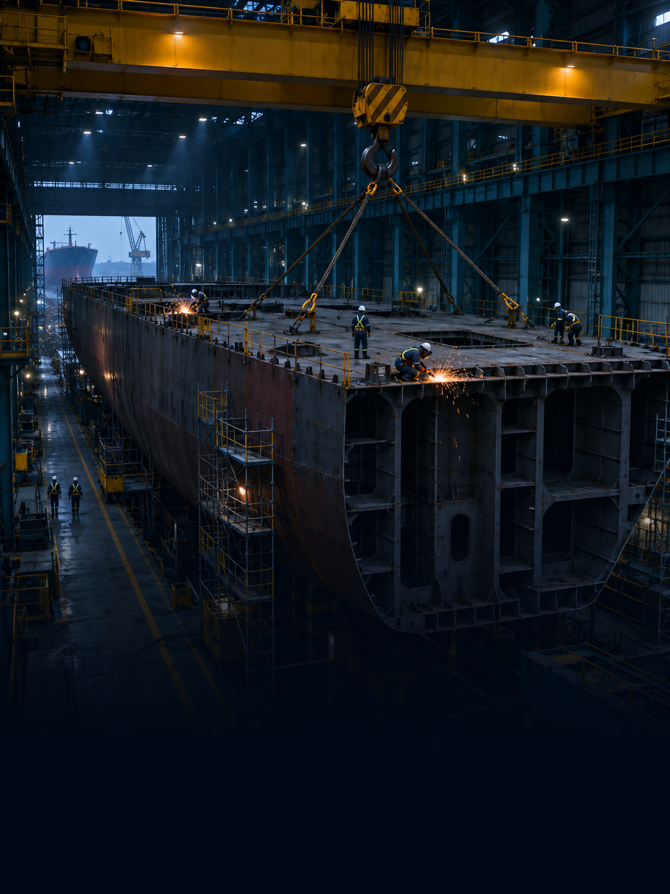

구성안 안내| 전체본 구성안
구성안 G1 구성안 팀원 확인용 전체본 — 구성안 안내 4 · 본편 64 · 부록 60, 모두 128장
파트별 흐름 · 막대 길이 = 장 수
본편 64장 5–68쪽
2
PART 01 9장
PART 02 10장
PART 03 21장
PART 04 9장
PART 05·마무리 13장
부록 60장 69–128쪽
A01
A02
A03
A07
A08
A10
A14
A16
A17
A19
본선 평가항목 · 배점 100 · 해당 본편 장 수
표지 제목 후보 (구성자 초안)
초안 A 작업 전에 서류를 읽고, 작업 사이의 위험까지 묻는 AI
대안 B 허가서의 빈칸에서, 함께하는 작업의 위험까지
대안 C 서류는 있는데 정보가 부족하다 — 작업 전 사전검토 AI
근거 본선 평가항목: 팀 스토리보드 R10(예선 공고: 주제 적합성 20·창의성 30·실현 가능성 30·창출효과 20) · 장 수는 각 장 금색 뱃지 집계(항목 2개면 둘 다 셈)
구성안 안내 첫 장입니다. 이 파일은 발표용 압축본이 아니라 팀원이 내용을 확인하는 전체본입니다. 본편 64장과 부록 60장을 모두 담았고, 발표 길이에 맞춘 압축은 팀이 직접 정합니다.
2026 K-조선 해커톤 · croScan 1
구성안 안내| 전체 장표 지도 ① 본편 64장
구성안 G2-1 구성안
도입·배경 5–15쪽
5 표지
6 목차
7 PART 01 구분
8 안전 현황 ① 규모
9 안전 현황 ② 작업
10 경계를 넘는 위험
11 조선 3사의 방향
12 원청의 법적 의무
13 현장 PTW(As-Is)
14 흐름 속 빈틈 3곳
15 문제 정의
선정·현장 검증 16–25쪽
16 PART 02 구분
17 대조립 고른 이유
18 선정 기준·경위
19 대조립의 서류
20 현장 적용 원칙
21 현장 목소리 ① 사람
22 현장 목소리 ② 결정
23 현장 정정 35항목
24 설계 원칙 ①
25 설계 원칙 ② AI 밖
솔루션·시연 26–46쪽
26 PART 03 구분
27 한 장 요약
28 현장 vs croScan
29 붙는 3곳
30 단계별 변화 ①
31 단계별 변화 ②
32 HiSEs가 하는 일
33 croScan이 더하는 것
34 축별 비교
35 HiSEs와 잇는 지점
36 기존 전산 대비 ①
37 기존 전산 대비 ②
38 가치 기능 4가지
39 반장 ① 되묻기
40 반장 ② 체크리스트
41 반장 ③ 제출
42 제출 서류 3가지
43 안전관리자 ① 하루
44 안전관리자 ② 1순위
45 안전관리자 ③ 근거
46 안전관리자 ④ 게시
기술 47–55쪽
47 PART 04 구분
48 아키텍처 ① 구조
49 아키텍처 ② 규칙
50 아키텍처 ③ AI
51 온프레미스 이유
52 AI가 하는 일
53 실험 ① 답 해석
54 실험 ② 속도
55 실험 ③ 규칙 보강
사업화·효과 56–68쪽
56 PART 05 구분
57 역할 페르소나
58 HiSEs 편입 ① 구조
59 HiSEs 편입 ② 모델
60 정량 ① 공장 1곳
61 정량 ② 일반식
62 정량 ③ TDABC
63 효과 ① 핵심 5
64 효과 ② 생산
65 효과 ③ 측정 축
66 후속 ① 로드맵
67 후속 ② 연동 조건
68 마무리
읽는 법 칸 앞 숫자 = 쪽 번호 · 회색 칸 = 표지·목차·구분장·마무리 · 이름은 줄임말, 원제목은 해당 쪽 참조 · 쪽 번호는 build.py가 제목으로 계산
본편 전체 지도입니다. 파트 색으로 묶었고, 칸 앞 숫자는 이 파일의 쪽 번호입니다.
2026 K-조선 해커톤 · croScan 2
구성안 안내| 전체 장표 지도 ② 부록 60장
구성안 G2-2 구성안
근거·현장 69–83쪽
69 APPENDIX 장
70 부록 구분·목차
71 A01-1 재해 통계
72 A01-2 재해 유형
73 A01-3 법령
74 A01-4 정책·산업
75 A02-1 HD 2026
76 A02-2 HD 2024
77 A02-3 한화·삼성
78 A03-1 운영 기능 ①
79 A03-2 운영 기능 ②
80 A03-3 계획·예정
81 A04-1 기록 ~10/28
82 A04-2 기록 ~10/31
83 A05 7공정 비교
시스템·규칙 84–97쪽
84 A06 양식 77칸
85 A07-1 질문 ①
86 A07-2 질문 ②
87 A07-3 순서·예산
88 A08-1 판정식
89 A08-2 규칙 1~8
90 A08-3 규칙 9~16
91 A08-4 규칙 17~24
92 A08-5 규칙 25~32
93 A08-6 규칙 33~36
94 A09 체크리스트 86
95 A10-1 AI 하는 일 ①
96 A10-2 AI 하는 일 ②
97 A10-3 안 하는 일
실험·운영·효과 98–109쪽
98 A11-1 답 읽기 평가
99 A11-2 속도
100 A12 시험·QA
101 A13 배포·보안
102 A14-1 이전 가정
103 A14-2 433시간
104 A14-3 TDABC
105 A15 안전효과 검증
106 A16-1 허가서 10건
107 A16-2 데이터 구성
108 A16-3 클립·반장
109 A16-4 클립·관리자
한계·출처·비교 110–128쪽
110 A17-1 한계
111 A17-2 미확인 자료
112 A17-3 예상 질문
113 A18-1 출처 ①
114 A18-2 출처 ②
115 A19-1 승인·검토
116 A19-2 위험 발견 ①
117 A19-3 위험 발견 ②
118 A19-4 위험 발견 ③
119 A19-5 반복업무 ①
120 A19-6 반복업무 ②
121 A19-7 반복업무 ③
122 A19-8 협의·전달 ①
123 A19-9 협의·전달 ②
124 A19-10 생산·경제 ①
125 A19-11 생산·경제 ②
126 A19-12 추가 구축
127 A20-1 핵심 문장 5
128 A20-2 금지 표현
읽는 법 칸 앞 숫자 = 쪽 번호 · 부록은 질의응답·사전 검토용 · A19는 기존 전산 대비 58항목 비교(12장)
부록 전체 지도입니다. 질문이 나오면 이 지도에서 A번호와 쪽을 찾아 바로 넘깁니다.
2026 K-조선 해커톤 · croScan 3
구성안 안내| 필요 자료 · 팀 결정 사항
구성안 G3 구성안 각 장의 필요 자료를 모아 정리 — 팀이 결정할 것 3가지 부터
팀 결정
1 효과 가정값 확정건수·분·일수 · 60–62쪽
2 작성자 급여 공식 통계 교체 여부지금은 채용공고 대리값 · 62쪽 · A14
3 안전관리 담당자 질의서 응답 범위3번째 관계자 · 21쪽
보유
시연 21클립 · 대표화면 21장앱 실제 화면 · 합성 시연 자료 39–46쪽
조선 3사 공식보고서HD현대중공업 · 한화오션 · 삼성중공업 11쪽 · A02
고용노동부 재해현황 · 사례집 8–10쪽 · A01
현장 인터뷰 · 멘토링 · 정정 35 21–23쪽 · A04
서버 실측 · 답 해석 1,200건 51–55쪽 · A11
생성 이미지 8장 · 일러스트 17종실제 현장 사진 아님 표지 · 구분장
추가 확보
실제 현장·공정 사진 사용권 5 · 17쪽
실물 허가서 0453 사진개인정보 가림 처리 14–15쪽
앱 화면 확대 캡처V01 · V11 · V12 등 39–45쪽
업무 시간 실측 · 대기 기록업·다운로드 포함 총업무 65쪽 · A19
실사용자 시험 일정 · 참여자반장 5 · 안전관리자 2, 미실시 67쪽 · A12
발표 중 재생할 클립 구간 38쪽 · A16
확인 필요
팀원 이름 · 소속 · 표지 제목 5쪽 · G1
최신 통계 · 사례집 원문 쪽 8–10쪽
2중점검 Y/N 기준 · 스캔 주체 13쪽
HiSEs 사용 범위 · 연동 방식회사 확인 32 · 59쪽
사내 서버 사양 · GPU 재측정 49–51쪽
보강 후 1,200건 재평가 여부 55쪽 · A11
근거 각 장 오른쪽 아래 「필요」 칸 모음(본편·부록) · img/INDEX.md(생성 이미지) · 숫자는 쪽 번호
각 장의 필요 자료 칸을 모은 목록입니다. 위의 세 가지는 팀이 정해야 해당 장의 문장과 숫자가 확정됩니다.
2026 K-조선 해커톤 · croScan 4
2026 K-조선 해커톤
작업 전에 서류를 읽고,위험까지 묻는 AI
대조립 위험작업허가서·작업계획서 사전검토 AX · croScan
소속 · 발표자 [팀원 이름 확인 필요]
K-조선 해커톤 본선
2026. 11. 9.(월)
주최 산업통상부
팀원 이름·소속 · 제목 확정(G1 후보 3개) · 실제 현장 사진 사용권
표지입니다. 팀 이름과 주제를 소개합니다. 제목은 구성자 초안이며, G1의 후보 3개 중에서 팀이 확정합니다.
2026 K-조선 해커톤 · croScan 5
01 왜 이 문제인가 7–15쪽 · 배경 · 문제
조선업 안전 현황8–9 경계를 넘는 위험10 3사 방향 · 법적 의무11–12 현장 PTW(As-Is)13–14 문제 정의15
02 현장에서 좁히고 검증한 과정 16–25쪽 · 선정 · 현장 검증
대조립 선정17–18 대조립의 서류19–20 현장 목소리21–22 현장 정정 35항목23 설계 원칙24–25
03 croScan 솔루션 26–46쪽 · 솔루션 · 시연
한 장 요약27 현장 vs croScan28–31 HiSEs와 무엇이 다른가32–37 가치 기능 4가지38 작업반장 흐름39–42 안전관리자 흐름43–46
04 온프레미스 AI 기술 47–55쪽 · 기술
아키텍처48–50 온프레미스 · 소형 모델51 AI가 하는 일 · 하지 않는 일52 실험과 검증53–55
05 사업화 · 기대효과 56–68쪽 · 사업화 · 효과 · 마무리
역할 페르소나57 HiSEs 편입 사업모델58–59 정량 효과60–62 안전 · 생산 효과63–65 후속계획66–67 마무리68
APX 부록 69–128쪽 · 질의응답 · 사전 검토용
통계 · 3사 자료71–77 원문 대조 · 현장 기록78–83 규칙 · 체크리스트 · AI84–97 실험 · 운영 · 효과 산식98–109 한계 · 출처 · 전산 비교110–128
목차입니다. 왜 이 문제인가, 현장에서 좁히고 검증한 과정, croScan 솔루션, 온프레미스 AI 기술, 사업화와 기대효과 순서로 설명하고, 상세 근거는 부록에 모았습니다.
2026 K-조선 해커톤 · croScan 6

PART
01
왜 이 문제인가
조선업 재해 통계와 실제 사고, 조선 3사의 방향,
01
조선업 안전 현황
사망 위험 4배 · 작업형태별 사고사망
8–9쪽
02
위험은 작업의 경계에서 멈추지 않는다
상하 작업 · 화기 인접 사고 사례 3건
10쪽
03
조선 3사의 방향과 법적 의무
예방·디지털 안전 · 원청의 혼재작업 조정 의무
11–12쪽
04
현장 PTW는 지금 이렇게 돌아간다
As-Is 흐름 · 흐름 속 빈틈 3곳
13–14쪽
05
문제 정의
서류는 있는데, 판단에 쓸 정보가 부족하다
15쪽
croScan · 2026 K-조선 해커톤 본선
PART 01에서는 왜 이 문제를 골랐는지 1분 40초 안에 설명합니다. 공식 통계로 조선업의 위험 수준을 보이고, 실제 사고 사례로 위험이 작업 경계를 넘는다는 점을 보입니다. 이어 조선 3사의 안전 방향과 원청의 법적 의무를 짚고, 현장의 PTW 흐름과 그 빈틈을 거쳐 문제 정의로 마무리합니다. 장수는 늘었지만 한 장에 한 가지만 말하도록 나눴습니다.
근거: 고용노동부 산업재해현황, 2025 조선업 중대재해 사례집, 조선 3사 보고서, 산업안전보건법, 현장 인터뷰 통합본.
필요 자료: 없음.
2026 K-조선 해커톤 · croScan 7
조선업 안전 현황 | 재해 규모
PART 01 · 배경 평가항목 조선업 사망 위험은 전산업의 약 4배
2025 · 사망만인율
4.11‱
전산업 0.99‱의 약 4배
선박건조 및 수리업
2025 · 재해자
3,512명
재해율 2.33% (전산업 0.65%)
같은 해 산재승인 사망 62명
2024 · 업무상사고 사망 15명
화재5명
사고 유형 중 가장 많음
15명 중 10명은
읽는 법
사망자 수는 통계마다 기준이 다름 — 산재승인 62명 · 업무상사고 15명 · 재해조사 대상 20명숫자를 말할 때 통계 이름을 함께 말하고, 서로 합치지 않음
고용노동부 「2025년 산업재해현황」에 따르면 조선업(선박건조 및 수리업)의 사망만인율은 4.11‱로, 전산업 0.99‱의 약 4배입니다. 같은 해 재해자는 3,512명이고 재해율은 2.33%로 전산업 0.65%보다 높습니다. 2024년 업무상사고 사망 15명 가운데 화재가 5명으로 가장 많았고, 15명 중 10명은 근속 6개월 미만이었습니다. 사망자 수는 통계 기준마다 다르므로(산재승인 62명, 업무상사고 15명, 재해조사 대상 20명), 숫자를 말할 때는 반드시 통계 이름을 함께 말하고 합치지 않습니다.
근거: 고용노동부 「2025년 산업재해현황」(2026.3.31), 「2024 산업재해현황분석」 260·289·316~317쪽, 보도자료(2025.3.11, 재해조사 대상 사고사망 20명), research_web.md K1~K4.
필요 자료: 최신 통계 갱신 여부 확인.
근거 고용노동부 「2025년 산업재해현황」(2026.3.31) · 「2024 산업재해현황분석」 260·289·316쪽 · 보도자료(2025.3.11)
필요: 최신 통계 갱신 여부
2026 K-조선 해커톤 · croScan 8
조선업 안전 현황 | 어떤 작업에서
PART 01 · 배경 평가항목 10년간 사고사망은 중량물 다음으로 화기(절단·용접) 에서
작업형태별 사고사망 비율 · 최근 10년(2015~2024)
중량물 취급
화기(절단·용접)
운반기계·설비
이동
정비·유지보수·청소
25.5%
19.7%
14.0%
10.8%
7.0%
나머지 항목은 원문 도표 확인 전 미표기
사고사망자 중 하청 소속
77.7%
원청 소속 22.3%
발생형태 순위(사망자)
1 떨어짐
2 화재·폭발
3 끼임 · 4 깔림·뒤집힘
안전보건공단 사례집의 최근 10년(2015~2024) 분석에서 사고사망은 중량물 취급(25.5%) 다음으로 화기작업, 즉 절단·용접(19.7%)에서 많았습니다. 발생형태로는 떨어짐이 가장 많고 화재·폭발이 뒤를 이었습니다. 사고사망자의 약 77.7%는 하청 소속이었습니다. 원문 도표와 대응이 확인된 5개 항목만 표시했고, 나머지 비율은 원문 도표를 확인하기 전이라 표기하지 않았습니다. croScan이 다루는 화기·고소·중량물 허가서가 바로 이 위험과 맞닿아 있습니다.
근거: 안전보건공단 부산광역본부 「2025 조선업 중대재해 사례집」 6쪽(작업형태별), 7쪽(발생형태 순위 문장), 9쪽(원·하청 비율).
필요 자료: 사례집 6·7쪽 그래프 원문 대조(PDF 텍스트 추출값 사용).
근거 안전보건공단 부산광역본부 「2025 조선업 중대재해 사례집」(2015~2024) 6·7·9쪽
필요: 사례집 그래프 원문 대조
2026 K-조선 해커톤 · croScan 9
위험은 작업의 경계에서 멈추지 않는다
PART 01 · 배경 평가항목 낙하물·불티·가스는 다른 팀의 작업 구역 으로 번진다
상부 절단 ↓ 하부 족장 해체
A반 · 블록 상부 러그 절단
B반 · 블록 측면 족장 해체
낙하·불티
같은 시간 · 같은 블록 · 다른 반
45m 비계 위 가용접 중 와이어 스풀(약 10kg) 낙하하부에서 일하던 작업자 가 맞아 사망
탱크 안 산소절단 중 보온재에 불이 붙음격벽 너머 탱크로 번져 그곳 작업자 2명 사망
서포트로 받친 선박 블록(120톤) 전도하부에서 용접 중이던 작업자 2명 사망
공식 진단
2017 크레인 충돌(6명 사망) 조사위: 「작업계획 정보 공유 ·사전교육 미실시」 · 협력업체 노동자 29.2% 「혼재작업 빈번하나 관리 안 됨」
조선소에서는 한 블록 위아래에서 다른 반이 동시에 일합니다. 사례집에는 45m 비계 위 가용접 중 떨어진 와이어 스풀에 하부 작업자가 맞은 사고, 탱크 용단 불이 격벽 너머로 번져 그곳 작업자 2명이 숨진 사고, 받쳐 둔 블록이 넘어져 아래에서 용접하던 2명이 숨진 사고가 실려 있습니다. 세 사고 모두 위험이 한 작업의 경계를 넘어 다른 사람에게 닿았습니다. 2017년 크레인 충돌 사고의 정부 조사위원회도 작업계획 정보 공유와 사전교육이 없었던 점을 혼재작업 재해의 원인으로 들었습니다. 이 사례들이 croScan으로 막혔을 것이라고 단정하지는 않습니다.
근거: 안전보건공단 「2025 조선업 중대재해 사례집」 17·31·33쪽(2015~2024 사례, 사례별 연도 미표기), 고용노동부 「조선업 중대산업재해 국민참여 조사위원회 사고조사보고서」(2018) 141·281쪽.
필요 자료: 사례집 PDF 원문 쪽 재확인, 왼쪽 도식은 개념도로 표기 유지.
근거 안전보건공단 「2025 조선업 중대재해 사례집」 17·31·33쪽 · 고용노동부 국민참여 조사위원회 보고서(2018) · 도식은 개념도
필요: 사례집 원문 쪽 재확인
2026 K-조선 해커톤 · croScan 10
조선 3사의 안전 방향
PART 01 · 배경 평가항목 3사 모두 예방 중심 · 디지털 안전 에 투자
HD현대중공업
2026 안전·보건 경영보고서
전사적 안전관리(ESM)
사업 전 과정 선제 관리로 전환p.16
Hi-SIGHT 사전 경고 31건2025.1~7 사고 362건 중 p.27
PTW 도장·화기 병행 알림p.56
PTW 제도 변경 · HiSEs 4차 고도화p.5
한화오션
2025 지속가능경영보고서
선제적 안전 투자
스마트 안전야드 310억 원(2025)p.36
고위험작업 AI 이동형 CCTVp.36
종속회사: 안전관리자가 PTW 관리p.44
삼성중공업
2023 지속가능경영보고서
스마트 안전을 통한
스마트 안전 로드맵 STEP1→32024 목표 p.70
측위 기반 Risk 관제(목표)p.70
리스크 예측 고도화(목표)p.70
로드맵 완료 여부는 별도 확인
조선 3사의 공식 보고서는 모두 사고 뒤 대응보다 미리 예측하고 예방하는 쪽으로 가고 있습니다. HD현대중공업은 사업 전 과정을 관리하는 전사적 안전관리로의 전환을 밝혔고, Hi-SIGHT 예측과 PTW 도장·화기 병행 필터링을 이미 운영합니다. 한화오션은 2026년까지 약 2조 원의 안전예산을 계획했고 2026년에 약 7,641억 원을 투자할 예정입니다. 삼성중공업은 2023 보고서에서 2024년을 목표로 한 스마트 안전 로드맵을 제시했습니다(완료 여부는 별도 확인). croScan은 이 흐름 안에서 PTW 앞단의 서류 검토를 보완하는 도구로 제안합니다.
근거: HD현대중공업 2026 안전·보건 경영보고서 PDF 5·16·27·56쪽, 한화오션 2025 지속가능경영보고서 PDF 36쪽·44쪽(44쪽 PTW 관리는 종속회사 한화오션에코텍 사례), 삼성중공업 2023 지속가능경영보고서 PDF 70쪽.
필요 자료: 보고서 표지 축소 이미지(로고를 제휴처럼 쓰지 않음).
근거 HD현대중공업 2026 보고서 PDF 5·16·27·56쪽 · 한화오션 2025 보고서 PDF 36·44쪽 · 삼성중공업 2023 보고서 PDF 70쪽
필요: 보고서 표지 축소 이미지
2026 K-조선 해커톤 · croScan 11
법이 정한 원청의 의무
PART 01 · 배경 평가항목 같은 장소 작업의 확인·조정은 원청(도급인)의 법적 의무
산업안전보건법 제64조 ① 제7호
확인
같은 장소에서 이뤄지는 관계수급인 작업의작업시기·내용, 안전·보건조치 확인
산업안전보건법 제64조 ① 제8호
조정
작업 혼재로 화재·폭발 등 위험이 우려되면작업시기·내용 등을 조정
시행령 제53조의2 · 혼재 위험 8가지
1 화재·폭발
2 끼임
3 충돌
4 추락
5 낙하·비래
6 넘어짐
7 붕괴
8 질식·중독
주황 = 사례집 사례(S05)와 겹치는 유형
연결
확인·조정을 하려면 먼저 각 작업의 시기·장소·내용 이 정확해야 함
법도 같은 장소에서 일어나는 작업을 원청이 챙기도록 정하고 있습니다. 산업안전보건법 제64조 제1항 제7호는 도급인이 같은 장소 관계수급인 작업의 시기·내용과 안전·보건조치를 확인하도록, 제8호는 작업 혼재로 화재·폭발 등 위험이 우려되면 작업시기·내용을 조정하도록 정합니다. 시행령 제53조의2는 혼재 위험을 화재·폭발, 끼임, 충돌, 추락, 낙하·비래, 넘어짐·무너짐, 붕괴, 질식·중독의 8가지로 정합니다. 확인과 조정을 하려면 먼저 각 작업의 시기·장소·내용이 정확해야 하고, 이것이 다음 장의 현장 흐름으로 이어집니다.
근거: 국가법령정보센터 산업안전보건법 제64조(2021.5.18 개정), 같은 법 시행령 제53조의2(2021.11.19 신설), research_web.md 3절·K6.
필요 자료: 없음.
근거 산업안전보건법 제64조 ① 제7·8호 · 같은 법 시행령 제53조의2 (국가법령정보센터) · research_web K6
필요: 조문 원문 문구 최종 대조
2026 K-조선 해커톤 · croScan 12
현장 PTW는 지금 이렇게 돌아간다 | As-Is
PART 01 · 문제 평가항목 절차는 이미 촘촘하다 — 작성부터 착수까지
전산처리 · 세부 선후 미확인 작업일 착수 준비 · 선후 미확인
1
허가서 작성·제출
HiSEs · 7일 단위
작업반장
2
전산승인
승인 서명
생산부서 승인권한자
3
PTW 스캔
2중점검 Y/N
Y
N
4
안전대면허가
Y 대상 · 아침
안전요원
5
현장 게시·TBM
교육 · 서명
작업자
6
착수
조건 충족 후
+ +
작성 약 15분*
안전 검토 약 5분*
계획서 검토 10분*
역할
전산승인 = 생산부서 승인권한자 · 대면허가 = 2중점검 Y 대상 , 안전요원안전 측은 검토·지원·현장 확인 · 진행 중 변경·재진입은 다시 조율
점선 묶음 안의 세부 선후는 미확인(인터뷰 통합본 p.4) · * 멘토·현장 참고값(실측 아님), 합산하지 않음 · 7일 단위 신청은 팀 채택 해석
현장의 위험작업허가 절차는 이미 촘촘합니다. 작업반장이 HiSEs로 허가서를 쓰고 제출하면, 생산부서 승인권한자가 전산승인하고, PTW 스캔 때 2중점검 Y/N이 정해집니다. 작업일에는 Y 대상이면 아침에 안전요원의 대면허가를 받고, 현장 게시·TBM·서명을 거쳐 조건을 갖춘 뒤 착수합니다. 다만 전산승인과 PTW 스캔의 선후, 작업일의 교육·TBM·서명·대면허가의 세부 선후는 아직 확인되지 않아 점선으로 묶어 표시했습니다. 작성 15분·검토 5분·계획서 검토 10분은 멘토가 말한 참고값이며 실측이 아니므로 합산하지 않습니다.
근거: 현장 인터뷰 통합본(2026-10-29) 4~11쪽, 현업자 멘토링 종합정리본 §3, 현장정정 D01(전산승인 주체)·D02(Y/N 시점).
필요 자료: Y/N 판정 기준과 스캔 주체, 7일 단위 신청의 회사 규정 확인(현재는 팀 채택 해석).
근거 현장 인터뷰 통합본(2026-10-29) 4~11쪽 · 현업자 멘토링 종합정리본 §3 · 현장정정 D01·D02
필요: Y/N 판정 기준·스캔 주체 확인
2026 K-조선 해커톤 · croScan 13
흐름 속 빈틈 3곳
PART 01 · 문제 평가항목 빈틈은 서류에 적힌 정보의 질 과 작업 사이
작성·제출
전산승인
PTW 스캔
대면허가
게시·TBM
착수
1
2
3
1 넓은 시간 · 팀 이름 장소
작성 → 승인 사이
6일 모두 08:00~16:59로 신청
장소 칸에 「UNIT2공장 유니트4팀」
2 체크와 위험요소가 따로
승인 → 스캔 사이
아르곤가스 체크, 위험요소는 「질식, 소음」뿐
호선·병행여부 빈칸 그대로
3 일상 × 비일상 사이
착수 직전
일상작업은 허가서 없이 계획서로만
다른 공정 일정은 알기 어렵고, 겹치면 그때 협의
빈틈은 절차가 아니라 서류에 적힌 정보의 질과 작업 사이에 있습니다. 첫째, 실물 허가서에는 6일 모두 08:00~16:59, 장소는 팀 이름으로 적혀 있어 다른 작업과 겹치는지 가릴 수 없었습니다. 둘째, 아르곤가스에 체크했는데 위험요소는 「질식, 소음」뿐이었고 호선·병행여부는 빈칸이었지만, 하루 수십 건을 보는 검토자가 일일이 되묻기 어렵습니다. 셋째, 일상작업은 허가서 없이 계획서로만 진행되고, 현장 안전요원은 다른 공정 일정을 알기 어려워 겹치면 그때 협의한다고 했습니다. 빈틈 위치는 설명을 위한 표시이며 실제 단계의 선후를 확정한 것은 아닙니다.
근거: 멘토 제공 실물 허가서 0453(밀폐, 2026-10-21), 현장 인터뷰 통합본(2026-10-29) 33쪽(안전요원 문제 5가지), 현업자 멘토링 종합정리본 §3(하루 40~50건 검토 부담, 멘토 발언).
필요 자료: 0453 사진을 쓸 경우 이름·서명·QR 가림 처리와 사용 동의.
근거 멘토 제공 실물 허가서 0453(밀폐) · 현장 인터뷰 통합본 33쪽 · 멘토링 종합정리본 §3
필요: 0453 사진 사용권(가림 처리)
2026 K-조선 해커톤 · croScan 14
서류는 있는데 , 판단에 쓸 정보가 부족하다
현황
허가 절차·전산은 운영 중
작성 → 승인 → 대면허가 → TBM
신규 허가 약 8건/일 참고값
도장/화기 병행 필터링 운영
문제
작업장소
UNIT2공장 유니트4팀
작업시간
08:00~16:59 × 6일
위험요소
질식, 소음
아르곤가스
실물 0453 · 밀폐 · 배관 내부 진입
칸은 찼는데 비교가 안 된다
종일 시간 → 모든 작업과 겹쳐 보임
팀 이름 장소 → 위치 비교 불가
계획서는 허가서와 따로 관리
요구
작업 전에 묻고, 함께 대조
실제 시간·위치·방법 보충
계획서 × 허가서 함께 대조
근거와 함께 담당자에게
필요한 것
작업 전, 부족한 정보를 묻고 작업 사이 위험까지 보는 AI
정리하면 문제는 서류가 없는 것이 아니라, 서류에 판단에 쓸 정보가 부족하다는 것입니다. 허가 절차와 전산, 병행 필터링은 이미 운영되지만, 종일 시간과 팀 이름 장소로는 다른 작업과 겹치는지 가릴 수 없습니다. 일상 계획서도 허가서와 따로 관리됩니다. 그래서 작업 전에 부족한 정보를 반장에게 묻고, 계획서와 허가서를 함께 대조해, 근거와 함께 담당자에게 넘기는 AI가 필요합니다. 승인과 현장 확인은 지금처럼 기존 담당자가 맡습니다.
근거: 멘토 제공 실물 허가서 0453, 현장 인터뷰 통합본 11·33·44쪽, HD현대중공업 2026 보고서 p.56(병행 필터링), 멘토 참고값(신규 허가 약 8건/일).
필요 자료: 없음(0453 사진 사용 시 가림 처리).
근거 실물 허가서 0453 · 현장 인터뷰 통합본 11·33·44쪽 · HD현대중공업 2026 보고서 p.56 · 참고값은 멘토 설명
필요: 0453 사진 사용권
2026 K-조선 해커톤 · croScan 15
PART
02
현장에서 좁히고 검증
7개 공정에서 대조립을 고르고, 멘토·현장 관계자에게
01
7개 공정에서 대조립을 고른 이유
대조립 · 선정 기준과 경위
17–18쪽
02
대조립에서 다루는 서류
허가서 5종 · 계획서 40 + 허가서 10 · 적용 원칙
19–20쪽
03
현장 목소리
만난 사람 · 들은 것 → 바꾼 결정 6가지
21–22쪽
04
현장 정정 35항목을 대조한 결과
이미 맞음 18 · 반영 11 · 범위 밖 6
23쪽
05
설계 원칙
규칙이 판정, AI는 제안, 사람이 확정 · 하지 않는 일
24–25쪽
croScan · 2026 K-조선 해커톤 본선
PART 02는 문제를 어디에 적용할지 좁히고, 현장에서 들은 내용으로 설계를 고친 과정을 1분 30초 안에 보여 주는 구간입니다. 공정 선정, 대조립의 서류와 적용 원칙, 만난 사람과 바뀐 결정, 현장 정정 대조, 설계 원칙 순서로 말합니다. 한 장에 한 가지만 말하도록 장을 나눴습니다.
근거: 멘토질문_팀결정(10-23), 현장 인터뷰 통합본(10-29), 현장정정 반영검토(10-31).
필요 자료: 없음.
2026 K-조선 해커톤 · croScan 16
7개 공정에서 대조립을 고른 이유
PART 02 · 선정 평가항목 여러 직종이 한 공장에서 겹치는 곳 — 대조립
멘토가 추린 7개 공정 · 건조 순서
내업 외업 내업·외업
판넬조립
대조립
선행의장
선행도장
PE장
탑재
선체도장
1 멘토 설명
여러 직종이 함께 일하는 내업 에서 혼재작업 검토 필요가 큼
멘토링 전사 08:44~10:39
2 손글씨 메모
소조립·중조립·대조립 옆에
도메인 멘토 메모(10/21)
3 실물 허가서
「대조립21공장 2BAY 」처럼 공장·BAY 위치가 적혀 있음
멘토 제공 출력물 2장
멘토는 조선 건조 공정 가운데 판넬조립·대조립·선행의장·선행도장·PE장·탑재·선체도장의 7개 공정을 추려 주었고, PE장은 내업·외업 모두에 해당합니다. 그중 대조립을 고른 근거는 세 가지입니다. 멘토는 여러 직종이 함께 일하는 내업에서 혼재작업 검토의 필요가 크다고 설명했고, 손글씨 메모에도 대조립 옆에 「혼재 많음」이 적혀 있었습니다. 또 멘토가 준 실물 허가서에 대조립 공장의 BAY 위치가 적혀 있어 데이터와 시연을 만들 수 있었습니다. 철판절단·소조립은 7공정 밖의 대조립 앞 단계입니다.
근거: croScan_멘토질문_팀결정 D8(7공정·PE장), croScan_프로젝트_이해정리 §3·§5·§8, 현업자 멘토링 종합정리본 §2.1(전사 08:44~10:39).
필요 자료: 공정별 실제 사진(교안 xls) 사용 여부.
근거 멘토질문_팀결정 D8 · 프로젝트_이해정리 §3·§5·§8 · 멘토링 종합정리본 §2.1 · 철판절단·소조립은 7공정 밖
필요: 공정별 실제 사진
2026 K-조선 해커톤 · croScan 17
대조립 선정 기준과 경위
PART 02 · 선정 평가항목 4가지 기준 모두 높은 곳 — 대조립 (팀 판단)
평가 기준 판넬 대조립 선행의장 선행도장 PE장 탑재 선체도장 혼재 빈도 허가서 종류 데이터 확보 시연 가능성
선정 경위
처음 (10/17~10/23)
선행의장
작업장 도면 · RT 통제범위 자료 없음
10/24
대조립으로 확정
MVP 검토에 가장 합당하다는 의견
대조립을 고른 판단을 네 가지 기준으로 정리했습니다. 혼재 빈도, 허가서 종류의 다양성, 데이터 확보, 시연 가능성에서 대조립이 모두 높았습니다. 처음에는 선행의장(의장품 조립·용접 × 배관 RT)을 시연 공정으로 잡았지만, 작업장 도면과 RT 통제범위 자료가 없어 판정 근거를 세울 수 없었습니다. 그래서 10월 24일 대조립으로 확정했습니다. 표의 값은 멘토 발언과 보유 자료를 바탕으로 한 팀 판단이며 정량 점수가 아닙니다.
근거: croScan_멘토질문_팀결정 D6·D7(선행의장 공간·RT 자료 없음), croScan_프로젝트_이해정리 §1·§9, 사용자 지시 원문 2026-10-24, 공정 선정근거(팀 R5).
필요 자료: 매트릭스 평가값 팀 확인(팀 판단 표기 유지).
근거 멘토질문_팀결정 D6·D7 · 프로젝트_이해정리 §1·§9 · 사용자 지시 원문(10-24) · 평가값은 팀 판단
필요: 매트릭스 값 팀 확인
2026 K-조선 해커톤 · croScan 18
대조립에서 다루는 서류
PART 02 · 선정 평가항목 한 공장의 하루 = 일상 계획서 40 + 비일상 허가서 10
허가서 5종 · 비일상작업 · 신고하고 하는 작업
시연 하루 · 2026-10-29 · 전부 합성
40건
작업계획서 · 일상
본청 10 + 협력사 30 · 허가서 없이 진행
+
10건
허가서 · 비일상
5종 × 2건(대충 쓴 형 1 + 꼼꼼한 형 1)
멘토: 「한 팀에 하루 40~50건이면 바쁜 날」 참고값
대조립 공장에서 croScan이 다루는 서류는 두 가지입니다. 하나는 비일상작업의 위험작업허가서 5종(화기·밀폐·고소·중량물 인양·정전/LOTO)이고, 다른 하나는 허가서 없이 진행하는 일상작업의 작업계획서입니다. 시연은 대조립 공장의 바쁜 하루를 가정해 계획서 40건과 허가서 10건, 모두 50건을 팀이 합성했습니다. 허가서는 종류마다 대충 쓴 형과 꼼꼼한 형을 1건씩 두었습니다. 이 규모는 멘토가 「한 팀에 하루 40~50건이면 바쁜 날」이라고 말한 것을 참고한 것이며 실측 통계가 아닙니다.
근거: croScan_app/samples/시연_하루/README.md(허가서 10·계획서 40, 5종×A·B형, 본청 10·협력사 30).
필요 자료: 허가서 5종 실제 화면 캡처(V01 대표화면) 교체 여부.
근거 croScan_app/samples/시연_하루/README.md(허가서 10·계획서 40, 전부 합성) · 멘토 발언(참고값)
필요: 허가서 실제 화면 캡처(V01)
2026 K-조선 해커톤 · croScan 19
현장 적용 원칙
PART 02 · 선정 평가항목 「우리 전산에 맞춰라」가 아니라 지금 틀 안에서
A 바꾸지 않는다
양식 · 전산 · 절차
원본 PDF는 바꾸지 않고 보존
HiSEs 신청·전산승인·대면허가 유지
허가서 양식의 칸 이름 그대로 읽기
B 최소로 묻는다
판별에 필요한 추가 확인만
응답 요청은 검토 1건당 최대 12회(재질문·확인 포함)
당일 칸·서명 · 2중점검 Y/N은 질문·판정 안 함
모르는 조건은 「미정」으로 남김
C 작성은 자동화한다
기존 틀 안의 서류 작성
답을 허가서 반영본·추가검토서로
체크리스트: 86항목 중 종류별 기본 19~28항목 제안
현장 게시 별지·협조 문자 초안
croScan을 현장에 붙일 때 세 가지 원칙을 지켰습니다. A, 양식·전산·절차는 바꾸지 않습니다. 원본 PDF는 그대로 두고 HiSEs 신청·전산승인·대면허가도 그대로입니다. B, 추가 확인은 판별에 필요한 것만 최소로 묻습니다. 응답 요청은 검토 1건당 최대 12회(재질문·확인 카드 포함)이고, 당일 칸·서명·2중점검 Y/N은 질문하거나 판정하지 않으며, 모르는 조건은 「미정」으로 둡니다. C, 기존 틀 안의 작성은 적극 자동화해 반영본·추가검토서·체크리스트(전체 86항목 중 허가 종류별 기본 19~28항목, 화기 28)·게시 별지를 만듭니다.
근거: 인수인계 노트 00 §4(A/B/C), 노트 03(응답 요청 최대 12회), 노트 07(체크리스트 86항목 카탈로그), codex/outF 22·23·24.
필요 자료: 없음.
근거 인수인계 노트 00 §4(A·B·C) · 노트 03(응답 요청 12회) · 노트 07(86항목 카탈로그) · codex/outF
필요: 없음
2026 K-조선 해커톤 · croScan 20
현장 목소리 | 만난 사람
PART 02 · 검증 평가항목 현장 관계자 3명 과 기술 멘토 1명을 직접 만났다
현장 1
도메인 멘토
前 대형 조선소 · 現 중견기업 본부장
10/21 대면 약 59분
현장 2
현장 안전요원
조선소 현장 안전 확인 역할
10/28 통화 약 18분
현장 3
안전관리 담당자
조선소 안전관리부서
10/25 서면 질의응답 범위 확인 중
기술 멘토
AI 멘토
대회 배정 · 현장 관계자와 별도
10/18 멘토링
10/18 AI 멘토링
10/21 도메인 멘토링 메모·실물 2장
10/24 대조립 확정
10/25 담당자 질의
10/28 안전요원 통화 멘토 서면 답변
10/29 통합본 → 앱 반영
10/31 정정 35항목
팀은 현장 관계자 세 분과 기술 멘토 한 분을 직접 만났습니다. 대형 조선소 출신 도메인 멘토에게서는 10월 21일 약 59분의 대면 멘토링과 손글씨 메모, 실물 허가서 2장을 받았고, 10월 28일 서면 답변도 받았습니다. 같은 날 현장 안전요원과 약 18분 통화하며 다른 공정 일정 파악의 어려움, 완료 후 재진입 같은 현장 문제 5가지를 들었습니다. 10월 25일에는 조선소 안전관리부서의 안전관리 담당자에게 허가 절차와 승인 역할, 대조립 선정의 적절성을 서면으로 물었고, 응답 범위는 확인 중입니다. 기록으로 발언이 식별되는 사람은 도메인 멘토와 현장 안전요원입니다. AI 멘토는 현장 관계자가 아닌 기술 멘토로 따로 표시했습니다.
근거: 팀 기록·사용자 확인(현장 관계자 3명), 현업자 멘토링 종합정리본(10-22), 현장 인터뷰 통합본(10-29) 3·33~34·47쪽, 안전관리부서 질의서, AI 멘토링 자료(10-17 질문지). 전체 연혁은 부록 A04.
필요 자료: 안전관리 담당자의 회신 내용·응답 범위 확인, 인터뷰 사진 사용 여부.
근거 팀 기록·사용자 확인(3명) · 발언 기록 식별: 도메인 멘토·안전요원 · 담당자 질의서 응답 확인 중 · 연혁 A04
필요: 3번째 관계자 응답 범위 확인
2026 K-조선 해커톤 · croScan 21
현장 목소리 | 바뀐 결정
PART 02 · 검증 평가항목 들은 것 6가지가 설계를 바꿨다
들은 것 바꾼 결정 멘토 신고서 한 건의 위험 포인트 누락이 먼저→ 단건 검토 우선, 쌍 검토는 그 안에서 멘토 도장·용접이 같은 곳에서 동시에는 드묾→ 대표 사례: 상부 절단 × 하부 족장 해체 현장 전산승인은 생산부서 승인권한자→ 「승인은 안전팀」 문구를 역할별로 수정 현장 2중점검 Y/N은 PTW 스캔 때 정해짐→ 대면허가 집계를 2중점검 Y 기준으로 현장 같은 작업장은 7일 단위로 신청→ 「진행 중 7일 허가」도 그날 작업에 포함 현장 시간만 나눠도 가스·압력·열은 남음→ 「잔류위험 현장 확인 전」 표시 · 선후 인계 칸
멘토 = 도메인 멘토 · 현장 = 현장 안전요원 통화와 멘토 서면 답변(인터뷰 통합본)
들은 내용 하나하나가 실제 설계를 바꿨습니다. 멘토가 신고서 한 건의 위험 포인트 누락이 먼저라고 해서 단건 검토를 우선에 두었고, 도장·용접이 같은 곳에서 동시에 진행되는 일은 드물다고 해서 대표 사례를 상부 절단 × 하부 족장 해체로 바꿨습니다. 현장 확인으로 전산승인 주체가 생산부서 승인권한자임을 알고 화면 문구를 고쳤고, 2중점검 Y/N이 PTW 스캔 때 정해진다는 설명에 맞춰 대면허가 집계 기준을 바꿨습니다. 같은 작업장은 7일 단위로 신청한다는 점을 반영해 진행 중 허가도 그날 작업에 넣었고, 시간만 나눠도 잔류 가스·압력·열은 남는다는 지적에 따라 「잔류위험 현장 확인 전」 표시와 선후 인계 칸을 만들었습니다.
근거: 현업자 멘토링 종합정리본(전사 43:41~47:04·13:29~16:09), 현장 인터뷰 통합본(10-29) 5~7·12쪽, croScan_현장인터뷰_반영_2026-10-29 §1.
필요 자료: 없음.
근거 멘토링 종합정리본(전사 43:41~47:04·13:29~16:09) · 인터뷰 통합본 5~7·12쪽 · 현장인터뷰_반영(10-29) §1
필요: 없음
2026 K-조선 해커톤 · croScan 22
현장 정정 35항목을 대조한 결과
PART 02 · 검증 평가항목 현장 정정 35항목 — 절반 이상은 이미 맞았고 , 11건은 바로 고쳤다
35
D01~D35
반영 11건은 모두 문구·설명 수준
대표 정정 3건 · 전 → 후
D01 · 전산승인 역할
「최종 판단과 승인은 안전팀」
→
생산부서 승인권한자
안전 측은 검토·지원·현장 확인
D02 · Y/N 결정 시점
「스캔 때 전산이 정함」 단정
→
스캔 때 정해짐(기준 미확인)
croScan은 Y/N을 판정하지 않음
D21 · 기존 전산 기능
「전산이 거르는 유일한 조합」
→
도장·화기 필터 기능 있음
선내 사례 · 대조립 전체로 넓히지 않음
10월 31일 팀이 412쪽 조사본과 현장 자료를 비교해 정리한 정정 35항목을 앱·설계서와 하나씩 대조했습니다. 18건은 이미 맞았고, 11건은 바로 고쳤으며, 6건은 발표·기획 자료의 몫이라 범위 밖으로 두었습니다. 고친 11건은 모두 문구와 설명 수준이고 판정 로직은 바꾸지 않았습니다. 대표적으로 전산승인 주체를 생산부서 승인권한자로 바로잡았고, Y/N 결정 시점의 단정을 풀었으며(croScan은 2중점검 Y/N을 질문·판정하지 않음), 기존 전산의 도장·화기 필터를 「유일한 조합」이라고 과장하던 문구를 고쳤습니다.
근거: croScan_현장정정_반영검토_2026-10-31.md 결과 요약·항목별 대조(D01·D02·D21).
필요 자료: 정정 35항목 원문 대조표(A04와 연결).
근거 croScan_현장정정_반영검토_2026-10-31 결과 요약·D01·D02·D21 · 입력: 팀 정리 정정 요약본(D01~D35)
필요: 정정 35항목 원문 대조표 연결(A04)
2026 K-조선 해커톤 · croScan 23
규칙이 판정 , AI는 제안 , 사람이 확정
쌍 규칙 36개: 원인 → 노출 → 사고
체크리스트 86항목(종류별 기본 19~28)
질문 46종 · 응답 요청 1건당 최대 12회
floor : 서류가 낸 경보는 반장 답으로 내려가지 않음
산출: 위험 쌍 · 우선순위 · 경보
AI → 제안
소형 모델 · 사내 서버 배치 가능 구성
허가서·자연어 답변 읽기 보조
질문 다듬기 · 보완 항목과 근거 제안
모델은 고르기만, 판정 문장은 서버가 작성
모르는 조건은 「미정」 — 임의로 채우지 않음
산출: 질문 문장 · 보완 제안 · 설명 초안
작업반장: 답변 · 해당 여부 확인
안전관리자: 쌍 검토 · 협의 요청
생산부서 승인권한자: 전산승인
안전요원: Y 대상 대면허가 · 현장 확인
산출: 확정 체크리스트 · 협의 · 승인
croScan의 설계 원칙은 「규칙이 판정하고, AI는 제안하고, 사람이 확정한다」입니다. 위험한 작업쌍과 체크리스트는 같은 입력이면 같은 결과가 나오는 결정적 규칙(쌍 규칙 36개, 체크리스트 86항목 카탈로그)으로 판정하고, 서류가 낸 경보는 반장의 답으로 낮아지지 않게 했습니다. AI는 소형 모델로 서류와 답변을 읽고 질문을 다듬고 보완 항목을 제안하는 데만 쓰며, 모르는 조건은 임의로 채우지 않고 「미정」으로 남깁니다. 현재 시연은 Ncloud CPU 서버에서 돌고, 사내 서버에 배치할 수 있는 구성입니다(사내 배포·내부 모델 주소 설정 전제). 해당 여부 확인, 협의, 전산승인, 대면허가는 기존 담당자가 그대로 합니다.
근거: 인수인계 노트 00 §4(규칙·floor), 노트 03(질문 46종·응답 요청 12회), 노트 07(체크리스트 86), codex/outB·outF(쌍 규칙 36개, Ncloud 시연 서버), 설계결정 R4·R5.
필요 자료: 사내 서버 배포 조건(내부 모델 주소·망 구성) 확인.
근거 인수인계 노트 00 §4 · 노트 03·07 · codex/outB·outF · docs/19 설계결정 R4·R5
필요: 사내 배포 조건 확인
2026 K-조선 해커톤 · croScan 24
설계 원칙 | AI가 하지 않는 일
PART 02 · 원칙 평가항목 AI는 승인하지 않는다 — 결정은 기존 담당자에게
승인
전산승인은 생산부서 승인권한자, 대면허가는 안전요원
문자 발송
협조 문자는 초안과 복사까지, 보내는 것은 사람
위치 추적
작업자 위치를 모으지 않음, 서류에 적힌 위치만 사용
원본 수정
올린 PDF는 그대로, 보충은 반영본·추가검토서에 따로
2중점검 Y/N 판정
허가서에 적힌 값만 옮김, 묻지도 정하지도 않음
운영 환경
현재 시연은 Ncloud CPU 서버 · 사내 처리는 사내 배포와 내부 모델 주소 설정을 전제
croScan의 AI가 하지 않는 일을 분명히 했습니다. 승인하지 않습니다. 전산승인은 생산부서 승인권한자, 대면허가는 안전요원이 합니다. 협조 문자는 초안과 복사까지만 만들고 보내지 않으며, 작업자 위치를 모으지 않고 서류에 적힌 위치만 씁니다. 작업 순서와 시간은 반장끼리 협의하고 croScan은 정하지 않으며, 올린 원본 PDF는 고치지 않고 보충은 반영본과 추가검토서에 따로 적습니다. 2중점검 Y/N도 허가서에 적힌 값만 옮길 뿐 묻거나 정하지 않습니다. 현재 시연은 Ncloud CPU 서버에서 돌고, 사내 처리는 사내 배포와 내부 모델 주소 설정을 전제로 합니다.
근거: docs/19 설계결정 R3(일정 비개입)·R4(승인 주체)·R5(Y/N)·D1(원본 보존), 현장정정 D14·D35(문자 발송 없음), codex/outF 2(Ncloud 서버), BLUEPRINT 1절 금지 표현.
필요 자료: 없음.
근거 docs/19 설계결정 R3·R4·R5·D1 · 현장정정 D14·D35 · codex/outF 2 · 시연 서버 구성
필요: 없음
2026 K-조선 해커톤 · croScan 25
PART
03
croScan 솔루션
서류를 읽고, 부족한 조건을 묻고, 작업 사이 위험까지 — 작업반장과 안전관리자의 두 흐름
01
croScan 한 장 요약
입력 2종 → 두 사용자 흐름 → 출력 5종
27쪽
02
지금 현장 vs croScan 프로세스
절차는 그대로, 단계 사이 3곳에 붙는 사전검토
28–31쪽
03
HiSEs와 무엇이 다른가
이미 하는 일 · 더하는 것 · 연동 · 5개 영역
32–37쪽
04
가치 기능 4가지
내용 보충 · 체크리스트 · 겹치는 작업 · 현장 전달
38쪽
05
작업반장 흐름 시연
되묻기 → 체크리스트 → 반영본·추가검토서
39–42쪽
06
안전관리자 흐름 시연
하루 445쌍 검토 → 근거 → 재확인 → 게시 별지
43–46쪽
croScan · 2026 K-조선 해커톤 본선
2026 K-조선 해커톤 · croScan 26
PART 03에서는 croScan이 실제로 무엇을 하는지 보여 드립니다. 먼저 한 장 요약과 현장 프로세스 비교, HiSEs와의 차이를 설명합니다. 이어서 가치 기능 4가지를 소개하고, 작업반장과 안전관리자 두 흐름을 시연 영상으로 보여 드립니다. 팀원이 이해하기 쉽도록 한 장에 주장 하나만 두어 장수를 나눴습니다. 근거: BLUEPRINT 4절 PART 03.
croScan 한 장 요약
솔루션 개요 평가항목 서류 읽기 → 부족한 조건 묻기 → 작업 안·사이 검토 → 담당자에게 전달
입력
반장 확인 값이 안전관리자 검토로
출력 5종
허가서 반영본 파란 글씨 · 원본 보존
추가검토서(별지) 칸 밖 보충
위험 체크리스트 해당 · 안전팀 확인
현장 게시 별지 할 일 · 착수 · 중지
협조 문자 복사 후 기존 수단
원칙
판정은 규칙 , 제안은 AI , 확정·승인은 사람 — 전산승인·대면허가는 기존 절차
근거 인수인계 노트 01(핵심 수치)·03(질문 46종·응답 요청 최대 12회)·05(쌍 규칙 36개)·07(카탈로그 86, 기본 19~28) · manifest V01~V19
필요: 통합 시연영상 30초 발췌 검토
2026 K-조선 해커톤 · croScan 27
croScan은 작업반장과 안전관리자 두 사람이 씁니다. 작업반장은 허가서와 작업계획서를 올리고, croScan이 비어 있거나 넓게 적힌 칸을 되묻습니다(응답 요청 최대 12회). 답을 확인하면 허가 종류별 기본 19~28항목 체크리스트를 거쳐 반영본과 추가검토서로 안전팀에 제출합니다. 안전관리자는 그날 작업 전체에서 함께 하면 위험한 작업 쌍을 보고, 근거를 확인한 뒤 협조 문자와 게시 별지로 현장에 전달합니다. 판정은 규칙이, 제안은 AI가, 확정과 승인은 사람이 합니다. 근거: 인수인계 노트 01·03·05·07, 시연 manifest.
지금 현장 vs croScan| 프로세스 비교
현장 프로세스 평가항목 절차는 그대로 — croScan은 단계 사이 3곳 에 붙는 사전검토
지금 As-Is
허가서 작업반장
① 종일 시간 · 팀 이름 장소
② 다른 팀 작업 일정 파악이 어려움
전산처리 · 선후 미확인
전산승인 생산부서 승인권한자
PTW 스캔 2중점검 Y/N
③ 검토 내용과 현장 전달이 따로
착수 준비 · 세부 선후 미확인
교육 · TBM 작업자 서명
대면허가 Y 대상 · 작업일 아침
착수 조건 충족 후
croScan To-Be
허가서 작업반장
ⓐ 사전검토 작성 단계
ⓑ 하루 검토 작업 전날
전산처리 · 선후 미확인
전산승인 생산부서 승인권한자
PTW 스캔 2중점검 Y/N
ⓒ 게시 별지 협의·승인 뒤
착수 준비 · 세부 선후 미확인
교육 · TBM 작업자 서명
대면허가 Y 대상 · 작업일 아침
착수 조건 충족 후
그대로
양식 · HiSEs 신청 · 전산승인 · 2중점검 · 대면허가 · 현장 확인은 바꾸지 않음
근거 인터뷰 통합본 p.4(전산승인·스캔, 교육·TBM·대면허가 세부 선후 미확인)·p.5 · 실물 0453 · compare_1102 B01·A03·D07 · outC §1·§3
필요: 현장 흐름도 원본 대조
2026 K-조선 해커톤 · croScan 28
위쪽은 지금 대조립 현장의 허가 흐름입니다. 반장이 HiSEs로 7일 단위 허가서를 작성·제출하면, 전산처리로 생산부서 승인권한자의 전산승인과 PTW 스캔 때 2중점검 Y/N 결정이 있고, 작업일에는 교육·TBM·서명과 Y 대상 아침 대면허가를 거쳐 착수합니다. 전산승인과 스캔의 선후, 착수 준비의 세부 선후는 아직 확인 중이라 점선으로 묶었습니다. 빈틈은 세 곳입니다. 실물 허가서처럼 시간이 종일로, 장소가 팀 이름으로 적힐 수 있고, 인터뷰에서는 다른 공정 일정을 충분히 파악하기 어렵다는 어려움이 확인됐으며, 검토한 내용과 현장에 전달되는 내용이 따로 갈 수 있습니다. 기존 시스템의 문서 대조 범위와 대조립 현장 사용 범위는 추가 확인이 필요합니다. 아래 croScan 흐름은 같은 단계를 그대로 두고 초록색 세 곳에만 붙습니다. 근거: 인터뷰 통합본 p.4·5, 실물 0453, compare_1102, outC §1·§3.
croScan이 붙는 3곳| 무엇을 하고 무엇을 남기나
현장 프로세스 평가항목 작성 단계 · 작업 전날 · 협의 뒤 — 빈틈 ①②③을 하나씩 보완
ⓐ 작성 단계작업반장
하는 일 빈칸·넓은 값을 되묻고, 체크리스트 기본 19~28항목을 근거와 함께 제안
남기는 것 반영본 · 추가검토서 · 체크리스트
보완하는 빈틈 ① 종일 시간 · 팀 이름 장소
ⓑ 작업 전날안전관리자
하는 일 계획서 40 × 허가서 10을 규칙 36개로 보고 위험 쌍과 근거 표시
남기는 것 담당 반장 확인 질문 · 협조 문자 초안
보완하는 빈틈 ② 다른 팀 작업 파악
ⓒ 협의·승인 뒤안전관리자
하는 일 할 일 · 착수조건 · 중지조건을 게시 별지로 정리
남기는 것 TBM · 현장 확인 참고자료
보완하는 빈틈 ③ 검토 내용과 현장 전달 연결
핵심
새 절차가 아니라, 기존 단계 사이의 사전검토와 전달 자료
근거 manifest V01~V19 · 노트 01·05·07 · compare_1102 B01·A03·D07(기대효과는 미실측 가설) · 반장 간 협의·전산승인은 앱 밖
필요: 시연 시점 표기 확인
2026 K-조선 해커톤 · croScan 29
croScan이 붙는 세 곳을 하나씩 보겠습니다. ⓐ 작성 단계에서는 반장에게 빈칸과 넓은 값을 되묻고, 허가 종류별 기본 19~28항목 체크리스트를 근거와 함께 제안해 반영본과 추가검토서를 남깁니다. ⓑ 작업 전날에는 안전관리자가 계획서와 허가서를 규칙 36개로 함께 보고, 위험 쌍과 근거를 담당 반장 확인 질문과 협조 문자 초안으로 이어 줍니다. ⓒ 반장 간 협의와 전산승인을 마친 뒤에는 할 일, 착수조건, 중지조건을 게시 별지로 정리해 TBM과 현장 확인의 참고자료로 씁니다. 협의와 전산승인 자체는 앱 밖의 기존 절차입니다. 근거: 시연 manifest, 인수인계 노트, compare_1102.
단계별로 무엇이 달라지나 ①| 작성 · 승인
현장 프로세스 평가항목 승인 전에 부족한 정보와 근거 를 먼저 채운다
단계 · 누가 지금 (As-Is) croScan을 붙이면 허가서 작성작업반장 종일 시간 · 팀 이름 장소0453 B01 위치 · 시간 · 작업방법을 되물어 보완 B01·B02 정보가 없을 때반장 → 안전관리자 모름 · 미정이B11 모름 · 미정 · 판정보류를 그대로 남겨 B11 전산승인생산부서 승인권한자 작성자 관점만으로 누락 확인 A01 A06 원문 · 답변 · 적용 규칙 · 미확인 사항을A02·A06
그대로
전산승인 권한 · HiSEs 신청 · 양식 · 원본 PDF는 바꾸지 않음
근거 팀 비교자료 compare_1102 A01·A02·A06·B01·B02·B11(기대효과는 미실측 가설) · 실물 0453 · 노트 01·03
필요: 나머지 항목 → 부록 A19(58항목)
2026 K-조선 해커톤 · croScan 30
팀이 기존 전산 프로세스와 croScan을 58항목으로 비교한 자료에서 작성·승인 단계의 변화를 세 줄로 추렸습니다. 허가서 작성에서는 종일 시간이나 팀 이름 장소를 되물어 반영본으로 보완합니다. 정보가 없을 때 모름이나 미정을 「위험 없음」으로 읽지 않고 판정보류로 남겨 다음 담당자에게 넘기는 것이 중요한 차이입니다. 전산승인 단계에서는 원문, 답변, 적용 규칙, 미확인 사항이 검토자료로 함께 갑니다. 승인 권한과 HiSEs 신청은 그대로입니다. 기대효과는 미실측 가설입니다. 근거: compare_1102 A·B, 실물 0453.
단계별로 무엇이 달라지나 ②| 작업 사이 · 전달
현장 프로세스 평가항목 대면허가 대상이 아닌 N 작업까지 사전 검토에 넣는다
단계 · 누가 지금 (As-Is) croScan을 붙이면 작업 사이 검토안전관리자 · 전날 2중점검 N 작업은 대면확인 단계 없음 A05 A03 N 작업도 사전 보강 · 쌍 검토에 포함 A05 협조 · 전달안전관리자 → 반장 경보 · 위험명만으로는B15 원인 · 노출 경로 · 사고 결과 · 표준 조치 B15 대면허가 · 착수안전 측 · 작업자 Y면 작업일 아침 대면허가B12 조치 계획 · 실제 이행 · 승인 상태 구분 B12
그대로
2중점검 · 대면허가 · 현장 확인 · 서명 · 일정 결정은 기존 담당자
근거 팀 비교자료 compare_1102 A03·A05·B12·B15(기대효과는 미실측 가설) · 노트 01·05(445·26, 시연 자료) · 인터뷰 통합본 p.5
필요: 나머지 항목 → 부록 A19(58항목)
2026 K-조선 해커톤 · croScan 31
작업 사이와 전달 단계의 변화입니다. 2중점검 N 작업은 아침 대면확인 단계가 없지만, croScan의 사전 보강과 작업쌍 검토에는 포함됩니다. 대면허가 대상 여부와 별개로 사전 안전검토 기회가 생기는 것이 핵심입니다. 협조 단계에서는 위험명만이 아니라 원인, 노출 경로, 사고 결과, 표준 조치를 함께 보여 협조 문자와 게시 별지로 잇습니다. 착수 전에는 조치 계획과 실제 이행, 승인 상태를 구분해 예정된 조치를 완료로 오인하지 않게 합니다. 대면허가와 현장 확인, 일정 결정은 기존 담당자가 합니다. 근거: compare_1102, 인수인계 노트 01·05.
HiSEs가 이미 하는 일| HD현대중공업 2026 보고서
평가항목 HiSEs·Hi-SIGHT는 이미 관리 · 예측 · 필터 를 운영한다
운영 p.11 PTW 신청 편의 과거 허가서 불러오기 · 작업기간 자동입력
운영 p.9 위험성평가–PTW 연계 수시 위험성평가 결과를 작업허가에 반영·검증
운영 p.53 작업내용별 맞춤형 체크리스트 Hi-Standard 작업표준 기반
운영 p.56 선내 도장·화기 병행 필터 블록–공간 포함 판단 → 알람 메일 · 일정 협의
운영 p.27 Hi-SIGHT AI 예측 2025.1~7 사고 362건 중 31건 사전 경고
계획 p.84·90 AI 고도화 계획 AI Assist 작업지시서 품질 평가 · 위험성평가 AI
인정
보고서에 적힌 기능은 그대로 인정 — 적히지 않은 기능을 「없다」고 하지 않음
근거 HD현대중공업 2026 안전보건경영보고서 p.9·11·27·53·56·84·90 · outC §2 · 운영/계획은 보고서 기재 그대로
필요: 대조립 HiSEs 사용 범위 확인
2026 K-조선 해커톤 · croScan 32
HD현대중공업 2026 안전보건경영보고서를 보면 HiSEs와 Hi-SIGHT는 이미 많은 일을 합니다. 과거 허가서 불러오기와 작업기간 자동입력, 수시 위험성평가 결과의 작업허가 반영, 작업표준 기반 맞춤 체크리스트, 선내 도장·화기 병행 필터와 알람 메일이 운영 중입니다. Hi-SIGHT는 허가서와 작업지시서를 텍스트마이닝해 2025년 1~7월 사고 362건 중 31건에 사전 경고를 냈습니다. AI Assist 품질 평가와 위험성평가 AI는 계획으로 적혀 있습니다. 저희는 이 기능들을 그대로 인정하고 출발합니다. 근거: 보고서 p.9·11·27·53·56·84·90, outC §2.
croScan이 더하는 것| 보완 · 시연 기준
평가항목 그 앞단에서 서류 한 장의 정보와 작업 사이 를 보완한다
1 종일 시간 · 팀 이름 장소 되묻기 답을 확인해 반영본 · 추가검토서로
2 일상 계획서 × 비일상 허가서 대조 계획서 40 + 허가서 10 → 445쌍(시연)
3 원인 → 노출 → 사고 규칙 36개 화기 · 낙하 · 인양 · 공유 설비 · 잔류
4 판정마다 근거 · 원문 · 미확인 「왜 1순위인가요?」 직접 질문
5 검토 결과를 현장 문서로 반영본 · 추가검토서 · 게시 별지 · 협조 문자
6 사내 배치 가능한 소형 모델 구성 현재 시연 Ncloud CPU · 사내 배포 전제
위치
대체가 아닌 연동 — HiSEs 신청 앞단의 사전검토 모듈(제안)
근거 노트 01·05·07 · outC §4·§5 · 사내 처리는 사내 배포와 내부 모델 주소 설정 전제(outB) · HiSEs 실연동은 미검증
필요: 사내 배치 조건 확인
2026 K-조선 해커톤 · croScan 33
croScan은 그 기능들을 대신하지 않고 앞단을 보완합니다. 허가서 한 장의 종일 시간과 팀 이름 장소를 반장에게 되묻고, 일상 계획서와 비일상 허가서를 함께 놓고 원인에서 노출, 사고로 이어지는 규칙 36개로 봅니다. 판정마다 근거와 원문, 아직 확인하지 못한 것을 보여 주고, 결과를 반영본, 추가검토서, 게시 별지, 협조 문자로 돌려줍니다. 현재 시연은 Ncloud CPU 서버이며, 사내 배포와 내부 모델 주소 설정을 전제로 사내에 둘 수 있는 구성입니다. 그래서 위치는 HiSEs 신청 앞단의 사전검토 모듈이고, 실제 연동은 제안 단계입니다. 근거: 인수인계 노트, outC §4·§5.
같은 목표, 다른 단계| 축별 비교
평가항목 HiSEs는 신청 뒤 관리, croScan은 신청 전 서류 검토
비교 축 HiSEs 보고서에 적힌 범위 croScan 시연 기준 정보 보완 과거 허가서 재사용 · 기간 자동입력p.11 빈칸 · 모호한 칸만 질문 → 반장 확인 체크리스트 Hi-Standard 작업표준 기반 맞춤형p.53 기본 19~28항목 제안 + 근거 · 반장 확정 작업 사이 선내 도장·화기 블록–공간 필터 · 알림p.56 허가서 × 일상 계획서 · 규칙 36개 결과물 알람 메일 · 일정 조정 · 점검 기록p.11·56 반영본 · 추가검토서 · 게시 별지 · 문자
범위
우열이 아니라 단계별 역할 분담 — 동일 조건 비교검증 전
근거 HD 2026 보고서 p.11·53·56 · outC §4 · 노트 05(규칙 36개)·07(기본 19~28항목) · 일상×일상·작업표준 원문 대조는 하지 않음
필요: 비교 축 문구 팀 확정
2026 K-조선 해커톤 · croScan 34
네 축으로 나란히 보면 두 시스템은 같은 목표를 다른 단계에서 다룹니다. 정보 보완에서 HiSEs는 과거 허가서 재사용과 기간 자동입력을, croScan은 빈칸과 모호한 칸만 묻고 반장이 확인하게 합니다. 체크리스트는 HiSEs가 작업표준 기반 맞춤형을, croScan은 허가 종류별 기본 19~28항목 제안과 근거를 냅니다. 작업 사이에서는 HiSEs가 선내 도장·화기 필터와 알림을, croScan은 허가서와 일상 계획서를 규칙 36개로 봅니다. HiSEs 칸은 보고서에 적힌 범위만 썼고, 우열이 아니라 역할 분담이며 동일 조건 비교는 아직 하지 않았습니다. 근거: 보고서 p.11·53·56, outC §4.
HiSEs와 잇는 지점| 연동 후보 · 제안
평가항목 신청 전 에 호출하고, 결과는 HiSEs의 기존 흐름으로 돌려준다
HiSEs PTW 신청 작업반장 · 7일 단위
croScan 사전검토 현재 시연 Ncloud CPU 사내 배치 가능한 구성
반영본 · 추가검토서 답 반영 · 칸 밖 보충
체크리스트 보충 항목 근거 · 반장 확정
위험 쌍 · 근거 원인 → 노출 → 사고
허가서 검토자료 첨부 HiSEs 신청 화면 p.11
맞춤형 체크리스트 옆 Hi-Standard p.53
병행 알림 · 점검 참고 필터 · 알람 메일 p.56
신청 전 호출(제안 · 미검증)
확인
연동 전 확인: 조회·반환 경로 · 권한·SSO · 중복 경보 · 실제 접수
근거 outC §6(연동 지점·연동 전 확인) · HD 2026 보고서 p.11·53·56 · outB(사내 배포·내부 모델 주소 전제) · 회사 SSO 실연결 미실시
필요: HiSEs API·접수 경로 확인
2026 K-조선 해커톤 · croScan 35
HiSEs와 잇는 지점은 세 곳을 제안합니다. 반장이 HiSEs에 신청하기 전에 croScan 사전검토를 호출하고, 반영본과 추가검토서는 허가서 검토자료로 첨부하며, 체크리스트 보충 항목은 Hi-Standard 맞춤형 체크리스트 옆에, 위험 쌍과 근거는 병행 알림과 점검의 참고로 돌려주는 안입니다. 현재 시연은 Ncloud CPU 서버이고, 사내 배포와 내부 모델 주소 설정을 전제로 사내에 둘 수 있습니다. 연동 전에는 조회·반환 경로, 권한과 SSO, 중복 경보, 실제 접수를 확인해야 하며 아직 검증하지 않았습니다. 근거: outC §6, 보고서 p.11·53·56.
기존 전산 대비 무엇이 달라지나 ①| A · B · C
평가항목 승인 단계를 빼지 않고, 승인 전 에 검토 근거를 더한다
영역 · 항목 수 남을 수 있는 한계 croScan의 차이 예상 기대효과 A 승인 전 안전 관점6항목 · 대표 A05 2중점검 N 작업은 N 작업도 사전 보강 · 대면허가와 별개로 B 위험 발견 · 조치15항목 · 대표 B11 모름 · 미정이 모름 · 미정 · 판정보류를 정보 없이 안전하다고 C 반복업무 · 보완 왕복16항목 · 대표 C16 누락 때문에 반려 · 제출 전 핵심정보 · 첫 제출 완성도 향상
단서
줄이는 것은 승인 단계가 아니라 뒤늦은 재문의·재입력·재제출
근거 팀 비교자료 compare_1102 P1~P8 · 기존 한계는 남을 수 있는 문제이고, HiSEs에 기능이 전혀 없다는 뜻은 아님 · 미실측 가설
필요: 전체 58항목 → 부록 A19
2026 K-조선 해커톤 · croScan 36
팀이 기존 전산 프로세스와 croScan을 58항목으로 비교한 결과를 다섯 영역으로 묶었고, 이 장은 앞의 세 영역입니다. A는 생산부서 전산승인 전에 안전 관점을 보강하는 것으로, 2중점검 N 작업도 사전 보강과 작업쌍 검토에 포함됩니다. B는 위험 발견으로, 모름이나 미정을 「위험 없음」으로 읽지 않고 판정보류로 남겨 다음 담당자에게 넘깁니다. C는 반복업무로, 제출 전에 핵심정보와 미완료 항목을 확인해 반려와 재제출 왕복을 줄이는 것입니다. 질문과 확인 단계가 더해지므로 화면 단계 수가 줄어드는 것은 아니며, 기대효과는 미실측 가설입니다. 근거: compare_1102 P1~P8.
기존 전산 대비 무엇이 달라지나 ②| D · E
평가항목 검토한 위험이 현장 전달과 실제 조정 까지 이어질 때
영역 · 항목 수 남을 수 있는 한계 croScan의 차이 예상 기대효과 D 협의 · 전달 · 기록12항목 · 대표 D07 전산 검토자와 작업자가 검토한 위험 · 조치를 검토자와 작업자 사이 E 생산 운영 · 경제9항목 · 대표 E01·E03 당일 충돌을 늦게 발견 전날 위험 관계를 확인해 협의 당일 돌발 중단 ·
강점
부족한 입력 보강 → 작업 간 관계 검토 → 위험 이유 설명 → 담당자 확인·조치 자료의 연결성
근거 팀 비교자료 compare_1102 P9~P12·P15 · 기존 한계는 남을 수 있는 문제이고, HiSEs에 기능이 전혀 없다는 뜻은 아님 · 미실측 가설
필요: 전체 58항목 → 부록 A19
2026 K-조선 해커톤 · croScan 37
나머지 두 영역입니다. D는 부서 간 협의와 전달로, 검토한 위험과 조치를 출력물과 게시자료로 이어 전산 검토자와 현장 작업자가 받는 내용의 차이를 줄입니다. E는 생산 운영으로, 충돌을 전날 발견해 실제로 협의하고 조정했을 때 당일 돌발 중단과 크레인·장비 재예약이 줄어들 수 있습니다. 정보 보강과 위험 발견만으로 생산 효과가 생기지는 않습니다. croScan의 강점은 부족한 입력 보강, 작업 간 관계 검토, 위험 이유 설명, 담당자 확인·조치 자료로 이어지는 연결성입니다. 기대효과는 미실측 가설이며 전체 58항목은 부록 A19에 있습니다. 근거: compare_1102 P9~P15.
반장은 빠진 정보만 답하고 , 안전관리자는 먼저 볼 것부터
01 · V03 · 19초 01 허가서 내용 보충 빠진 칸만 되묻고 반영본으로 12회 응답 요청 최대
02 · V07 · 17초 02 체크리스트 자동완성 제안 + 근거 · 반장 확정 28항목 화기 기본 (19~28)
03 · V12 · 35초 03 겹치는 작업 사전 발견 하루 작업 쌍을 규칙 36개로 445→26 쌍 · 1순위 8
04 · V18 · 24초 04 현장 전달 자료 게시 별지 · 협조 문자 등 5종 발송·승인은 사람
근거 노트 01·03(46종·12회)·05(445·26·36개)·07(카탈로그 86, 허가 종류별 기본 19~28) · manifest V03·V07·V12·V18 · 시연 수치는 합성 자료 기준
필요: 카드별 3~5초 클립 구간 확정
2026 K-조선 해커톤 · croScan 38
가치 기능은 네 가지입니다. 첫째, 허가서의 빈칸과 넓은 값을 질문 46종 안에서 응답 요청 최대 12회까지 되물어 채웁니다. 둘째, 카탈로그 86항목 중 허가 종류별 기본 19~28항목(화기 28항목)에서 해당과 해당 없음을 근거와 함께 제안하고 반장이 확정합니다. 셋째, 시연 하루 계획서 40건과 허가서 10건에서 445쌍을 규칙 36개로 보아 위험 쌍 26쌍, 그중 1순위 8쌍을 먼저 보여 줍니다. 넷째, 결과를 반영본, 추가검토서, 체크리스트, 게시 별지, 협조 문자로 만들며 발송과 승인은 사람이 합니다. 네 영상을 각각 3~5초씩 재생합니다(V03 14.7초, V07 4.5초, V12 21.9초, V18 19.8초 부근). 근거: 인수인계 노트 01·03·05·07, manifest.
작업반장 흐름 ①| 서류를 올리면 부족한 것을 묻는다
시연 · 작업반장 평가항목 「하루 신청 시간 · 팀 이름 장소」를 되물어 실제 시간·위치 로
시연 V03 · 19초 croScan 질문
작업일시 08:00~16:59 는 하루 신청 시간인가요, 실제 작업 시간인가요?
작업반장 답 · 직접 입력
오후 1시~3시 , 3BAY 08~10칼럼 E42P 상부 , CO2 용접
V04 · 21초 오타 입력 자겁 · 상부구요 ·13:00~15:00
V05 · 21초 읽은 값 확인·반영 장소 끝 「구」는
0.9초 · 시간·장소·공법을 한 번에 한 문장 입력 · AI 응답 약 32초14.7초 · 읽은 값과 원문 대조 13:00~15:00 · E42P 상부 · CO2
근거 manifest V02(첫 질문)·V03(테이크 A 입력·결과)·V04(오타 입력)·V05(항목 고치기) · 노트 03(질문 46종·응답 요청 최대 12회)
필요: V03 입력 장면 재현 표시 유지
2026 K-조선 해커톤 · croScan 39
반장이 0731 화기 허가서를 올리면 croScan은 작업일시가 08:00~16:59 하루 전체로 적혀 있다는 것을 보고 실제 절단·용접 시간을 묻습니다. 영상 V03을 재생합니다. 0.9초에 반장이 시간, 장소, 공법을 한 문장으로 답하고, 14.7초에 croScan이 읽은 값 13:00~15:00, 3BAY 08~10칼럼 E42P 블록 상부, CO2를 원문 구절과 나란히 보여 줍니다. 오른쪽 V04처럼 오타 세 곳을 넣어도 같은 작업시간을 읽었고, V05에서 장소 끝에 남은 「구」는 반장이 직접 고쳤습니다. 입력 장면은 연속 녹화가 아니라 입력 직후와 결과 화면을 이은 것이며, 처리 속도나 오타 일반 성능은 주장하지 않습니다. 근거: manifest V02~V05.
작업반장 흐름 ②| 체크리스트 자동완성과 AI 보완
시연 · 작업반장 평가항목 규칙이 근거와 함께 제안 , AI는 보완 줄을 달고, 반장이 확정
시연 V07 · 17초 · 규칙 제안
4.5초 · 01 불티 → 규칙 제안 「해당」 근거: 허가서 「용접·용단」 칸 체크(서류)10.2초 · 준비할 안전조치 확인 불티 차단덮개 · 화재감시자 배치 예정
시연 V08 · 17초 · AI 보완
5.4초 · AI 제안 줄 3건 중 10번 근거: 반장 답 「잔불 확인·정리까지 포함」11.4초 · 반영 여부는 반장이 선택 AI 제안은 항목 상태를 바꾸지 않음
근거 manifest V07~V11(화기 기본 28항목: 해당 12 · 안전팀 확인 16, AI 제안 줄 3건) · 노트 07(카탈로그 86·판정식) · 이유·사례는 V09·V10
필요: V09·V10 부록 배치
2026 K-조선 해커톤 · croScan 40
다음은 위험 체크리스트입니다. 화기 허가서에는 카탈로그 86항목 중 기본 28항목이 열립니다. V07을 재생합니다. 4.5초에 01번 「불티가 아래·틈새로 번져 화상·화재」 항목에 croScan 규칙이 「해당」을 제안하고, 근거로 허가서의 용접·용단 칸을 보여 줍니다. 이어서 V08의 5.4초에는 AI가 반장 답 「잔불 확인·정리까지 포함」을 근거로 10번 잔불 항목에 보완 줄을 답니다. AI 제안은 항목 상태를 바꾸지 않고, 반영 여부는 반장이 고릅니다. 시간이 있으면 V09·V10에서 위험한 이유, 사례집 참고 사례, KOSHA 원문(검색 후보·검수 전)을 보여 줍니다. 이 허가서는 해당 12, 안전팀 확인 16으로 제출되었습니다. 근거: manifest V07~V11, 노트 07.
작업반장 흐름 ③| 제출
시연 · 작업반장 평가항목 확인을 마치면 안전팀 검토자료 로 제출 — 같은 작업에 연결
시연 V11 · 37초
11.7초 · 안전관리자 검토에 연결 같은 작업 목록에 제출본 연결17.7초 · 반영본 양식 칸에 맞는 답만 파란 글씨 ①②23.7초 · 추가검토서(별지) 칸 밖 보충 · 안전팀 확인제출 요약(실제 결과) 답 6건 · 모름 2건 · AI 미완료 1
제출
안전팀 검토자료 제출(시연) — 전산·결재로 보내지 않음, 승인은 생산부서 승인권한자
근거 manifest V11(제출본 1QCMfy, 앱 문구 「시연: 전산·결재로 보내지 않음」, 답 6 · 모름 2 · AI 미완료 1)
필요: 영상 23.7초 구간 확대
2026 K-조선 해커톤 · croScan 41
확인을 마치면 반장은 안전팀에 제출합니다. V11을 재생합니다. 11.7초에 제출본이 같은 작업의 안전관리자 화면에 연결되고, 17.7초에 반영본이, 23.7초에 추가검토서가 보입니다. 이번 제출은 답 6건, 모름 2건, AI 분석 미완료 1건이라는 실제 결과를 그대로 담았습니다. 이 제출은 검토자료 제출이며 전산이나 결재로 보내지 않고, 전산승인은 기존대로 생산부서 승인권한자가 합니다. 근거: manifest V11.
제출되는 서류 3가지| 원본은 그대로
시연 · 작업반장 평가항목 칸에 맞는 답은 반영본 , 칸 밖 내용은 추가검토서
반영본 1쪽
① 작업장소 대조립3부 용접2팀 3BAY 08~10칼럼 E42P 블록 상부
② 작업내용(상세) (빈칸) 실제 작업 예정 13:00~15:00, CO2
원본 PDF는 바꾸지 않음
추가검토서 2쪽
1. 변경 내역 · 근거
2. 양식 밖: 잔불 확인·정리
3. 확인된 작업 범위
4. 안전팀 확인: 병행여부 등 2건
5. 추가조치 초안
위험 체크리스트
해당 12
안전팀 확인 16
해당 없음 0
28/28 확인 완료 ≠
원칙
원본은 증거 — 바뀐 곳은 파란 글씨와 번호, 당일·서명·승인 칸은 쓰지 않음
근거 manifest V11(반영본 1쪽·추가검토서 2쪽 PDF 문구) · 노트 07 C(반영본·별지 규칙: 원본 바이트 보존, 당일 칸 미기입)
필요: 반영본 PDF 1·2쪽 고해상도
2026 K-조선 해커톤 · croScan 42
제출되는 서류는 세 가지입니다. 반영본에는 양식 칸에 맞는 답만 원본 사본 위에 파란 글씨 ①②로 적습니다. 작업장소는 팀 이름에서 실제 위치로, 비어 있던 작업내용(상세)은 실제 작업시간과 CO2로 채워졌습니다. 칸에 넣을 수 없는 잔불 확인 같은 내용과 안전팀이 확인할 병행여부·통제 범위는 추가검토서에 들어갑니다. 체크리스트는 28항목을 모두 확인했지만, 그것이 안전팀 확인 16건이 해결됐다는 뜻은 아닙니다. 원본은 증거이므로 바꾸지 않고, 당일·서명·승인 칸에는 쓰지 않습니다. 근거: manifest V11, 노트 07.
안전관리자 흐름 ①| 하루 전체를 한 번에
시연 · 안전관리자 평가항목 하루 50건, 445쌍을 규칙으로 보고 먼저 볼 위험 쌍 26
50건 = 허가서 10 + 작업계획서 40 (시연 · 합성)
445 후보 쌍허가서끼리 45 + 허가서×계획서 400
151 작업시간 겹침
37 같은 BAY · 위치 확인같은 BAY 32 + 위치 확인 필요 5
공유 설비 · 잔류위험 경로위치가 떨어져도, 시간이 안 겹쳐도
26 위험 쌍1순위 즉시 조정 8 · 2순위 조건부 병행 2
26은 37의 하위집합이 아님
같은 BAY에서 위험이 전달되는 쌍에 더해, 공유 설비 · 잔류위험 쌍이 따로 들어옴
정보가 모자란 쌍은 판정보류 · 질문 55개
근거 노트 01·06(stats 445·151·32+5·26, 2026-11-01) · README:191 · 26은 37의 하위집합 아님(공유 설비·잔류위험 포함) · 합성 시연 자료
필요: 분기 숫자 앱 화면 재확인
2026 K-조선 해커톤 · croScan 43
안전관리자는 그날 작업 전체를 한 번에 봅니다. 시연 하루는 허가서 10건과 작업계획서 40건으로, 후보 쌍은 445쌍입니다. 후보 445쌍 중 시간 겹침은 151쌍이며, 그중 같은 BAY이거나 위치 확인이 필요한 쌍은 37쌍입니다. 위험 쌍 26쌍은 공유 설비·잔류위험도 포함하므로 37쌍의 하위집합이 아닙니다. 그래서 오른쪽 점선 갈래로, 위치가 떨어져 있거나 시간이 겹치지 않아도 같은 설비나 남은 위험으로 이어지는 경로를 따로 그렸습니다. 26쌍은 1순위 즉시 조정 8, 2순위 조건부 병행 2, 3순위 확인 필요 16이고, 정보가 모자란 쌍에는 판정보류 질문 55개가 붙습니다. 숫자는 합성 시연 자료 기준이며 현장 탐지율이 아닙니다. 근거: 인수인계 노트 01·06, README.
안전관리자 흐름 ②| 1순위 쌍 보기
시연 · 안전관리자 평가항목 같은 블록 화기 × 도장 , 90분 겹침 — 언제·어디서·왜
시연 V12 · 35초
5.1초 · 반장 확인 값으로 검토 0731 화기: 13:00~15:00 · E42P 상부21.9초 · 언제 · 어디서 WP-01 도장과 13:30~15:00 · 90분 겹침29.1초 · 왜 위험한가 불티·열 → 유기용제 증기 → 화재·폭발판정 강도 3 × 노출 3 = 9점 · 1순위
근거 manifest V12(자막 30~33, P02 0731 × WP-01 · 1순위 9점 · 입력 보강 전후 같은 9점) · 노트 05(P02 예시)
필요: 21.9초 화면 확대 구간
2026 K-조선 해커톤 · croScan 44
1순위 쌍 하나를 영상으로 봅니다. V12를 재생합니다. 5.1초에 반장이 확인한 0731 화기 작업의 시간과 위치로 다른 예정 작업과 함께 검토하고, 21.9초에 WP-01 도장 터치업과 같은 E42P 블록에서 13:30~15:00 90분 겹치는 것을 보여 줍니다. 29.1초에는 불티와 열이 도장 구역의 유기용제 증기로 번져 화재·폭발로 이어질 수 있다는 이유를 짚습니다. 판정은 강도 3, 노출 3, 9점으로 1순위이며, 반장 답을 반영하기 전후 모두 같은 9점입니다. 근거: manifest V12, 노트 05.
안전관리자 흐름 ③| 근거 → 재확인
시연 · 안전관리자 평가항목 정보가 모자라면 담당 반장에게 묻고, 다시 낸 값으로 재검토
① 근거·원문 V13
② 왜 1순위? V14
③ 반장 재확인 V14B
④ 협조 문자 V17
⑤ 게시 문안 V18
⑥ 별지 발행 V19
③ V14B · 43초
③ 7.5초 담당 반장에게 확인 요청 0735 반장 질문 「작업 위치·시간과 인원 배치」
③ 13.5초 질문 복사 기존 연락 수단으로 전달 · 보내기 기능 없음
③ 31.2초 재제출 → 재검토 위치·시간 반영, 순위는 3순위 그대로
근거 manifest V13·V14·V14B · 노트 05(floor: 반장 답으로 서류 경보를 내리지 않음)
필요: V13·V14 부록 배치
2026 K-조선 해커톤 · croScan 45
위험 쌍을 고른 뒤 안전관리자는 여섯 단계로 처리합니다. ① 판정에 쓴 서류 원문을 보고(V13), ② 「왜 1순위인가요?」라고 직접 물어 사용한 사실과 적용 규칙을 확인합니다(V14). ③ 정보가 부족하면 V14B처럼 담당 반장에게 확인합니다. 7.5초에 0735 반장 질문을 고르고, 13.5초에 질문을 복사해 기존 연락 수단으로 보내며, 31.2초에 반장이 보완해 다시 제출한 값으로 재검토합니다. 순위는 3순위 그대로이며, 반장 답으로 서류 경보를 내리지 않습니다. 근거: manifest V13~V14B, 노트 05.
안전관리자 흐름 ④| 협조 → 게시
시연 · 안전관리자 평가항목 협조 문자는 복사까지 , 게시 별지는 할 일 · 착수 · 중지조건
④ V17 · 28초 ⑥ V19 · 28초 ④ V17 · 23.4초 협조 문자 복사 — croScan은 보내지 않음
⑥ V19 · 9.9초 별지 S-0731/R1 · 할 일 · 착수 · 중지조건
한계 ⑤ V18 게시 문안은 발행 전 검토 · 발행은 승인 아님 · 반장 간 협의·전산승인은 앱 밖(V17B 가정)
근거 manifest V17·V17B·V18·V19(「croScan은 문자를 보내지 않습니다」, 「발행은 서류 발행」)
필요: V18 화면 배치 결정
2026 K-조선 해커톤 · croScan 46
④ 협조 문자 단계입니다. V17의 23.4초에 작성한 문자를 복사해 기존 연락 수단으로 보낼 수 있으며, croScan은 문자를 보내지 않습니다. 이후 반장 간 일정 협의와 생산부서 전산승인은 앱 밖에서 이루어지는 것으로 가정했습니다(V17B). ⑤ AI가 제안한 게시 문안은 발행 전에 검토해 별지에 반영하고(V18), ⑥ V19의 9.9초부터 할 일, 착수조건, 중지조건이 담긴 게시 별지 S-0731/R1을 보여 줍니다. 발행은 서류 발행이지 승인이 아니며, 작업 당일 현장 확인과 대면허가는 기존 절차대로 합니다. 근거: manifest V17~V19.
PART
04
온프레미스 AI 기술
사내 서버에 배치할 수 있는 소형 모델과
01
한눈에 보는 구조
입력 판독 → 규칙 판정 → AI 보조 → 출력
48쪽
02
구성요소 상세
판독·규칙 5개 · AI·저장 4개
49–50쪽
03
왜 온프레미스 · 소형 모델인가
개인정보 · 비용 · 재현성 · CPU 1대 실측
51쪽
04
AI가 하는 일 · 하지 않는 일
14가지 고르기 · 규칙과 사람의 몫
52쪽
05
답 해석 평가
합성 1,200건 · 285 → 794
53쪽
06
속도 · 모델 설정 실험
15~30초 → 0.23~0.29초
54쪽
07
규칙 보강 전후 · 검증
규칙 16 → 36 · 정답쌍 10/10 유지
55쪽
croScan · 발표 구성안
설명: 지금부터 기술 부분입니다. croScan은 사내 서버에 배치할 수 있는 소형 모델과 규칙 판정을 결합했습니다. 구조, 온프레미스를 고른 이유와 실측 속도, 실험 결과를 차례로 보여 드립니다.
근거: BLUEPRINT 4절 PART 04, 인수인계 노트 02·09.
필요 자료: 없음.
2026 K-조선 해커톤 · croScan 47
아키텍처 ① | 한눈에 보는 구조
기술 ① 평가항목 규칙이 판정하고 AI는 제안 — 네 단계, 서버 한 대 구성
작업반장 · 안전관리자
브라우저 화면 → 서버 한 대
1 입력 판독
허가서 · 작업계획서모델 안 씀
2 규칙 판정
빠진 정보 질문같은 입력 → 같은 판정
3 AI 보조
Raon-1 mini가결과는 확인 카드로만
4 출력
반영본 · 추가검토서원본 PDF는 그대로
사람 확인
반장이 확인한 AI 해석만 판정에 들어감 · 모델이 실패하면 규칙만으로 계속
배치
현재 시연: Ncloud CPU 서버 · 사내 서버에 배치할 수 있는 구성
근거 인수인계 노트 02 §0·§1.2 · AX 아키텍처 설명서 §1·§3
필요: 운영 화면 캡처(선택)
설명: croScan은 네 단계로 동작합니다. 먼저 허가서와 작업계획서 PDF의 표를 칸 단위까지 읽고, 이 단계에는 모델을 쓰지 않습니다. 다음으로 규칙이 빠진 정보를 묻고, 겹치는 작업 쌍과 위험 체크리스트를 판정하며, 같은 입력에는 같은 판정이 나옵니다. AI는 Raon-1 mini가 반장의 자유로운 말을 읽고 추가 질문 후보를 내지만, 결과는 확인 카드로만 나가 반장이 확인한 것만 판정에 들어갑니다. 마지막으로 반영본·추가검토서·체크리스트·현장 게시 별지·협조 문자를 만들고 원본 PDF는 고치지 않습니다. 현재 시연은 Ncloud CPU 서버에서 실행합니다. 사내 서버에 배치할 수 있는 구성이며, 사내 처리는 사내 배포와 내부 모델 주소 설정을 전제로 합니다.
근거: 노트 02 §0(부품 구성, 판단은 규칙·모델은 제안·확정은 사람)·§1.2·§1.3(LLM_URL을 바꾸면 그 주소로 서류가 감 — 사내 처리는 내부 주소 설정 전제), AX 설명서 §1(①구조화 추출 → ②가드레일 → ③검증 → ④인간 감독 → ⑤규칙 판정 → ⑥XAI)·§3(페일세이프), 노트 16 §7.4(Ncloud s8-g3, CPU만).
필요 자료: 운영 화면 캡처(선택).
2026 K-조선 해커톤 · croScan 48
아키텍처 ② | 판독 · 규칙 구성요소
기술 ① 평가항목 구성요소 9개 중 5개 — 판독·판정은 모델 없이 규칙 으로
구성요소 하는 일 수치 · 설정 브라우저 반장 5단계 · 안전관리자 화면 HTML·CSS·JS 5개 파일 · 빌드 없음 FastAPI 서버 끝점 · 접근 통제 · 모듈 연결 34개 모듈 · 끝점 문서 기준 61 PDF 판독 표 구조와 칸 값 읽기 한컴 OpenDataLoader(Java 17) 규칙 엔진 질문 · 쌍 판정 · 체크리스트 질문 46종 · 쌍 규칙 36개 근거 검색 법령 · KOSHA · 팀 자료 인용 BM25 · 출처 11개 · 634조각
규칙 영역
PDF 판독과 규칙 엔진에는 모델이 들어가지 않음 — 같은 입력이면 같은 판정
근거 노트 02·03·09·16 · outB §1 · AX 설명서 §3 · 상세 배포는 부록 A13
필요: 사내 이전 시 서버 사양 확인
설명: 앞 장의 네 단계를 이루는 구성요소입니다. PDF 판독과 규칙 엔진에는 모델이 들어가지 않습니다. 모델 Raon-1 mini는 llama.cpp로 CPU에서 돌고, 모든 호출은 LLM 게이트웨이 한 곳을 지나며 JSON 스키마·기한·우선순위·원문 대조 검사를 받습니다. 기한은 호출마다 다르며 30~120초이고, 반장 답 읽기(TURN)는 60초입니다. 회사 로그인은 붙일 자리만 있고 실제 연결은 하지 않았으며, 지금은 시연 모드입니다.
근거: 노트 02 §1.2(부품)·04b(HTTP 끝점 문서 기준 61개 = /api 60 + /; 11-02 앱 사본 계수 64개, outB §1), 노트 03 §12·§13(llm.py, 호출별 기한, 슬롯 1·우선순위 FG>ASKED>PREPARED>WARM), 노트 03 §12.2(질문 46종), outB §1(쌍 규칙 36·체크리스트 86), 노트 09 §1.1(RAG 출처 11·634조각, BM25), outB §5(Q4_K_M GGUF 약 19.7GB, 문맥 16384), 노트 10(Raon-1 mini preview, KRAFTON, Apache 2.0), 노트 02 §1.2(nginx + oauth2-proxy 로그인 자리).
필요 자료: 사내 이전 시 서버 사양 확인.
2026 K-조선 해커톤 · croScan 49
아키텍처 ③ | AI · 저장 구성요소
기술 ① 평가항목 모델은 게이트웨이 한 곳 뒤 에서만 — 스키마·기한·원문 대조 검사
구성요소 하는 일 수치 · 설정 LLM 게이트웨이 스키마 · 기한 · 우선순위 · 원문 대조 호출별 기한 30~120초 Raon-1 mini 반장 말 읽기 · 추가 질문 후보 llama.cpp · CPU · Q4_K_M 약 20GB 저장소 검토 · 제출 기록, 원본 보존 SQLite + PDF · 원본 해시 로그인 자리 회사 SSO를 붙일 자리 nginx + oauth2-proxy
AI 영역
반장 말 읽기·질문 후보만 — 반장이 확인한 것만 판정에 반영
근거 노트 02·03·10·16 · outB §1·§5 · AX 설명서 §3
필요: 사내 이전 시 서버 사양 확인
설명: 앞 장의 네 단계를 이루는 구성요소입니다. PDF 판독과 규칙 엔진에는 모델이 들어가지 않습니다. 모델 Raon-1 mini는 llama.cpp로 CPU에서 돌고, 모든 호출은 LLM 게이트웨이 한 곳을 지나며 JSON 스키마·기한·우선순위·원문 대조 검사를 받습니다. 기한은 호출마다 다르며 30~120초이고, 반장 답 읽기(TURN)는 60초입니다. 회사 로그인은 붙일 자리만 있고 실제 연결은 하지 않았으며, 지금은 시연 모드입니다.
근거: 노트 02 §1.2(부품)·04b(HTTP 끝점 문서 기준 61개 = /api 60 + /; 11-02 앱 사본 계수 64개, outB §1), 노트 03 §12·§13(llm.py, 호출별 기한, 슬롯 1·우선순위 FG>ASKED>PREPARED>WARM), 노트 03 §12.2(질문 46종), outB §1(쌍 규칙 36·체크리스트 86), 노트 09 §1.1(RAG 출처 11·634조각, BM25), outB §5(Q4_K_M GGUF 약 19.7GB, 문맥 16384), 노트 10(Raon-1 mini preview, KRAFTON, Apache 2.0), 노트 02 §1.2(nginx + oauth2-proxy 로그인 자리).
필요 자료: 사내 이전 시 서버 사양 확인.
2026 K-조선 해커톤 · croScan 50
왜 온프레미스 · 소형 모델인가
기술 ② 평가항목 사내에 둘 수 있는 구성 — CPU 서버 1대에서 실제 속도를 실측
보안 · 개인정보 사내 배치 가능
허가서에 이름·전화·현장 정보
비용 · 운영 GPU 없이 CPU 1대
현재 시연 Ncloud CPU 서버
통제 · 재현 같은 입력 → 같은 판정
모델 파일 · 빌드 커밋 고정
CPU 서버 1대 실측 · 초
막대 = 측정 범위 · 반장은 AI를 기다리지 않고 다음 질문에 답함
답 → 다음 질문 표시
미리 읽은 프롬프트 처리
허가서만 업로드 분석(5건)
「왜?」 자유 질문
AI 쌍 검토(운영 3쌍)
동시 사용자 4명 · 1인 중앙값
허가서 + 계획서 분석(1건)
0 10 20 30 40초
0.23~0.29초
1.8~2.3초
5~16초
9~14초
28~31초
32.2초 실패 0
38초
근거 AI도입계획 부록 · 진행정리 · AX 설명서 §5 · 노트 09 §3.1 — 서버 측정
필요: GPU 이전 시 재측정 · 사내 보안 심사 기준
설명: 허가서에는 작업자 이름과 전화번호, 현장 정보가 들어 있어 모델을 서버 안의 컨테이너로 두었습니다. 현재 시연은 Ncloud CPU 서버에서 실행하며, 사내 서버에 배치할 수 있는 구성이고 사내 처리는 사내 배포와 내부 모델 주소 설정을 전제로 합니다. GPU 없이 8 vCPU·32GB CPU 서버 한 대에서 실제로 쟀습니다. 반장이 답을 보내면 다음 질문은 0.23~0.29초에 뜨고, AI 해석은 뒤에서 계산해 카드로 붙기 때문에 반장은 기다리지 않습니다. 업로드 분석은 허가서만 5~16초, 계획서까지 38초였고, 4명이 동시에 써도 실패는 없었습니다. GPU 이전은 계획만 있었고 하지 않았습니다.
근거: AI도입계획 부록 3조각(허가서만 5건 5~16초, 허가서+계획서 1건 38초)·5조각(자유 질문 9~14초), 진행정리 2026-10-31 §5(운영 AI 쌍 검토 3쌍 각 28~31초), AX 설명서 §5(동시 사용자 4명 1인 중앙값 32.2초·실패 0), 노트 09 §3.1(답→다음 질문 0.23~0.29초, 프롬프트 284토큰 9초 → 38토큰 1.8~2.3초), 노트 02 §1.3(개인정보 때문에 같은 서버 컨테이너), 노트 16 §7.4(s8-g3 8 vCPU·32GB), outC §5(GPU 이전 미실시). 원자료는 서버 측정이며 로컬 원자료 없음.
필요 자료: GPU 이전 시 재측정, 사내 보안 심사 기준.
2026 K-조선 해커톤 · croScan 51
AI가 하는 일 · 하지 않는 일
기술 ② 평가항목 AI는 서버가 준 보기 안에서 고르기만 — 판정은 규칙, 확정은 사람
AI가 하는 일 14가지
1 반장 말 읽기
2 질문 미리 읽히기
3 정정 문장 읽기 꺼 둠
4 다음 질문 문구 고르기
5 뜻 한 번 더 대조
6 업로드 서류 분석
7 고친 칸 다시 읽기
8 체크리스트 추가 제안
9 모르는 칸 이름 짝짓기
10 계획서 연결 제안
11 허가 검토 신호
12 규칙 밖 검토 권장
13 「왜?」 자유 질문
14 협조 문자 · 게시 문안
결과는 「AI 제안」 표시와 함께 나가고, 사람이 확인해야 반영
AI · 읽고 제안
반장 말 → 확인 카드
규칙 · 판정과 질문 관리
쌍 판정 · 점수 · 순위
사람 · 확인과 승인
반장이 AI 해석을 확인
근거 노트 03 §12.1·§12.3 · 노트 02 §1.4 · AX 설명서 §2
필요: 없음
설명: AI가 맡는 일은 14가지이고, 모두 서버가 준 번호와 보기 안에서 고르는 일입니다. 화면에 보이는 문장은 서버의 틀로 만들고, AI 결과는 「AI 제안」 표시와 함께 나가 사람이 확인해야 반영됩니다. 기본 질문 카탈로그·순서·한도는 규칙이 관리합니다. AI는 규칙이 묻지 않은 모호함에 대해 분석당 최대 2개의 추가 질문 후보를 제안합니다. 쌍 판정·점수·순위는 규칙이 하고, 승인과 현장 확인은 기존 담당자가 합니다. 정정 문장 읽기는 지금 꺼 두었습니다.
근거: 노트 03 §12.1(라온이 맡는 작업 14개: TURN·TURN_WARM·NORMALIZE(꺼짐)·PHRASE·CRITIQUE·UPLOAD_ANALYZE·DISCOVER_DELTA·CHECKLIST·MAP_CELL·LINK·PERMIT_SIGNAL·PAIR_REVIEW·EXPLAIN·WRITE)·§12.3(맡지 않는 일: 판정·승인·일정·작업 차단·쌍 점수·순위, 질문 목록·순서, PDF 판독, 화면 문장, 반장 대신 답하기, 「해당 없음」 만들기), 노트 02 §1.4(AI 질문 분석 1회당 최대 2개, 검토 1건 최대 8개), AX 설명서 §2(판정을 LLM에 맡기지 않는 이유).
필요 자료: 없음.
2026 K-조선 해커톤 · croScan 52
실험 ① | 답 해석 평가
기술 ③ 평가항목 팀 합성 자연어 1,200건 — 규칙만 285 → 규칙+AI 794
기대 정보 1,000개 중 판독 결과
0 250 500 750 1,000 맞음 놓침 틀림 금지 바르게 읽음 다시 물음 값이 다름 남의 작업 · 안 한 말 285
794
715
206
0
53
0
0
평가 구성 팀 작성 30 시나리오 × 값 5 × 말투 8 · 10/31 코드
틀림 53 · 실패 6 값·주체·시점 틀림 0 · 「없음」 표기 차이(수작업 분류)
금지 0의 범위 10/31 코드 판독 기준 · 하류 처리의 주체 오류 0은 아님
한계 11/01 보강 뒤 재평가 안 함 · 현장 정확도 아님
근거 진행정리 2026-10-31 §1 · 노트 09 §2·§3.1 · AX 설명서 §5 · outB §5
필요: 보강 후 1,200건 재평가 여부 결정
설명: 소형 모델을 붙였을 때 실제로 나아졌는지 같은 조건에서 비교했습니다. 팀이 작성한 합성 자연어 1,200건의 답 해석 평가에서 기대 정보 1,000개 중 규칙만으로는 285개, 규칙에 AI와 비평 단계를 더하자 794개를 바르게 읽었고, 다시 물어야 하는 놓침은 715개에서 206개로 줄었습니다. 남의 작업이나 하지 않은 말을 반장 사실로 적은 금지 판독은 0건이었는데, 10/31 코드의 판독 기준이며 하류 처리의 주체 오류가 0이라는 뜻은 아닙니다. 틀림 53개는 원자료상 값·주체·시점이 틀린 경우가 0이고, 「없음」을 글로 적은 표기 차이라는 분류는 사람이 검토한 결과입니다. 11월 1일 보강 뒤 1,200건은 다시 돌리지 않았습니다.
근거: 진행정리 2026-10-31 §1(규칙만 285/0/715/0, 통합 794/53/206/0, 실패 6 = 60초 초과), 노트 09 §2(1,200 짜임: 시나리오 30 → 값 ×5 = 150 → 말투 ×8 = 1,200, 기대 제안 1,000, 제안 금지 글 240)·§3.1, AX 설명서 §5, outB §5(같은 1,200건 통합, 값·주체·시점 틀림 0은 원자료 기록, 53건 분류는 사람 검토).
필요 자료: 보강 후 1,200건 재평가 여부 결정.
2026 K-조선 해커톤 · croScan 53
실험 ② | 속도 · 모델 설정
기술 ③ 평가항목 CPU에서도 기다리지 않게 — 미리 계산하고, 생각 끔 + 검수 예시
기다림 줄이기
답 → 다음 질문선계산 · 비차단
15~30초
0.23~0.29초
프롬프트 처리284 → 38토큰
9초
1.8~2.3초
질문이 보일 때 미리 읽어 두는 KV 캐시 · AI 카드 자체가 0.3초에 나오는 것은 아님
모델 설정 실험 2건 · 따로 비교
짧은 답 · 같은 답 1건 · 정답 3개
설정 시간 결과 생각 무제한 123초 빈 답 생각 끔 · 예시 0 2.4초 값 없음 생각 끔 · 검수 예시 1 8.7~16.4초 정답 2
별도 긴 답 실험 · 제안 3~5개
생각 상한 128: 88초 · 잘림 → 생각 끔 + 예시 · 캐시: 18~22초
채택
답 읽기 = 생각 끔 + 검수 예시 · 온도 0 · 두 실험은 서로 다른 답이라 합치지 않음
근거 노트 09 §3.1·§3.2 · AI도입계획 부록 「최종 검수 기록」·1조각 · outB §5
필요: GPU 이전 시 재측정
설명: CPU에서 모델이 느리기 때문에 구조를 바꿨습니다. 질문이 화면에 뜰 때 그 질문 목록을 미리 모델에 읽혀 두고, 반장의 답을 기다리지 않고 다음 질문을 띄워 기다림을 15~30초에서 0.23~0.29초로 줄였습니다. 다만 AI 해석 카드 자체가 0.3초에 나오는 것은 아니고, 카드는 뒤에서 계산되는 대로 붙습니다. 모델 설정은 두 실험을 따로 했습니다. 짧은 답 실험에서는 생각 무제한이 123초에 빈 답을 냈고, 생각 끔+검수 예시 1개는 8.7~16.4초에 정답 2개를 냈습니다. 별도의 긴 답 실험에서는 생각 상한 128이 88초에서 잘렸고, 생각 끔+예시·캐시가 18~22초였습니다. 그래서 답 읽기는 생각 끔+검수 예시로 정했습니다.
근거: 노트 09 §3.1(답→다음 질문 15~30초 → 0.23~0.29초, 프롬프트 284토큰·9초 → 38토큰·1.8~2.3초)·§3.2(짧은 답: 생각 무제한·출력 700 → 123초 빈 답, 생각 끔·예시 0 → 2.4초 값 없음, 생각 끔·검수 예시 1 → 8.7~16.4초 2개, 생각 상한 128·예시 1 → 30~34초 3개; 긴 답: 128+예시 1 → 88초·608토큰 상한 잘림, 생각 끔+예시 1 캐시 있음 18~22초·캐시 없음 31초; 온도 0, 같은 답 두 번 같은 결과), AI도입계획 부록 「최종 검수 기록」·1조각 실측, outB §5(두 실험을 단순 속도 개선율로 비교하지 않음).
필요 자료: GPU 이전 시 재측정.
2026 K-조선 해커톤 · croScan 54
실험 ③ | 규칙 보강 전후 · 검증
기술 ③ 평가항목 규칙을 16 → 36개로 늘려도 — 정답쌍 10/10 유지, 근접 확정 경보 0
합성 시연일 · 같은 후보 445쌍
지표 이전 16규칙 현재 36규칙 경보 전체 12쌍 26쌍 1 · 2 · 3순위 8 · 2 · 2 8 · 2 · 16 정답쌍 발견 10/10 10/10 순위까지 일치 8/10 8/10 근접 5쌍 확정 경보 0 0 정답표 밖 경보 1쌍 13쌍
늘어난 14쌍은 모두 3순위(잔류·거리 미확인 → 판정보류)
32+2 / 34
11/01 마지막 전체 실행
108건
사용자 의견 전부 처리
1,993/1,993
PDF 판독 정답표
0픽셀
제출본의 양식 칸 밖 변화
한계 합성 시연 자료 기준 · 현장 재현율 아님
근거 노트 09 §3.1·§3.9·§5 · 팀 66장 자료 p.59 · 진행정리 §5 · outB §6
필요: 정답표 밖 13쌍 현업 판정
설명: 조사자료를 한 줄씩 대조해 쌍 판정 규칙을 16개에서 36개로 늘렸습니다. 같은 합성 시연일 후보 445쌍에서 정답쌍 10개는 그대로 모두 찾았고, 순위까지 맞은 것도 8개로 같았으며, 경보하면 안 되는 근접 5쌍에는 여전히 확정 경보를 내지 않았습니다. 대신 경보가 12쌍에서 26쌍으로 늘었고, 늘어난 14쌍은 모두 「서류만으로는 모르니 확인하라」는 3순위입니다. 경보가 늘었다고 더 안전해진 것은 아니며, 정답표 밖 13쌍이 진짜 위험인지 오경보인지는 아직 정하지 않았습니다. 시험은 11/01 마지막 전체 실행에서 34종 중 로컬 32종과 별도 실행 2종이 통과했고, 11/02 앱 사본의 도구 35개를 모두 다시 돌린 것은 아닙니다.
근거: 노트 09 §3.1(기준본 v1 16규칙 대 현재 36규칙, 11-02 재실행: 경보 12→26, 1·2·3순위 8·2·2 → 8·2·16, 정답 10/10, 순위 8/10, 근접 5쌍 확정 0→0, 정답표 밖 1→13)·§3.9(check_extract 1,993/1,993, 18파일 27쪽; 제출본 칸 밖 픽셀 변화 0, 위 24pt·칸 둘레 2pt 제외)·§5(의견 108건 = #1~#109 중 #32 없음, 수용 93·부분 15), 팀 66장 자료 p.59, 진행정리 §5(check_* 34종 중 로컬 32·인자 필요 2종 별도 통과), outB §6(11/02 도구 35개, 전체 재실행 결과 아님).
필요 자료: 정답표 밖 13쌍에 대한 현업 판정.
2026 K-조선 해커톤 · croScan 55
PART
05
사업화 · 기대효과
HiSEs 앞단의 사전검토 모듈로.
01
누가 쓰나 — 역할 페르소나
허가서를 올리고 보는 모든 연계 작업자
57쪽
02
HiSEs 편입 사업모델
연동 구조 · 고객 · 과금 · 확장
58–59쪽
03
정량 효과
공장 1곳 433시간 · 일반식 · 전사 TDABC
60–62쪽
04
안전 · 생산 효과
핵심 문장 5 · 금액화하지 않은 효과 · 측정 축
63–65쪽
05
후속계획
5단계 로드맵 · 연동 조건 · 다음 검증
66–67쪽
croScan · 발표 구성안
설명: 마지막 부분은 사업화와 기대효과입니다. 누가 쓰는지, HiSEs에 어떻게 들어가는지, 무엇이 달라지는지를 차례로 말씀드립니다. 효과 숫자는 모두 조건부 계산이나 가정 시나리오로 표시합니다.
근거: BLUEPRINT 4절 PART 05, 팀 66장 자료 p.55~62, croScan 기존전산 대비 프로세스 차이와 기대효과 전체비교(팀, 2026-11-02).
필요 자료: 없음.
2026 K-조선 해커톤 · croScan 56
누가 쓰나 | 역할 페르소나
사업화 ① 평가항목 사용자 = HiSEs로 허가서를 올리고 보는 모든 연계 작업자
작업반장
작성 · 허가서 올리고 답하기
지금 7일 단위 · 종일 시간
croScan 후 부족한 칸만 질문
생산부서 승인권한자
승인 · HiSEs 전산승인
지금 허가서 칸의 값으로
croScan 후 반장 답이 반영된
안전관리자 · 안전요원
검토 · 하루 전체와 현장
지금 공장 담당 1명 순회참고값
croScan 후 하루 쌍을 1~3순위로
인접 작업반장 · 협력사
협업 · 같은 공간에서 함께
지금 옆 작업 정보는
croScan 후 협조 문자 · 게시 별지
정의
실명·나이가 아닌 역할 — 올리는 · 승인하는 · 검토하는 · 옆에서 함께 일하는 사람
근거 현장정정 D01 · 인터뷰 통합본 p.11 · 실물 허가서 0453 · 노트 01·02 · outB
필요: 역할별 실제 사용자 의견(시험 후)
설명: croScan의 사용자는 한 사람이 아니라 HiSEs로 허가서를 올리고 보는 모든 연계 작업자입니다. 작업반장은 허가서를 올리면 부족한 칸만 질문받고(검토당 최대 12회) 반영본과 추가검토서, 허가 종류별 체크리스트 초안을 받습니다. 생산부서 승인권한자는 반장 답이 반영된 자료를 참고하되 승인 절차와 권한은 바뀌지 않습니다. 안전관리자와 안전요원은 그날 허가서와 계획서의 쌍을 우선순위로 보고 현장 확인 순서를 정합니다. 옆에서 함께 일하는 작업반장과 협력사는 협조 문자와 게시 별지로 착수 전에 협의하며, 문자는 croScan이 보내지 않고 사람이 복사해 보냅니다.
근거: 현장정정 D01(전산승인 = 생산부서 승인권한자), 인터뷰 통합본 p.11(안전담당자 공장 담당 1명 순회점검, 신규 허가 신청 하루 평균 약 8건 = 멘토 설명값·실측 아님), 실물 허가서 0453(6일 모두 08:00~16:59, 7일 단위 신청, 팀 이름 장소), 노트 01 245행(허가서 「병행여부」 칸), 노트 02 §1.4(질문 12회), outB(전체 카탈로그 86항목 중 허가 종류별 기본 19~28항목 제안, 화기 기본 28항목).
필요 자료: 역할별 실제 사용자 의견(사용자 시험 후).
2026 K-조선 해커톤 · croScan 57
HiSEs 편입 ① | 연동 구조
사업화 ② 평가항목 대체가 아닌 연동 — HiSEs PTW 앞단의 사전검토 모듈
연동 흐름 · 제안
실연동 미확인 · 연동 전 확인 필요
HiSEs — 기존 절차 그대로
PTW 신청 · 작업반장
생산부서 전산승인
스캔 · 2중점검
대면허가 · 현장 확인
croScan 사전검토 — 질문 · 반영본 · 체크리스트 · 쌍 근거 · 협조 문안
허가서 · 계획서 반영본 · 추가검토서 확인 순서
1 연동 경로 · 권한 HiSEs DB · 결재의 조회와
2 기존 기능과 역할 분담 Hi-Standard 체크리스트 ·
3 회사 SSO · 보존 정책 역할 · 문서 접근 · 보존 기간
근거 outC §6 · HD 2026 보고서 p.9·10·11·53·56 · 기대효과 전체비교(팀, 2026-11-02) F02
필요: HiSEs 연동 방식 회사 확인
설명: croScan은 HiSEs를 바꾸는 시스템이 아니라 PTW 신청 앞단에 붙는 사전검토 모듈로 제안합니다. 반장이 올린 허가서·계획서를 croScan이 검토해, 반영본·추가검토서를 전산승인 참고자료로, 체크리스트와 쌍 근거를 현장 확인 순서 자료로 돌려주는 흐름입니다. 신청·전산승인·2중점검·대면허가·현장 확인은 기존 절차 그대로입니다. 이 흐름은 제안이고 실제 HiSEs 연동은 아직 확인하지 않았으며, 연동 경로와 권한, 기존 기능과의 역할 분담, 회사 SSO와 보존 정책을 먼저 확인해야 합니다. croScan은 사내 서버에 배치할 수 있는 구성이며, 사내 처리는 사내 배포와 내부 모델 주소 설정을 전제로 합니다.
근거: outC §6(연동 지점 6: 입력 재사용·입력 품질 AI·체크리스트·병행 필터·알람·위험성평가–PTW·통합 플랫폼, 모두 제안·연동 전 확인, HiSEs API·접수·승인 실연동 미확인), HD 2026 보고서 p.9(수시 위험성평가–작업허가 연계)·p.10(HiSEs 4차 고도화 2단계)·p.11(PTW 신청 편의성: 허가서 불러오기)·p.53(Hi-Standard 맞춤 체크리스트)·p.56(병행 필터·알람 메일·일정 조정), 기대효과 전체비교(팀, 2026-11-02) F02(HiSEs DB·결재 실연동 시 다운로드·재업로드 부담 감소), 노트 16(회사 SSO 실연결 미실시).
필요 자료: HiSEs 연동 방식·권한 회사 확인.
2026 K-조선 해커톤 · croScan 58
HiSEs 편입 ② | 사업모델
사업화 ③ 평가항목 공장 단위 온프레미스 라이선스 — 대조립 1공장부터 넓힌다
사업 모델 · B2B
과금
공장 단위 온프레미스 라이선스금액 협의
확장
대조립 1공장 → 다른 내업 공정
사용 환경 · 매출 규모 아님
2024.9 고용보험 기준
116,072명
조선 분야 피보험자 · 6,418개사
별도 2022 협회 통계
57.1%
사내 협력사 55,009명 / 96,254명
근거 outA §6 · outC §6 · research_web(산업연구원 2025 정책자료 표 2-1·2-3 재인용)
필요: 과금 방식 협의
설명: 계약은 조선사의 안전·HSE 시스템 부서와 맺습니다. 과금은 공장 단위 온프레미스 라이선스와 유지보수·규칙 업데이트로 하고, 금액은 협의로 둡니다. 도입은 사내 서버에 컨테이너 두 개를 두고 사내 SSO를 붙이는 방식이며, 대조립 한 공장에서 시작해 다른 내업 공정, 외업 공정, 조선 3사와 협력사로 넓힙니다. 2024년 9월 고용보험 기준 조선 분야 피보험자는 116,072명이고, 별도인 2022년 협회 인력 통계에서 사내 협력사는 96,254명 중 55,009명(57.1%)입니다. 두 통계는 연도와 모집단이 달라 합치지 않으며, 매출 규모가 아니라 사용 환경을 보여 줍니다.
근거: outA §6·outC §6(B2B 편입 시나리오), research_web.md(산업연구원 정책자료 2025-06 표 2-3: 고용보험 DB 조선 분야 C311 피보험자 2024.9 116,072명·6,418개사; 표 2-1: 협회 조사 2022 직영 41,245 + 사내 협력사 55,009 = 96,254명, 57.1%는 계산값). 구매 결정 구조는 팀 추정이라 장표에서 뺐습니다. 안전 투자 예산을 시장 규모·매출로 쓰지 않습니다(스토리보드 §5). 확장 공정 분류: 내업 판넬조립·선행의장·선행도장, 내업·외업 모두 PE장, 외업 탑재·선체도장(outA).
필요 자료: 과금 방식 협의.
2026 K-조선 해커톤 · croScan 59
정량 효과 ① 공장 1곳 | 조건부 계산
사업화 ④ 평가항목 공장 한 곳 하루 170분 → 66분 — 연 433시간의 업무 여력
작업 단위별 업무시간 · 분/일
0 30 60 90 120분 허가서 작성 허가서 검토 전체 계획검토 8건 × 15 → 5분 8건 × 5 → 3분 1회 × 10 → 2분 120
40
40
24
10
2
하루 합계
170분
→ 66분
전체 참여자 합계 · −104분/일
공장 1곳 · 연 250일
433
.3
시간 / 년 · 업무 여력
(170 − 66) × 250 ÷ 60
신규허가 8건/일 · 허가서별 검토 1회
조건부 계산 실측 아님 추가 질문·교정·검수 포함 가정 한 사람 시간 · 현금 절감 아님
근거 팀 66장 자료 p.56(조선소전체_업무량근거와AX정량효과 10-31) · 인터뷰 통합본 p.11
필요: 효과 가정값 팀 확정
설명: 대조립 공장 한 곳을 기준으로 한 조건부 계산입니다. 하루 신규허가 8건, 허가서별 검토 1회, 공장 전체 계획검토 하루 1회, 연 250일을 넣었습니다. 작성은 15분에서 5분, 검토는 5분에서 3분, 전체 계획검토는 10분에서 2분으로 줄어든다고 가정하면 하루 170분이 66분이 됩니다. (170−66)×250÷60 = 433.3시간이 연간 업무 여력입니다. 이 값은 전체 참여자의 업무시간 합계이고, 한 사람의 시간이나 건조기간, 현금 절감액이 아닙니다. 추가 질문·교정·검수 부담이 새 예상시간에 들어 있다는 가정이며 실측이 아닙니다.
산식: 하루 = 작성 8×15 = 120 → 8×5 = 40, 검토 8×5 = 40 → 8×3 = 24, 전체 계획검토 10 → 2, 합계 170 → 66분. 연간 = (170−66)×250÷60 = 433.3시간.
근거: 팀 66장 자료 p.56(공장 1곳 연 433시간, 「조선소전체_업무량근거와AX정량효과」 2026-10-31), 인터뷰 통합본 p.11(기존 15·5·10분과 하루 약 8건 = 멘토 설명값, 실측 아님). 도입 후 5·3·2분은 팀 예상값. 스토리보드의 「167시간·500만 원」 계산은 이 장으로 대체했습니다. 참고값들은 단위별로 나눠 쓰고 합산하지 않습니다(기대효과 전체비교 P15).
필요 자료: 효과 가정값 팀 확정.
2026 K-조선 해커톤 · croScan 60
정량 효과 ② | 확대할 때의 일반식
사업화 ④ 평가항목 계산 예시를 그대로 키우지 않는다 — 실제 적용 단위를 센다
연간 순절감시간 =
(10A + 2V + 8P − E) ÷ 60
A
croScan 적용
계수 10 = 작성 15 → 5분 전사 실제값 미확인
V
같은 범위의
계수 2 = 검토 5 → 3분 역할·검토 횟수 확인 필요
P
공장 전체
계수 8 = 10 → 2분 허가서 수와 구분해 집계
ROI는 가격 · 운영비 · 현금화 비율이 있어야 계산 가능
근거 팀 66장 자료 p.57(정량효과 검토 2026-10-31 · 시간 차이는 가정값)
필요: A · V · P 실제 집계 · E 측정
설명: 공장 한 곳의 계산 예시를 실제 조선소 전체 물량으로 그대로 바꾸지 않습니다. 넓힐 때는 실제로 적용되는 단위를 세서 이 식에 넣습니다. A는 croScan을 적용한 신규 허가서 작성 건수, V는 같은 범위의 허가서 검토 건수, P는 공장 전체 계획검토 횟수, E는 새 예상시간에 들어 있지 않은 추가 업무의 분입니다. 계수 10·2·8은 건당 줄어든다고 가정한 분입니다. 질문·교정·검수·오경보 같은 추가 부담 E는 아직 재지 않았고, 가격·운영비·현금화 비율이 있어야 ROI를 계산할 수 있습니다.
산식: 연간 순절감시간 가정 = (10A + 2V + 8P − E) ÷ 60. A = 연간 croScan 적용 신규 허가서 작성 건수(전사 실제값 미확인), V = 같은 범위의 허가서 검토 건수(실제 역할·검토 횟수 확인 필요), P = 공장 전체 계획검토 횟수(허가서 수와 구분해 집계), E = 새 예상시간에 미포함인 추가 업무의 분(질문·교정·검수·오경보 부담 미측정).
근거: 팀 66장 자료 p.57(「효과를 확대할 때도 실제 적용 단위를 셉니다」, 정량효과 검토 2026-10-31; 시간 차이는 가정값).
필요 자료: A·V·P 실제 집계, 추가 업무 E 측정.
2026 K-조선 해커톤 · croScan 61
정량 효과 ③ 전사 확대 | 시간기반 활동원가(TDABC)
사업화 ④ 평가항목 연 13만 건 · 건당 20분 → 8분 — 연 26,000시간, 급여 환산 약 8.43억 원
입력 변수
항목 값 근거 · 성격 연간 업무량 13만 건 2020 대면허가 실적 연 근무시간 250일 × 8시간 가정 가용시간 미실측작성자 급여 연 5,500만 원458.33원/분 대리값 협력사 조·반장검토자 급여 연 1억 1,427만 원952.28원/분 대리값 전사 평균건당 시간 작성 15 → 5분 기존 = 멘토 참고값
건당 처리시간
기존 도입 후 작성 15 검토 5
20분
작성 5 검토 3
8분
−60%
연간 결과
확보시간
26,000시간
작성 21,666시간 40분
급여 환산
약 8.43억 원
작성 약 5.96억
급여 환산 가치 — 현금 절감 · 순이익 아님도입·운영비 · 간접비 · 사고감소 편익 제외
근거 팀 TDABC 정리 p.1·2 · HD현대중공업 2021 안전보건환경보고서 p.93 · HD한국조선해양 2025 p.82
필요: 작성자 급여 공식 임금통계(고용노동부 등)로 교체 검토
설명: 공장 한 곳의 계산을 전사로 넓히면 어떻게 되는지 시간기반 활동원가, TDABC 방식으로 본 1차 시나리오입니다. 업무별 소요시간에 분당 인건비를 곱해 업무 원가를 계산합니다. 2020년 대면허가 실적 13만 건에 작성 10분, 검토 2분이 줄어든다고 가정하면 건당 20분이 8분으로 60% 줄고, 연 26,000시간이 확보됩니다. 급여로 환산하면 작성 약 5.96억 원, 검토 약 2.48억 원, 합계 약 8.43억 원입니다. 이것은 급여 환산 가치일 뿐 현금 절감이나 순이익이 아니며, 도입·운영비, 사용자 부담금·간접비, 사고감소 편익은 넣지 않았습니다. 13만 건은 2020년 실적을 바탕으로 정한 적용물량이고 지금의 신규 허가 건수 실측값이 아닙니다.
산식: 연 근무 250일×8시간 = 2,000시간 = 120,000분. 분당 원가 = 작성 55,000,000 ÷ 120,000 = 약 458.33원/분, 검토 114,274,000 ÷ 120,000 = 약 952.28원/분(중간 반올림 없음). 가치 = 건수 × 줄어든 분 × 분당 원가. 작성 130,000건 × 10분 = 1,300,000분 = 21,666시간 40분, × 458.33 = 약 5.96억 원. 검토 130,000건 × 2분 = 260,000분 = 4,333시간 20분, × 952.28 = 약 2.48억 원. 합계 26,000시간/년, 843,427,000원(약 8.43억 원/년). 건당 20분 → 8분(−60%). 대상 업무의 연간 급여 배부액 약 15.13억 원 → 6.69억 원(−55.8%). 병행작업 검토는 제외하고 담당자 수를 추가로 곱하지 않습니다.
근거: 팀 TDABC 정리 p.1·2. 연 13만 건 = HD현대중공업 2021 안전보건환경보고서 PDF 93쪽/책자 150쪽 「위험작업허가 중 대면허가(130,000건)」(2020년 실적). 검토자 급여 114,274,000원 = HD한국조선해양 지속가능경영보고서 2025 PDF 82쪽 「주요 사업장별 임금 지급 현황」 HD현대중공업 행(전사 평균, 대리값). 작성자 급여 55,000,000원 = 사내협력사 조·반장 채용공고 제시액(연 5,000~6,000만 원)의 중간값, 대리값(채용공고)이며 출처가 약합니다. 건당 시간 15·5분은 멘토 참고값, 5·3분은 팀 예상.
필요 자료: 작성자 급여를 공식 임금통계(고용노동부 등)로 교체 검토, 실측 시간·직무별 급여·실질 가용시간 확보 후 보정.
2026 K-조선 해커톤 · croScan 62
안전 · 업무 효과 ① | 핵심 문장 5
사업화 ⑤ 평가항목 전산승인 전에 보강하고 작업 사이를 잇는다 — 문장마다 검증 지표
G01
생산부서 전산승인 전에 부족한 정보와 위험 조건을 보강해 검토 누락을 줄일 수 있습니다.
보완 후 남은 미확인 항목 수 · 승인 전 추가 확인 건수
G02
개별 허가서와 주변 일상작업 을 연결해 부서·협력사 사이의 혼재 위험을 검토할 수 있습니다.
전문가 기준 위험쌍 누락률 · 정밀도
G03
재입력·재문의·문서 대조·중복 연락을 줄여 반복업무 를 완화할 수 있습니다.
재입력·재문의·재제출 횟수 · 추가 업무 포함 순시간
G04
위험 원인과 필요한 조치를 담당자 질문·체크리스트·현장 공유자료 로 연결할 수 있습니다.
조치 계획 확인 비율 · TBM·게시 내용 이해도
G05
사전 협의가 실제로 이루어지면 작업 당일의 중단·대기·재준비 를 줄일 수 있습니다.
착수 전 협의 기록 · 원인별 당일 중단·대기 인·시간
기대효과는 미실측 가설 · 실제 승인과 현장 조치 확인은 기존 담당자 수행
근거 croScan 기존전산 대비 프로세스 차이와 기대효과 전체비교(팀, 2026-11-02) G01~G05 · 스토리보드 §6
필요: 현업 비교 검증 설계 확정
설명: 안전과 업무 측면의 기대효과를 다섯 문장으로 정리했습니다. 첫째, 생산부서 전산승인 전에 부족한 정보와 위험 조건을 보강해 검토 누락을 줄일 수 있습니다. 둘째, 개별 허가서와 주변 일상작업을 연결해 부서·협력사 사이의 혼재 위험을 검토할 수 있습니다. 셋째, 재입력·재문의·문서 대조·중복 연락을 줄여 검토에 필요한 반복업무를 완화할 수 있습니다. 넷째, 위험 원인과 필요한 조치를 담당자 질문·체크리스트·현장 공유자료로 연결할 수 있습니다. 다섯째, 사전 협의가 실제로 이루어지면 작업 당일의 중단·대기·재준비를 줄일 수 있습니다. 모두 미실측 가설이며, 오른쪽 지표로 현업과 비교해 검증하겠습니다.
주의: 전체비교 P15의 「현재 확정해서 말할 수 없는 표현」은 쓰지 않습니다. 자기승인 방지까지 말하려면 작성자·승인자 권한 분리, 승인 전 안전검토 필수화, 실제 결재 연동이 필요합니다(P13). 기존 Hi-SEs에도 도장·화기 병행 필터링이 공개돼 있으므로, croScan의 차이는 입력 보강 → 작업 간 관계 검토 → 위험 이유 설명 → 담당자 확인·조치 자료의 연결성으로 설명합니다. 경보 수가 늘어나는 것을 성과로 보지 않습니다(스토리보드 §6).
근거: croScan 기존전산 대비 프로세스 차이와 기대효과 전체비교(팀, 2026-11-02) P14 G01~G05(발표용 핵심 문장), P1(요약 5행), P13·P15. 검증 지표는 스토리보드 §6과 팀 66장 자료 p.55의 측정 방향을 문장별로 짝지은 것입니다.
필요 자료: 현업 비교 검증 설계(비교 기준·표본) 확정.
2026 K-조선 해커톤 · croScan 63
안전 · 업무 효과 ② | 금액화하지 않은 생산 효과
사업화 ⑤ 평가항목 사전 검토가 실제 조정으로 이어지면 — 현장 · 일정 · 손실의 후속 효과
조건
담당자가 실제로 조정했을 때만 기대할 수 있음
정보 보강과 위험 발견만으로는 생산·경제 효과가 생기지 않음 · 금액은 산정하지 않음
근거 croScan 기존전산 대비 프로세스 차이와 기대효과 전체비교(팀, 2026-11-02) P11·P12 E01~E09
필요: 원인별 대기·변경 기록 확보
설명: 생산과 경제 쪽 효과는 금액으로 계산하지 않았습니다. 사전 검토로 충돌을 전날 발견해 협의하면 당일 돌발 중단, 작업자 대기, 크레인 대기와 재예약, 공구·자재 재준비를 줄일 수 있고, 일정 예측 가능성이 높아지며 초과근무와 추가 투입 부담이 줄 수 있습니다. 안전관리자는 자료 찾기 대신 현장 확인에 시간을 쓸 수 있고, 발견한 위험이 통제되면 인적·물적 손실과 협력사 간 조정 비용도 줄 가능성이 있습니다. 다만 정보 보강과 위험 발견만으로는 이런 효과가 생기지 않고, 담당자가 내용을 확인하고 작업 순서·시간·조치를 실제로 조정했을 때만 기대할 수 있습니다.
근거: croScan 기존전산 대비 프로세스 차이와 기대효과 전체비교(팀, 2026-11-02) P11(E01 당일 돌발 중단, E02 작업자 대기, E03 크레인·장비 대기와 재예약, E04 작업 준비의 반복, E05 공정 일정 예측 가능성)·P12(E06 초과근무·추가 투입, E07 안전관리자 업무 배분, E08 인적·물적 손실 감소 가능성, E09 협력사 간 조정 비용; 단서 「정보 보강과 위험 발견만으로 생산·경제 효과가 발생하지 않는다. 담당자가 내용을 확인하고 작업 순서·시간·조치를 실제로 조정했을 때 기대할 수 있다」). 검증에 필요한 자료는 스토리보드 §5 「추가로 기대할 수 있지만 아직 금액화하지 않은 효과」 표(원인별 대기 인·시간, 변경 횟수 등).
필요 자료: 원인별 대기·변경 기록 확보.
2026 K-조선 해커톤 · croScan 64
안전 · 업무 효과 ③ | 안전 배경과 측정 축
사업화 ⑤ 평가항목 재해 공시는 늘고 있다 — 업무 부담 · 검토 품질 · 현장 활용 으로 잰다
안전 배경 · 회사 공시
한화오션 거제사업장 임직원 LTI
근로손실재해(3일 이상 휴업) 건수
18 26 32 50 2022 2023 2024 2025 +177.8%
2022 → 2025 · 세로축 0부터
회사 공시 현황 · croScan 효과 아님 · 보고서 p.13·43·155
01 업무 부담
반복 타이핑·자료 탐색·재문의·문안 작성의 감소
02 검토 품질
입력 누락·잘못 읽힌 값·중요 위험쌍 놓침 확인
03 현장 활용
위험 이유가 협의·게시·TBM에서 이해되고 조치로 이어졌는지
근거 한화오션 지속가능경영보고서 2025 p.13·43·155 · 팀 66장 자료 p.55 · 합성 시험 결과는 S28-1·S28-3
필요: 다른 2사 공시 지표 비교(선택)
설명: 배경으로, 한화오션 거제사업장 임직원 근로손실재해(LTI)는 2022년 18건에서 2025년 50건으로 늘었습니다. 이것은 회사가 공시한 현황이고 croScan의 효과와는 관계가 없습니다. croScan의 효과는 사고 감소율이 아니라 세 축으로 재겠습니다. 업무 부담은 반복 입력과 재문의가 줄었는지와 함께 새로 늘어난 부담까지, 검토 품질은 누락·오독·놓침과 경보 피로도를, 현장 활용은 위험 이유가 협의·게시·TBM에서 이해되고 조치로 이어졌는지를 봅니다. 지금까지의 합성 시험 결과(놓침 715 → 206, 틀림 53·실패 6, 해석시간 중앙값 22.6초·p95 50.0초, 규칙 16 → 36개 보강 뒤 정답쌍 10/10 유지·정답표 밖 경보 1 → 13)는 기술 파트의 실험 장(S28-1·S28-3)에 있습니다.
근거: 한화오션 지속가능경영보고서 2025(2026 발간) p.13(LTIR 정의: 근로손실재해 = 3일 이상 휴업), p.43(거제사업장 임직원 LTI 18·26·32·50건; 같은 표 LTIR 0.21·0.19·0.29·0.41, ref 텍스트에서 확인), p.155(GRI 403-9 업무 관련 부상). 증가율 = (50−18)÷18×100 = 177.8%. LTI는 인원·근로시간을 보정하지 않은 건수이며, 2025년 50건에서 질병 제외 여부까지는 확인하지 않았습니다. 팀 66장 자료 p.55(3축)·p.58·p.59(합성 시험). 앞부분 S04(제작 A)와 숫자가 겹치면 한쪽만 씁니다.
필요 자료: 다른 2사 공시 지표 비교(선택).
2026 K-조선 해커톤 · croScan 65
후속계획 ① | 5단계 로드맵
사업화 ⑥ 평가항목 일정보다 먼저 — 단계마다 통과 조건을 정하고 넘어간다
1 실제 자료 확보
비식별 문서·일정
2 고정 평가셋
개발용·평가용 분리
3 병행 PoC
원래 검토와 비교
4 운영 연동
SSO · DB · 권한
5 범위 확대
공장 · 유형
초기 통과 조건 · 1~3단계
자료 누락을 확인할 수 있고, 중요한 경보를 설명하며, 추가 업무가 포함된 순효과를 측정할 수 있을 것
확대 통과 조건 · 5단계 전
기준 갱신 · 장애 대응 · 권한 · 보존 담당이 정해지고, 현장 검토자가 결과 활용을 확인할 것
공통 선행조건
기존 신청 · 전산승인 · 대면허가 · 당일 현장 확인은 그대로 유지 · 일정 미정
근거 팀 66장 자료 p.61 · 기대효과 전체비교(팀, 2026-11-02) P13 · 스토리보드 17장
필요: 검증 공장 · 작업 범위 · 일정
설명: 후속 계획은 데이터, 병행 검증, 연동, 확대 순서입니다. 비식별 실제 문서·일정·구역·검토결과를 대조립 한 공장에서 확보하고, 개발용과 평가용을 나눈 고정 평가셋을 만든 뒤, 원래 검토와 croScan의 결과·시간을 추가 업무까지 포함해 나란히 비교하는 병행 PoC를 합니다. 초기 통과 조건을 만족하면 SSO·DB·권한·문서 버전을 갖춘 운영 연동으로, 확대 통과 조건을 만족하면 공장·유형·상태·지원 기능을 넓힙니다. 일정은 아직 정하지 않았고, 기존 신청·전산승인·대면허가·당일 현장 확인은 그대로 유지합니다.
근거: 팀 66장 자료 p.61(「후속 계획은 데이터·병행 검증·연동·확대 순서입니다」, 일정 미정, 초기 통과 조건: 자료 누락을 확인할 수 있고 중요한 경보를 설명하며 추가 업무가 포함된 순효과를 측정할 수 있을 것, 확대 통과 조건: 기준 갱신·장애 대응·권한·보존 담당이 정해지고 현장 검토자가 결과 활용을 확인할 것), 기대효과 전체비교(팀, 2026-11-02) P13(기존 신청·전산승인·작업 당일 현장 확인 유지, 대면허가·조치·작업자 전달 생략 안 함), 스토리보드 17장(한 공장·선정 작업 → 현업 비교 검증 → 확장). 확대 공정 분류: 내업 판넬조립·선행의장·선행도장, 내업·외업 모두 PE장, 외업 탑재·선체도장(outA). 미실행 상세 목록은 부록 A17. 정부 「AI·디지털 조선소」 R&D(2026년 949억 원, 산업통상부 2026.2.24)는 실증 과제 연계 후보로 말로만 덧붙일 수 있습니다.
필요 자료: 검증할 공장·작업 범위와 일정, 협조 기관 확인.
2026 K-조선 해커톤 · croScan 66
후속계획 ② | 연동 조건 · 다음 검증
사업화 ⑥ 평가항목 연동은 조건부터 — 구축 조건 4개와 현장 검증 3가지
운영 연동 단계의 추가 구축 조건
F01 작성자 · 승인자 권한 분리
F02 HiSEs DB · 결재 실연동
F03 취소 · 변경 · 완료 · 재진입
F04 회사 공통 검토기록 · 버전 관리
다음 검증 3가지 · 현장 사용자의 전체 업무
입력 · 대화
실제 허가서 · 오타 · 사투리 · 정정 · 모름 포함
위험 · 조치
같은 사례를 현업자 검토와 비교
실제 사용 준비 기록만
반장 5명 · 안전관리자 2명 시험
근거 기대효과 전체비교(팀, 2026-11-02) P13 F01~F04 · 팀 66장 자료 p.60 · 노트 09 §3.12
필요: 사용자 시험 일정 · 참여자 확보
설명: 현재 croScan이 자기승인을 차단하는 것은 아니며, 최종 흐름에서도 생산부서의 전산승인은 유지됩니다. 운영 연동 단계에는 네 가지 조건이 붙습니다. 작성자·승인자 권한 분리와 승인 전 안전검토 필수화, HiSEs DB·결재 실연동, 취소·변경·완료·재진입 정보의 지속 갱신, 회사 공통 검토기록과 버전 관리입니다. 그 전에 현장 사용자의 전체 업무를 재는 검증을 세 가지로 합니다. 실제 허가서의 오타·사투리·정정·모름을 포함한 입력·대화 검증, 같은 사례를 현업자 검토와 비교하는 위험·조치 검증, 반장 5명·안전관리자 2명의 실제 사용 검증이며, 실제 사용 시험은 준비 기록만 있고 아직 하지 않았습니다.
근거: croScan 기존전산 대비 프로세스 차이와 기대효과 전체비교(팀, 2026-11-02) P13(F01 작성자·승인자 권한 분리와 승인 전 안전검토 필수화, F02 Hi-SEs DB·결재 실연동, F03 취소·변경·완료·재진입 정보 지속 갱신, F04 회사 공통 검토기록·버전 관리; 「현재 croScan이 자기승인을 차단하는 것은 아니다」), 팀 66장 자료 p.60(다음 검증 3가지), 노트 09 §3.12(사용자 시험 통과 기준: 확인 카드 읽기 성공 90% 이상, 「해석 확인 = 작업 승인」 오해 0건, 질문 수 중앙값 ≤ 8·최대 12).
필요 자료: 사용자 시험 일정·참여자 확보.
2026 K-조선 해커톤 · croScan 67
CROSCAN · 한 줄 비전
내 작업의 확인사항에서,함께하는 작업의 위험까지.
작업반장에게 시간·위치·인원·설비를 원문과
안전관리자에게 겹치는 시간·위치·설비와 사고 경로,
기업에게 기존 안전전산에 편입해 기준·근거·
대조립 위험작업허가서 · 작업계획서 사전검토 AX
2026 K-조선 해커톤 본선
안전 분야 · 2026. 11. 9.(월)
설명: 처음의 질문으로 돌아갑니다. 함께 일하는 현장의 위험을 함께 보려면, 각자의 서류가 서로의 확인과 협의로 이어져야 합니다. croScan은 작업반장에게는 원문과 대조해 부족한 정보를 확인하는 도구, 안전관리자에게는 겹치는 작업과 사고 경로를 보여주는 도구, 기업에게는 기존 안전전산에 편입되는 검토 모듈이 되겠습니다. 내 작업의 확인사항에서, 함께하는 작업의 위험까지. croScan입니다.
근거: 스토리보드 v2 §1 마지막 문장·18장 대본, 팀 66장 자료 p.62(제품 비전·팀 제안: 작업반장에게 / 안전관리자에게 / 기업에게).
필요 자료: 로고 최종본 확인.
2026 K-조선 해커톤 · croScan 68
APPENDIX
여기서부터 부록입니다. 발표 10분에는 설명하지 않고, 질의응답과 사전 검토용으로 씁니다.
2026 K-조선 해커톤 · croScan 69
APPENDIX
부록
본편 밖의
통계·공식자료 원문 대조 · 현장 기록 · 규칙과 판정식 · 실험·검증 · 배포·보안 · 효과 산식 · 한계와 예상 질문 · 출처 목록
A01 공식 통계 상세71–74쪽
A02 조선 3사 공식자료75–77쪽
A03 HiSEs PTW 원문 대조78–80쪽
A04 멘토링·인터뷰 기록81–82쪽
A05 7공정 비교와 대조립 선정83쪽
A06 허가서 77칸 처리 분류84쪽
A07 멀티턴 질문 46종·예산 1285–87쪽
A08 쌍작업 규칙 36개·점수식88–93쪽
A09 위험 체크리스트 86항목94쪽
A10 AI가 하는 일 14종·XAI 43종95–97쪽
A11 실험 상세98–99쪽
A12 시험·검토·QA 현황100쪽
A13 배포·보안·운영101쪽
A14 경제효과 433시간·TDABC102–104쪽
A15 안전효과 검증 설계105쪽
A16 시연 데이터·시연 21클립106–109쪽
A17 한계·확인 필요·예상 질문110–112쪽
A18 자료 출처 목록113–114쪽
A19 기존 전산 대비 58항목115–126쪽
A20 핵심 문장 5 · 금지 표현127–128쪽
각 장 뱃지 「부록 | 발표 시 설명 생략」 · 질의응답용
부록 구분장입니다. 발표 10분에는 넣지 못한 근거·수치·한계를 A01~A18에 모았습니다. 질의응답에서 질문이 나오면 해당 A번호 장으로 바로 넘깁니다.
2026 K-조선 해커톤 · croScan 70
A01-1 조선업 재해 통계| 사망자는 기준별로
부록 읽는 법 위 표는 같은 「사망자」도 세는 기준마다 숫자가 다르다는 것, 아래 표는 조선업과 전산업의 재해율 비교입니다
사망자 통계 — 세는 기준이 달라 숫자가 다름 장표에는 통계 이름을 같이 적음
통계 기준 무엇을 세나 2024년 (조선업) 2025년 (조선업) 출처 재해조사 대상 사고사망 발생일 기준 · 사업주 법 위반 의심 사고만 20명 (전년 대비 +12)조선업 별도 값 없음 고용노동부 보도자료 2025.3.11 · 2026.3.31 산재보상 승인 사망 승인일 기준 · 업무상 질병 포함 54명 (사망천인율 0.40‰)62명 (사망만인율 4.11‱)「2024 산업재해현황분석」 책 192쪽 · 「2025년 산업재해 현황」 그중 업무상사고 사망 승인 기준 · 사고만 15명 (사망천인율 0.11‰)원 발표 못 찾음 「2024 산업재해현황분석」 책 260쪽 행사 자료 수치 산정 기준 적혀 있지 않음 사고사망만인율 0.86‱ (2024.4) — 고용노동부 보도자료 2024.4.22 · 다른 기준과 섞지 않음
재해자·재해율 — 선박건조 및 수리업 vs 전산업
지표 선박건조 및 수리업 전산업 비교 · 비고 2025 가입자 · 재해자 150,764명 · 3,512명 22,754,436명 · 147,130명 산재보상 승인일 기준 2025 재해율 2.33% 0.65% 약 3.6배 [계산] 2025 사망만인율 4.11‱ 0.99‱ 약 4.2배 [계산] 2024 재해자 · 재해천인율 3,536명 · 26.31‰ (근로자 134,405명) 6.67‰ (건설업 16.49‰) 「2024 분석」 책 39쪽 · 2025년은 재해자 −24명, 사망자 +8명
근거 고용노동부 「2025년 산업재해 현황」·「2024 산업재해현황분석」·보도자료
필요: 2021~2023 연도별 사망자(언론 보도값)는 노동부 원 발표 확인 전 사용 안 함
「조선업 사망자가 몇 명이냐」, 「발표 숫자와 기사 숫자가 왜 다르냐」는 질문에 펼칩니다. 재해조사 대상 사고사망(2024년 20명), 산재승인 사망(2024년 54명·2025년 62명), 그중 업무상사고 사망(2024년 15명)은 세는 기준이 다르므로 섞지 않습니다. 출처: 고용노동부 2025년 산업재해 현황(2026.3.31), 2024 산업재해현황분석 책 39·192·260쪽, 보도자료 2025.3.11·2026.3.31·2024.4.22(research_web.md 1-1절).
2026 K-조선 해커톤 · croScan 71
A01-2 재해 유형| 화재·하청·작업 형태
부록 읽는 법 막대 3묶음은 출처·기간이 서로 다른 통계입니다 · 맨 아래 표는 한화오션 공시 LTI(회사 실적)입니다
2024 업무상사고 사망 15명 책 316~317쪽
화재 5
깔림·뒤집힘 3
떨어짐 2
넘어짐 1
물체에 맞음 1
끼임 1
빠짐·익사 1
사업장내 교통 1
15명 중 근속 6개월 미만 10명 (책 289쪽)
2007~2017.9 사고사망 324명 조사보고서 37쪽
떨어짐 96
물체에 맞음 42
끼임 32
화재 31
넘어짐 12
하청(사내협력사) 257명 · 79.3% / 원청 66명 · 20.4% (32쪽)
2017.5.1 크레인 충돌 6명 사망: 원인 「작업계획·실시 정보 공유 부재」, 「좁은 공간에 동시 투입」 (85·281쪽)
2015~2024 작업형태별 사고사망 비중 사례집 6쪽
중량물 취급 25.5%
화기(절단·용접) 19.7%
운반기계·설비 14.0%
이동 10.8%
정비·유지보수·청소 7.0%
나머지 항목(점검·검사, 도장, 밀폐·잠수, 비계, 교통)은 원문 도표 확인 전 미표기
한화오션 거제사업장 임직원 LTI 근로손실재해 건수 · 3일 이상 휴업 기준 · 인원·근로시간 미보정
구분 2022 2023 2024 2025 2022 → 2025 임직원 LTI (건) 18 26 (+44.4%) 32 (+23.1%) 50 (+56.3%)+32건 · +177.8% [계산]
근거 2024 산업재해현황분석 · 국민참여 조사위원회 보고서(2018) · 사례집 6쪽 · 한화오션 2025 p.13·43·155
필요: 사례집 6쪽 나머지 비율은 원문 도표 대조 후 표기
「왜 화기·혼재 작업에 집중했나」라는 질문에 펼칩니다. 2024년 업무상사고 사망 15명 중 화재가 5명으로 가장 많고, 2017년 크레인 충돌 사고 조사보고서는 작업계획 정보 공유 부재와 동시 투입을 원인으로 적었습니다. 출처: 2024 산업재해현황분석 책 221·289·316~317쪽, 국민참여 조사위원회 보고서 32·37·85·281쪽, 안전보건공단 부산광역본부 사례집 6쪽(원문 도표로 확인된 5개 항목만 표기). 한화오션 거제사업장 임직원 LTI 18→26→32→50건(2022~2025, 3일 이상 휴업 기준)은 회사 공시 실적이며 croScan 효과와 무관합니다. 출처: 한화오션 지속가능경영보고서 2025 p.13(LTIR 정의)·p.43(LTI 표)·p.155(GRI 403-9 연결). 증가율 177.8%는 (50−18)÷18로 계산한 값입니다.
2026 K-조선 해커톤 · croScan 72
A01-3 법령| 혼재 조정은 법적 의무
부록 읽는 법 가운데 열이 법 조문의 요지입니다 · 같은 장소 작업의 확인·조정이 원청의 법적 의무라는 근거
구분 원문 요지 출처 · 시행일 산안법 제64조 ①7호 도급인: 같은 장소 관계수급인의 「작업시기·내용, 안전조치 및 보건조치 등의 확인」 국가법령정보센터 · 2021.5.18 개정 산안법 제64조 ①8호 「작업 혼재로 인하여 화재·폭발 등 … 위험이 발생할 우려」 시 작업시기·내용 조정 같음 시행령 제53조의2 혼재 위험 8가지: 화재·폭발 / 끼임 / 충돌 / 추락 / 낙하·비래 / 넘어짐·무너짐 / 붕괴 / 질식·중독 2021.11.19 신설 안전보건규칙 제241조 화재위험작업: 시작 전 확인(③), 작업내용·일시·안전조치를 작업장소에 서면 게시(④) 현행 2025.9.1 시행본 안전보건규칙 제241조의2 작업반경 11m 이내 가연성물질 → 화재감시자 배치 2017.3.3 신설 규칙 제619·619조의2·623조 밀폐공간: 작업 전 확인·출입구 게시 / 시작·일시 중단 후 재개 때 농도 측정 / 외부 감시인 2024.6.28 · 2025.12.1 개정 중대재해처벌법 제4조 경영책임자: 안전보건관리체계 구축·이행 (50인 미만은 2024.1.27부터) 2022.1.27 시행
근거 국가법령정보센터 · 고용노동부 · 산업통상부 · 산업연구원 2025-06
필요: 「조선업 중대재해 감축 대책」 단일 문서는 공식 출처 못 찾음(A17)
「법적으로 누가 혼재 작업을 조정해야 하나」, 「시장이 있나」라는 질문에 펼칩니다. 산안법 제64조 ①7·8호가 도급인에게 혼재 작업의 확인·조정 의무를 주고, 시행령 제53조의2가 혼재 위험 8가지를 정합니다. 산업 규모는 피보험자 116,072명(2024.9)이며 협력사 비중 57.1%는 계산값입니다. 출처: research_web.md 3·5절.
2026 K-조선 해커톤 · croScan 73
A01-4 정책·산업 규모| 정부 투자와 인력
부록 읽는 법 정부 투자와 조선업 인력 규모 · 연도와 모집단이 달라 숫자끼리 더하거나 비교하지 않습니다
구분 원문 요지 출처 · 시행일 조선업 안전문화 협약 「일부 공정에만 참여하는 협력업체는 다른 공정·작업의 안전수칙을 숙지하지 못해 위험 노출 가능성 高」 고용노동부·8개 조선사 2024.4.22 (9쪽) 정부 R&D 2026 K-조선 초격차 기술 3,200억 원, 그중 「AI·디지털 조선소」 949억 원 (+42.3%) 산업통상부 보도자료 2026.2.24 산업 규모 피보험자 116,072명 ·사업체 6,418개(2024.9 고용보험) / 별도 2022 협회 통계: 사내 협력사 55,009/96,254명 = 57.1% [계산] 산업연구원 2025-06 41·34쪽 (원자료 고용보험 DB·협회) 외국인 E-9 인력 4,921명(2022) → 9,128명 → 11,181명 → 11,790명(2025) 고용노동부 2025.6.26 · 2026.3.9
근거 국가법령정보센터 · 고용노동부 · 산업통상부 · 산업연구원 2025-06
필요: 「조선업 중대재해 감축 대책」 단일 문서는 공식 출처 못 찾음(A17)
「법적으로 누가 혼재 작업을 조정해야 하나」, 「시장이 있나」라는 질문에 펼칩니다. 산안법 제64조 ①7·8호가 도급인에게 혼재 작업의 확인·조정 의무를 주고, 시행령 제53조의2가 혼재 위험 8가지를 정합니다. 산업 규모는 피보험자 116,072명(2024.9)이며 협력사 비중 57.1%는 계산값입니다. 출처: research_web.md 3·5절.
2026 K-조선 해커톤 · croScan 74
A02-1 조선 3사 공식자료| HD현대중공업 2026
부록 읽는 법 쪽 = 보고서 쪽수, 가운데 = 보고서 내용, 오른쪽 = croScan이 그 기능과 맺는 관계
쪽 원문 요지 croScan과의 관계 HD현대중공업 2026 안전보건 경영 보고서 (PDF 쪽) p.5 연혁: 2024.7 전사 PTW 제도 변경 시행 · 2024.9 Hi-SEs 4차 고도화(1단계) · 2025.2 Hi-Sight 구축 · 2025.10 4차 고도화(2단계) 이미 고도화된 전산이 전제 → 앞단 보완 p.10 HiSEs 4차 2단계: Lv.1 메뉴 10개·Lv.2 88개 추가, 위험성평가·작업허가·사고조사 연계 연동 대상(작업허가 메뉴) p.27 Hi-SIGHT: 허가서·작업지시서 텍스트마이닝 → 부서별 고위험 TOP 3, 2025.1~7 사고 362건 중 31건 사전 경고 부서·하루 단위 예측 / croScan은 서류 한 장·작업 한 쌍 p.53 작업내용별 맞춤형 체크리스트 제공(Hi-Standard 표준 기반) 대체 아님: 허가서 기재값 근거 제안 + 반장 확정 p.56 PTW 병행(도장/화기) 필터링, 알람 메일·일정 조정, 안전요원 최종 확인 후 승인 같은 방향 · 다른 조합은 규칙 36개로 후보 제시
근거 HD현대중공업 2026 보고서 p.5·10·27·53·56 · 2024 보고서 PDF 8~133쪽
필요: 보고서 쪽 화면 캡처(p.27·53·56) 사용 범위 확인
「HD현대는 이미 무엇을 하고 있나」라는 질문에 펼칩니다. 연혁(p.5)은 원문 PDF 그림에서 연도를 직접 확인했고, 2024.7 PTW 제도 변경과 2025.2 Hi-Sight 구축이 맞습니다. croScan은 이 전산을 대체하지 않고 앞단에서 보완한다는 관계만 말합니다. 출처: ref/HD_2026.txt, research_web.md 4절.
2026 K-조선 해커톤 · croScan 75
A02-2 조선 3사 공식자료| HD현대중공업 2024
부록 읽는 법 A02-1과 같은 방식 · HD현대중공업 2024 보고서(PDF 쪽)에서 뽑은 내용입니다
쪽 원문 요지 croScan과의 관계 HD현대중공업 2024 안전보건경영보고서 (PDF 쪽) PDF 8 Vision 2027: 「빅데이터 기반 예측 시스템 고도화」, 「AI기반 안전 모니터링 시스템 구현」 전략 방향과 같은 줄기 PDF 94 허가서는 작업 1~3일 전 작성 → 접수·승인 → 대면/전산허가 → 작업지시서 생성 As-Is 흐름 근거 PDF 101 · 133 절대수칙 「도장/화기 혼재작업 금지」 · 2024 계획 「PTW 병행(도장/화기)작업 필터링/알람 기능 강화」 금지 조합 규칙(FIRE)의 근거 중 하나 PDF 105 고위험 작업 「일별 위험작업 LIST 공유」, 3인 병행 점검 하루 전체 검토의 입력 단위 PDF 13 안전시설투자 항목에 Hi-SEs 구축·운영·보완, 「DT 활용 위험성 예측 모델」 (금액 비공개) B2B 예산 항목 존재 [추정]
근거 HD현대중공업 2026 보고서 p.5·10·27·53·56 · 2024 보고서 PDF 8~133쪽
필요: 보고서 쪽 화면 캡처(p.27·53·56) 사용 범위 확인
「HD현대는 이미 무엇을 하고 있나」라는 질문에 펼칩니다. 연혁(p.5)은 원문 PDF 그림에서 연도를 직접 확인했고, 2024.7 PTW 제도 변경과 2025.2 Hi-Sight 구축이 맞습니다. croScan은 이 전산을 대체하지 않고 앞단에서 보완한다는 관계만 말합니다. 출처: ref/HD_2026.txt, research_web.md 4절.
2026 K-조선 해커톤 · croScan 76
A02-3 조선 3사 공식자료| 한화오션 · 삼성중공업
부록 읽는 법 한화오션·삼성중공업 공식 보고서 · 회사마다 승인 체계가 달라 하나로 합치지 않습니다
쪽 원문 요지 croScan과의 관계 한화오션 2025 지속가능경영보고서 (PDF 쪽) PDF 5 CEO 메시지: 「AI 기반 스마트 안전 시스템 구축과 선제적인 안전 투자」 방향 일치 PDF 36 「2026년까지 약 2조 원의 안전예산 투입 계획」, 2026년 약 7,641억 원 투자 예정, 2025 스마트 안전야드 310억 원 안전 디지털 투자 여건 [추정] PDF 36 중점관리 작업에 「AI 분석 기능이 적용된 이동형 CCTV」, 모바일 통합 안전관리 플랫폼 영상 기반 / croScan은 작업 전 서류 기반 PDF 44 종속회사 한화오션에코텍 사례: 현장 안전관리자가 「안전작업허가제(PTW) 관리」 본체 역할로 쓰지 않음 · 참고 PDF 27 전동지게차 97대에 AI 후방 인식 카메라(사람 감지 시 감속·정지) 참고(다른 층의 AI) 삼성중공업 2023 지속가능경영보고서 (PDF 쪽) PDF 70 스마트 안전 로드맵 STEP 3(2024): 「실시간 측위 기반 Risk 관제」, 「고위험작업/작업자 Cycle 관리」, 「Edge 단말간 AI 협업 시스템」 고위험작업 관리 방향 일치 PDF 35 DT 조직에서 「스마트안전」 담당은 안전환경팀 구매·도입 부서 후보 [추정] — PTW 전산 시스템 이름 · 안전 투자 금액: 2023 보고서에 없음 확인 못 함 (A17)
3사 공통
예방 · 원하청 공동 실행 · 디지털 안전 — croScan은 기존 PTW 전산의 앞단 사전검토(보완·연동)
근거 한화오션 2025 지속가능경영보고서 · 삼성중공업 2023 지속가능경영보고서
필요: 스토리보드 R2(한화오션 2026 HSE 보고서 p.8·41·55·72) 원문 확보·대조
「다른 조선사에도 적용할 수 있나」라는 질문에 펼칩니다. 한화오션은 2026년까지 약 2조 원의 안전예산을, 삼성중공업은 고위험작업 Cycle 관리를 로드맵에 적었습니다. 두 회사의 승인 체계를 하나로 합치지 않고 방향만 교차 확인합니다. 출처: research_web.md 4절(PDF 쪽), 스토리보드 §2.
2026 K-조선 해커톤 · croScan 77
A03-1 HiSEs PTW 원문 대조| 운영·완료 기능 1/2
부록 읽는 법 보고서가 「이미 운영·완료」로 쓴 HiSEs 기능 · 오른쪽 열은 croScan이 붙는 위치입니다
기능 보고서 원문 요지 쪽 상태 croScan이 붙는 곳 PTW 제도 변경 전사 위험작업허가(PTW) 제도 변경 시행 (2024.7) p.5 시행 제도·양식은 그대로 둠 HiSEs 4차 고도화 1·2단계 1단계 2024.9, 2단계 2025.10 개발 완료(Web·App), 작업허가 등 기능 연계 p.5·10 완료 작업허가 메뉴 앞단 API PTW 신청 화면 복잡한 그리드 → 단계별 카드형, 일괄신청·복사 기능 유지 p.11 개선 복사된 넓은 시간·팀명 장소를 되물음 PTW QR · 3중 점검 PTW QR 스캔 → 점검 결과 입력 → 사진 첨부(갤러리) p.11 운영 현장 점검 범위 밖(손대지 않음) PTW 일정제외 · 점검 기록 「HiSEs PTW 일정제외 기능을 통한 허수 제거」, 최초 점검시간·QR 여부 기록 p.52·53 완료 진행 중 7일 허가 반영과 맞물림 맞춤형 체크리스트 Hi-Standard 작업표준 기반 현장 확인 형식, 11월 중순 업데이트 완료 p.52·53 완료 86항목 카탈로그 중 종류별 19~28항목 제안(보완)
근거 HD현대중공업 2026 안전보건 경영 보고서 원문 대조 (ref/HD_2026.txt) · outC §2
필요: 비교 우위 표현은 쓰지 않음 · 쪽 화면 캡처 사용 범위 확인
「HiSEs와 무엇이 다르냐」, 「이미 있는 기능 아니냐」는 질문에 펼칩니다. 보고서가 시행·완료·운영으로 쓴 기능만 이 장에 모았고, 예정·계획은 A03-3으로 나눴습니다. 각 기능 옆에 croScan이 붙는 위치를 적었습니다. 출처: HD현대중공업 2026 안전보건 경영 보고서 p.5·10·11·27·52·53·56·61·63(p.5 연도는 원문 PDF 그림으로 확인).
2026 K-조선 해커톤 · croScan 78
A03-2 HiSEs PTW 원문 대조| 운영·완료 기능 2/2
부록 읽는 법 A03-1에 이어지는 운영·완료 기능 · 초록 태그 = 보고서가 운영·완료로 적은 것
기능 보고서 원문 요지 쪽 상태 croScan이 붙는 곳 모바일 작업표준 피드백 모바일 작업지시–현장 위험성평가 안 피드백 기능 추가 p.53 운영 — 병행(도장/화기) 필터링 화기는 블록 단위 지정, 도장 공간에 그 블록이 포함되면 병행 작업으로 판단 p.56 운영 다른 원인→노출 조합(규칙 36개) 병행 알림 · 일정 조정 알람 메일 → 부서 협의로 PTW 일정 수정 → 안전요원 최종 확인 후 승인 p.56 운영 협조 문자 초안 복사(발송·승인 안 함) 밀폐공간 PTW 양식 감시자 형태 및 사인칸 추가 p.52 완료 서명·당일 칸은 쓰지 않음 Hi-SIGHT 텍스트마이닝 TOP 3 · 시간대별 사고 확률 · 기상 연동, 2025.1~7 사고 362건 중 31건 사전 경고 p.27 운영 하루 예측과 별개: 서류 한 장 보완 PTW 3중 점검 내실화 대상 부서·작업 체크리스트 개정(물량 변화, 현장 VOC 반영) p.61·63 완료 —
근거 HD현대중공업 2026 안전보건 경영 보고서 원문 대조 (ref/HD_2026.txt) · outC §2
필요: 비교 우위 표현은 쓰지 않음 · 쪽 화면 캡처 사용 범위 확인
「HiSEs와 무엇이 다르냐」, 「이미 있는 기능 아니냐」는 질문에 펼칩니다. 보고서가 시행·완료·운영으로 쓴 기능만 이 장에 모았고, 예정·계획은 A03-3으로 나눴습니다. 각 기능 옆에 croScan이 붙는 위치를 적었습니다. 출처: HD현대중공업 2026 안전보건 경영 보고서 p.5·10·11·27·52·53·56·61·63(p.5 연도는 원문 PDF 그림으로 확인).
2026 K-조선 해커톤 · croScan 79
A03-3 HiSEs PTW 원문 대조| 계획·예정으로 적힌 것
부록 읽는 법 보고서가 「예정·계획·기획」으로 쓴 것만 모았습니다 · 노란 태그 = 아직 계획
기능 보고서 원문 요지 쪽 상태 croScan이 붙는 곳 HiSEs 3단계 환경·모니터링 영역까지 확대, HSE 플랫폼·데이터 기반 의사결정 「추진할 예정」 p.10 계획 연동 시점은 3단계 일정과 맞춰 협의 HD안전페이 포상 연계 피드백이 반영된 작업자 포상 — 「추가 개선할 예정」 p.53 예정 — Hi-SIGHT 외국어 지원 외국어 지원 확대로 글로벌 현장 적용성 강화 「계획」 p.27 계획 — 위험성평가 AI 「위험성평가 AI 기반 고도화 기획」 p.84 기획 AI 적용은 이미 회사 방향 — 처음이라 하지 않음 작업지시서 품질 평가 「AI Assist(어시스트)기반 작업지시서 텍스트 품질 평가 기능 구현」 p.90 계획 빈칸 되묻기와 같은 방식인지는 미확인 해양 밀집·병행 사전관리 「공사별 밀집/병행작업 사전 관리체계 구축(시운전, 초고소작업 등)」 p.90 계획 해양 분야 계획 — 대조립과 구분 복합가스 대응 측정 기준 재정립 검토 뒤 「경고 알람 시 대응 매뉴얼을 구축」 예정 p.56 예정 —
계획·예정 항목은 「이미 있다」로도 「없다」로도 단정하지 않음 · 연동 협의 때 회사 일정 기준으로 다시 확인
근거 HD현대중공업 2026 안전보건 경영 보고서 p.10·27·53·56·84·90 · outC §2 「계획·예정·검토」
필요: 3단계 고도화·AI Assist 일정은 회사 확인
「HD가 앞으로 하려는 것과 겹치지 않나」라는 질문에 펼칩니다. 보고서가 예정·계획·기획으로 적은 항목만 모았습니다. 특히 위험성평가 AI 기획(p.84)과 AI Assist 기반 작업지시서 텍스트 품질 평가(p.90)가 있으므로 croScan을 처음 시도로 소개하지 않고, 연동 후보로 설명합니다.
2026 K-조선 해커톤 · croScan 80
A04-1 멘토링·인터뷰 기록| 10/17~10/28
부록 읽는 법 날짜 순서 · 누구에게(직책만) 무엇을 들었고 → 그래서 croScan 설계를 어떻게 바꿨는지
날짜 대상(직책) · 형식 들은 핵심 반영한 결정 10/17 팀 · AI 멘토링 질문지 Q1~Q8: 추출 오류 검증, AI와 규칙의 역할, 실패를 찾는 검증 데이터 답변 기록은 자료에 없음 · 질문 틀만 보관 10/21~22 현업 멘토(대형 조선소 출신, 현 중견기업 본부장) · 녹음 약 59분(10/22 정리), 손글씨 메모·실물 허가서 사진(10/21 파일) 신고서 한 건의 위험 누락이 먼저 / 도장×용접 동시작업은 드묾 / 내업에 혼재 많음 신고서 단건 검토 우선 · 대표 사례 교체 · 내업으로 범위 축소(10/23 팀 결정 D1~D9) 10/21 같은 멘토 · 손글씨 메모 병행 제한 예시: 페인트 / TIG 용접 / 배관 압력시험 / 상·하부 병행 금지 조합 10개에 반영 · 「완전한 금지표 아님」 표기 10/24 팀 결정 선행의장 × RT 시나리오의 공간 자료 없음 MVP 공정을 대조립으로, RT 제외 10/28 같은 현업 멘토 · 답변서 전산승인 주체는 생산부서 승인권한자 / 같은 작업장 연속 작업은 7일 단위 신청 역할 문구 수정 · 진행 중 7일 허가 2건 반영(0732·0734)
근거 멘토링 종합정리본 13절 · 인터뷰 통합본 · 현장인터뷰 반영(10-29) · 현장정정(10-31)
필요: 기록으로 식별되는 사람은 멘토 1·안전요원 1뿐 — 「현장 3명」 문구는 쓰지 않음(outA §3)
「현장 이야기를 실제로 들었나」, 「들은 것이 무엇을 바꿨나」라는 질문에 펼칩니다. 날짜별로 만난 사람(직책만), 들은 핵심, 바꾼 결정을 한 줄씩 대응시켰습니다. 멘토·현장 수치는 참고값이며 실측이 아닙니다. 출처: 현업자 멘토링 최종 종합정리본(10-22), 현장인터뷰 통합본(10-29) 3쪽, croScan_현장인터뷰_반영_2026-10-29 1절, 현장정정_반영검토 결과 요약. outA §3 대조 결과, 기록으로 식별되는 사람은 현업 멘토 1명(10/21~22 멘토링, 10/28 답변서)과 현장 안전요원 1명(10/28 통화 약 18분)이며, 질의서는 조선소 안전관리부서 앞으로 보냈습니다. 「현장 관계자 3명」은 기록으로 확인되지 않아 쓰지 않습니다.
2026 K-조선 해커톤 · croScan 81
A04-2 멘토링·인터뷰 기록| 10/28~10/31
부록 읽는 법 A04-1에 이어지는 기록 · 오른쪽 열이 실제로 바뀐 결정입니다
날짜 대상(직책) · 형식 들은 핵심 반영한 결정 10/28 현장 안전요원 · 통화 약 18분 Y/N은 PTW 스캔 때 정해짐, Y는 작업일 아침 대면허가 / 다른 공정 일정을 알기 어려움 대면허가 기준을 2중점검 Y로 · 선후 인계 칸 추가 10/28 같은 통화 시간만 나눠도 잔류 가스·압력·열은 남음 「동시작업 해소 · 잔류위험 현장 확인 전」 표시 10/29 팀 · 인터뷰 통합본 55쪽 위 내용 + 질의서(조선소 안전관리부서 담당자 앞) 답변 정리 Codex와 r1~r3·d1~d2 회차로 반영, 시험 재통과 10/31 팀 · 현장 정정 D01~D35 412쪽 조사본 대비 정정 35항목 이미 맞음 18 · 반영 11(문구) · 범위 밖 6
근거 멘토링 종합정리본 13절 · 인터뷰 통합본 · 현장인터뷰 반영(10-29) · 현장정정(10-31)
필요: 기록으로 식별되는 사람은 멘토 1·안전요원 1뿐 — 「현장 3명」 문구는 쓰지 않음(outA §3)
「현장 이야기를 실제로 들었나」, 「들은 것이 무엇을 바꿨나」라는 질문에 펼칩니다. 날짜별로 만난 사람(직책만), 들은 핵심, 바꾼 결정을 한 줄씩 대응시켰습니다. 멘토·현장 수치는 참고값이며 실측이 아닙니다. 출처: 현업자 멘토링 최종 종합정리본(10-22), 현장인터뷰 통합본(10-29) 3쪽, croScan_현장인터뷰_반영_2026-10-29 1절, 현장정정_반영검토 결과 요약. outA §3 대조 결과, 기록으로 식별되는 사람은 현업 멘토 1명(10/21~22 멘토링, 10/28 답변서)과 현장 안전요원 1명(10/28 통화 약 18분)이며, 질의서는 조선소 안전관리부서 앞으로 보냈습니다. 「현장 관계자 3명」은 기록으로 확인되지 않아 쓰지 않습니다.
2026 K-조선 해커톤 · croScan 82
A05 7공정 비교| 대조립을 고른 근거
부록 읽는 법 7개 공정을 한 줄씩 비교 · 주황 테두리가 고른 대조립이고, 점수가 아니라 근거 사실만 적었습니다
공정 구분 하는 일 (교안·조사자료) 멘토 메모 「혼재 많음」 팀 자료 · 실물 표본 판단 판넬조립 내업 소조립 다음 단계(교안 흐름도) — — 후보 대조립 내업 블록을 크게 짜 맞춤 · 10단계(배재·취부·용접·사상·반전·검사·반출) 표시 있음 조사자료 기준 공정 · 실물 허가서 0400(대조립21공장 2BAY) 선택 (10/24)선행의장 내업 의장품 취부·용접·조립(SHELTER 안) — 공장 작업장 구역 자료 없음 처음 시연 공정 → 교체 선행도장 내업 Shop Blasting · Painting — 도장×용접은 드묾(멘토) 후보 PE장 둘 다 Setting·취부·용접·탑재 대기 — 흐름도엔 외업에만 그려짐 후보 탑재 외업 골리앗·JIB 크레인 블록 탑재 — — 후보 선체도장 외업 선체 도장 — 7번째 공정으로 확정(10/23) 후보
대조립을 고른 이유 ① 실제 허가서 자료가 있음 ② 절단·조립·의장·점검이 서로 영향을 주는 사례를 구체적으로 검토 가능 ③ 좁은 범위에서 검증 가능 — 팀 판단, 멘토가 공식 확정한 범위 아님
바뀐 경위 10/23 선행의장 의장품(일상) × 배관 RT(비일상) → 10/24 MVP 공정을 대조립으로 → 10/25 조사자료 119쪽 정리(대조립 기준·RT 제외·허가서 5종) → 10/29 대조립21공장 시연 하루
근거 멘토질문_팀결정 D8 · docs/00 1.1~1.3·10·20.2절 · 스토리보드 R5
필요: 공정별 정량 평가값 없음 — 점수 매트릭스는 쓰지 않음(팀 판단만 표기)
「왜 대조립이냐」, 「다른 공정은 왜 안 했냐」는 질문에 펼칩니다. 7공정은 팀 결정 D8(10/23)로 확정했고, 대조립 선택은 실물 허가서 자료·작업 관계 사례·좁은 검증 범위라는 팀 판단입니다. 공정별 점수는 근거가 없어 매기지 않았습니다. 출처: croScan_멘토질문_팀결정.md, croScan_github/docs/00_현장과_문제_이해.md.
2026 K-조선 해커톤 · croScan 83
A06 허가서 양식 77칸 처리 분류| 원본은 그대로
부록 읽는 법 반장 답이 허가서 어디에 들어가는지 · 위에서부터 「칸에 쓴다 → 덧붙인다 → 별지 → 쓰지 않는다」
분류 쓰는 자리 대상 (예) 표기 ① 비어 있던 정보 그 칸에 기입(fill) 작업일시 빈 행(T0.행), 빈 작업내용·작업장소, 병행여부 Y/N, 빈 필수칸 반영본 파란 글씨 + 번호 ①②… ② 채워진 칸의 보충 상세 줄에 덧붙임(append) 작업장소(상세): 칼럼·블록·높이·경로 / 작업내용(상세): 공법·수량·회수 계획·차단·복구 예정 원래 글과 겹치는 부분은 뺌 ③ 양식에 자리 없음 별지(추가검토서) 2절 다른 팀 작업, 칸이 좁아 못 넣은 내용(최소 7pt 시도 뒤) 「양식 밖 보충」 수정 그 칸 바꿈(replace) 장소에 팀 이름만 → 실제 장소, 시간 「잘못 적음」 정정은 그 행만 원래 글자만 지우고 새로 씀 확인으로 보냄 별지 4절 「안전팀 확인 필요」 원본과 상충하는 「없음」 답, 다른 블록 번호, 신청 일시 밖 시간, 칸 형식 불일치, 「모름」 넣지 않고 무엇을 확인할지 적음 절대 쓰지 않는 칸 — (별지로만) 당일 측정값(가스·산소·풍속·전압·높이), 허가구분·2중점검, 서명·전산승인·대면허가, 안전요원 추가조치 칸 반장이 고쳐도 「확인 필요」
점검 방법 Codex(xhigh)가 77칸 × 질문 전수 점검 · 시연 허가서 10장에 질문·보기마다 한 번씩 답한 결과표 329 → 384 → 381행을 2회 판정
검증 (10-30) 반영 146/146 · 질문 169/169 · 체크리스트 1,578/1,578 · 판독 1,993/1,993 · 제출본 양식 칸 밖 픽셀 변화 0 (check_form_intact 4/4)
근거 현장인터뷰 반영(10-30) 「세 분류」 · 인수인계 노트 07 C1~C5
필요: 반영본 1쪽 실제 화면(V11) 확대 캡처
「AI가 원본 서류를 고치나」, 「당일 칸까지 채우나」라는 질문에 펼칩니다. 원본 PDF는 그대로 두고, 빈칸 기입·상세 보충·별지 세 자리로 나누며, 당일·서명·승인 칸은 쓰지 않습니다. 출처: croScan_현장인터뷰_반영_2026-10-30.md, 노트 07 C1~C5(reflect.NEVER), 노트 02(허가서 한 쪽 77칸), 노트 09 §3.9.
2026 K-조선 해커톤 · croScan 84
A07-1 멀티턴 질문 46종| 시간·장소·대상·화기·밀폐·고소
부록 읽는 법 계열 = 질문 종류, 수 = 질문 개수, 오른쪽 = 어떤 빈칸·모호함이 있을 때 묻는지
계열 질문 ID 수 언제 묻나 (요지) 시간 T T0 · T1 · T4 · T5 · T6 · T7 · T8 · T9 8 빈 일시 행, 08:00~16:59 같은 하루 전체·복사된 시간, 종료≤시작, 주간·야간 체크와 시간 어긋남, 잔불 확인 끝 장소 L L1 · L3 · L4 · L5 · L6 · L7 6 빈 장소·팀 이름 장소, 상·하·내부 표시와 높이, 여러 블록, 인양 경로, 통제 범위, 칼럼 폭 3칸 이상 대상 D D1 · D6 · D7 3 블록 번호 없음, 수전구역 통전 설비, 압력사용의 매체·가압·감압 시각 화기 H H1 · H2 · H3 3 보수 범위, 방법(가스절단·가우징·용접), 교체·깊은 파내기의 받침·지지 밀폐 CF CF1 ~ CF5 5 진입 목적·횟수, 연결 계통(아르곤·질소·배관), 환기·조명 전원, 내부 화기, 도장 전 화기 완료 고소 HT HT1 · HT2 2 떼는 러그 개수·절단 방법, 회수·하부 통제
근거 인수인계 노트 03 §4 (05d 기준 46종)
필요: 반장 질문 화면 예시(V02 첫 질문 T1)
「AI가 무엇을 묻나」, 「질문이 끝없이 나오지 않나」라는 질문에 펼칩니다. 반장 화면에서 묻는 질문 46종을 계열별로 묶었습니다. 기본 질문 카탈로그·순서·한도는 규칙이 관리하고, AI는 규칙이 묻지 않은 모호함에 분석당 최대 2개의 추가 질문 후보를 제안합니다. 출처: 인수인계 노트 03 §4·§6.
2026 K-조선 해커톤 · croScan 85
A07-2 멀티턴 질문 46종| 인양·정전·빈칸·되묻기
부록 읽는 법 A07-1에 이어지는 질문 계열 · 맨 아래 합계 46종이 반장 화면에서 묻는 전체입니다
계열 질문 ID 수 언제 묻나 (요지) 인양 LI · 중량 C4 LI1 · LI2 · LI3 · C4 4 크레인 번호·반전, 블록 안·위 작업, 같은 레일, 중량 > 정격하중 정전 LO LO1 · LO3 · LO4 · LO5 · LO6 5 점검/수리, 차단·복구 시각, 거더·상부 접근, 통전 상태 측정, 같은 레일 다른 크레인 빈칸 B · 병행 B1 · B3 2 필수 빈칸, 병행 작업 있음/없음 되묻기·확인 A1 ~ A5 · U1 · C5 · C6 8 오전/오후 모호, 없는 날짜, 숫자 없는 시간, 칼럼 역순, 못 읽은 말, 답끼리·서류와 상충 합계 반장 화면 46종 46 허가서 1장씩 그 허가서만 보고 물음 · 반장 화면 밖: T2 · T3 · L2 · B2 · B4 · C1~C3 · D2~D5 · X1~X6 · LO2
근거 인수인계 노트 03 §4 (05d 기준 46종)
필요: 반장 질문 화면 예시(V02 첫 질문 T1)
「AI가 무엇을 묻나」, 「질문이 끝없이 나오지 않나」라는 질문에 펼칩니다. 반장 화면에서 묻는 질문 46종을 계열별로 묶었습니다. 기본 질문 카탈로그·순서·한도는 규칙이 관리하고, AI는 규칙이 묻지 않은 모호함에 분석당 최대 2개의 추가 질문 후보를 제안합니다. 출처: 인수인계 노트 03 §4·§6.
2026 K-조선 해커톤 · croScan 86
A07-3 질문 순서와 예산| 검토 1건 12회
부록 읽는 법 왼쪽 = 어떤 질문을 먼저 묻는지 정하는 점수, 오른쪽 = 질문 횟수 상한
순서 점수
S = W × M × A − B
변수 값 W 위험 가중치 1~5 (없으면 2) M 빠진 정도: 모름·상충 1, 일부만 앎 0.5 A 반장이 답할 수 있음: 1.0 / 일부 0.5 / 타 팀·당일 측정 0 (묻지 않음) B 수고: 누르기 보기 0.2, 적어야 함 0.5
정렬: 기본 질문 먼저 → 되묻기·확인 먼저 → 규칙 질문이 AI 질문보다 먼저 → 필수 30개 먼저 → S 큰 순
한도 표
한도 값 내용 묻기 12회 /검토질문·다시 묻기·확인 카드·마무리 각 1회 다시 묻기 3회/검토 같은 답은 1회 허가서별 되묻기 3회/장 넘으면 별지 「확인 못 한 말」 규칙 질문 몫 예약 AI 질문·카드가 규칙 질문 자리를 못 씀 마무리 1회 뒤 새 질문 없음 모델 호출 30회/검토 TURN 등 · 미리 읽기 별도
12회를 다 쓰면 남은 필수 질문은 별지 「안전팀 확인 필요」로 넘김 · 「모름」도 정식 답(미정·확인 예정·불확실·모름 4가지로 기록) · 시험: 모든 답이 「모름」이어도 필수 질문이 12문 안에 들어감
근거 인수인계 노트 03 §6·§7 · 설계서 §3.5
필요: 없음(코드 상수 기준, 2026-11-02)
「반장이 질문 때문에 귀찮지 않나」라는 질문에 펼칩니다. 검토 1건에 묻기는 12회, 다시 묻기는 3회가 상한이고, 남은 필수 질문은 안전팀 확인 목록으로 넘깁니다. 출처: 노트 03 §6.1~6.4(need_catalog.order, store.ASKS·CLARIFY, augment.ASK_BACK).
2026 K-조선 해커톤 · croScan 87
A08-1 쌍작업 판정식| 모델 없이 규칙만
부록 읽는 법 왼쪽 = 위험 점수 계산(강도 × 노출 → 순위), 오른쪽 = 안전 장치와 시연 하루 결과
점수 = 강도 S × 노출 E
E 시작값: 바로 경로(direct) 3 · 사건 하나 더 필요(conditional) 2
E3 E2 E1 S3 9 → 2순위금지면 1순위 6 → 2순위 3 → 3순위 S2 6 → 2순위 4 → 3순위 2 → 3순위
금지 조합 10개 FIRE · CONF_HOT · CONF_GAS · LOAD_OVER · TARGET_OCCUPIED · CRANE_LOTO · DROP_BELOW · PRESSURE · RADIATION · CONF_PAINT (E3일 때만 1순위)
안전 장치
① 정보가 부족하면 3순위 판정보류를 쓰지만 모든 미확인 조합을 잡지는 않음 — 위치 미상 가스 조합의 경보 누락이 알려짐floor : 반장 답으로 서류 기준 경보를 내리지 못함
시연 하루 결과 2026-10-29, 합성 자료
후보 조합 445쌍 (비일상×비일상 45 + 일상×비일상 400) 시간 겹침 151쌍 같은 BAY / 위치 확인 37쌍 (32 + 5) 위험 쌍 (1·2·3순위) 26쌍 (8 · 2 · 16) · 37의 하위집합 아님정답 겹침 (범위 안) 10/10 찾음 · 순위까지 8/10 근접 5쌍 확정 경보 0 (3쌍은 3순위 판정보류)
근거 인수인계 노트 05 §4 · 06 §2·§6 · 노트 10 B.11 (11-02 재실행)
필요: 26은 37에서 추린 수가 아님 — 본편 도식도 분기로 표기
「쌍 위험을 어떻게 판정하나」, 「AI가 판정하나」라는 질문에 펼칩니다. 판정은 모델 없이 규칙 36개와 S×E 점수로만 하고, 반장 답으로 서류 기준 경보를 내리지 못합니다(floor). 시연 하루 결과는 합성 자료 기준이며 「경보 12→26」은 성능 향상이 아니라 확인할 일이 늘어난 것입니다. 후보 445 · 시간 겹침 151 · 같은 BAY/위치 확인 37 · 위험 쌍 26이며, 26은 37의 하위집합이 아닙니다(공유 설비·선후 잔류 등 다른 경로 포함). 정보가 부족하면 3순위 판정보류를 쓰지만 모든 미확인 조합을 잡지는 않으며, 위치 미상 가스 조합의 경보 누락이 알려져 있습니다(노트 00 §2).
2026 K-조선 해커톤 · croScan 88
A08-2 쌍작업 규칙| 규칙 1~8
부록 읽는 법 한 줄 = 규칙 하나 · 원인 작업(A)이 노출 작업(B)에 위험을 줌 · 시작 E 3 = 바로 경로, 2 = 사건 하나가 더 필요
# 규칙 ID 원인 작업 (A) 노출 작업 (B) 시작 E 비고 1 FIRE 화기 유기용제 도장·세정 3 금지 2 CONF_HOT 같은 블록 화기 밀폐 진입 인원 3 금지 3 CONF_GAS 불활성가스 블록 내부 인원 3 금지 · 같은 배관·계통 4 LOAD_OVER 매단 하물 이동 경로 아래·옆 작업자 3 금지 5 TARGET_OCCUPIED 블록 인양 그 블록 안·위 인원 3 금지 6 CRANE_LOTO 크레인 정전 수리 같은 크레인 사용 3 금지 · 설비 규칙 7 POWER_LOTO 반 정전 그 반 전원 사용 2 설비 규칙 8 DROP_BELOW 높은 곳 절단·해체 아래 작업자 3 금지 · 시연 P01
근거 인수인계 노트 06 §2 (pair_rules.json에서 다시 센 표)
필요: 없음 · 규칙 36개(10/31 진행정리 문서는 35개로 적힘)
「어떤 작업 조합을 보나」라는 질문에 펼칩니다. 쌍 규칙은 36개입니다(11-02 코드·README 기준, 10/31 진행정리 문서에는 35개로 적힘). 처음 16개에 412쪽 조사본·사례집 대조로 20개를 더했습니다. 출처: 노트 06 §2.
2026 K-조선 해커톤 · croScan 89
A08-3 쌍작업 규칙| 규칙 9~16
부록 읽는 법 한 줄 = 규칙 하나 · 원인 작업(A)이 노출 작업(B)에 위험을 줌 · 시작 E 3 = 바로 경로, 2 = 사건 하나가 더 필요
# 규칙 ID 원인 작업 (A) 노출 작업 (B) 시작 E 비고 9 PRESSURE 압력시험 주변 인원 3 금지 · 잔압 확인 10 RADIATION 방사선투과검사 통제구역 안·옆 3 금지 11 VEHICLE 차량 운반 보행·고소작업대 3 12 CRANE_SHARE 크레인 인양 같은 크레인 인양 2 설비 규칙 13 CRANE_CROSS 크레인 인양 다른 크레인 인양 2 설비 규칙 · 같은 BAY 14 SUPPORT 절단·해체·받침 조정 블록 위·안·주변 2 받치는 블록 인양 포함 15 ACCESS 인양·운반·해체·적치 밀폐 진입(출입구) 2 16 HOT_PERSON 화기 같은 곳 작업자 3
근거 인수인계 노트 06 §2 (pair_rules.json에서 다시 센 표)
필요: 없음 · 규칙 36개(10/31 진행정리 문서는 35개로 적힘)
「어떤 작업 조합을 보나」라는 질문에 펼칩니다. 쌍 규칙은 36개입니다(11-02 코드·README 기준, 10/31 진행정리 문서에는 35개로 적힘). 처음 16개에 412쪽 조사본·사례집 대조로 20개를 더했습니다. 출처: 노트 06 §2.
2026 K-조선 해커톤 · croScan 90
A08-4 쌍작업 규칙| 규칙 17~24
부록 읽는 법 한 줄 = 규칙 하나 · 원인 작업(A)이 노출 작업(B)에 위험을 줌 · 시작 E 3 = 바로 경로, 2 = 사건 하나가 더 필요
# 규칙 ID 원인 작업 (A) 노출 작업 (B) 시작 E 비고 17 VENT_LOTO 반 정전 환기·조명에 기대는 작업 3 새 규칙 18 CRANE_TEST 크레인 정비 뒤 시험운전 거더·상부·고소작업대 2 새 규칙 19 SHARED_LOTO 정비 같은 설비 정비 2 설비 규칙 20 OTHER_CRANE_REPAIR 다른 크레인 인양 크레인 수리자 2 21 HOT_PANEL 화기 열린 반 정비 2 22 FIRE_SOLID 화기 가연물 적치 3 같은 블록만이면 2 23 FIRE_GAS 화기 가연성 가스 취급 2 현장 인터뷰 근거 24 EGRESS_BLOCK 적치·대차 대피가 필요한 작업 2
근거 인수인계 노트 06 §2 (pair_rules.json에서 다시 센 표)
필요: 없음 · 규칙 36개(10/31 진행정리 문서는 35개로 적힘)
「어떤 작업 조합을 보나」라는 질문에 펼칩니다. 쌍 규칙은 36개입니다(11-02 코드·README 기준, 10/31 진행정리 문서에는 35개로 적힘). 처음 16개에 412쪽 조사본·사례집 대조로 20개를 더했습니다. 출처: 노트 06 §2.
2026 K-조선 해커톤 · croScan 91
A08-5 쌍작업 규칙| 규칙 25~32
부록 읽는 법 한 줄 = 규칙 하나 · 원인 작업(A)이 노출 작업(B)에 위험을 줌 · 시작 E 3 = 바로 경로, 2 = 사건 하나가 더 필요
# 규칙 ID 원인 작업 (A) 노출 작업 (B) 시작 E 비고 25 OVERHEAD_WORK 상부 설치 아래 작업자 2 반장 답에 겹치는 시각 → 3·금지 26 CART 수동 대차 보행·고소작업대 2 27 CABLE_RUN 차량·대차 아크 화기 케이블 2 28 NOISE_SIGNAL 가우징·연삭 소음 신호 인양 2 29 WELD_RETURN 아크 용접 같은 블록 내부 2 귀환선 30 LIFT_LINE 블록 인양 덕트·호스·케이블 연결 작업 2 31 GRIND_FLY 연삭·기계 절단 같은 곳 작업자 3 같은 블록만이면 2 32 CONF_PAINT 유기용제 도장 밀폐 진입 3 금지 · 멘토 메모
근거 인수인계 노트 06 §2 (pair_rules.json에서 다시 센 표)
필요: 없음 · 규칙 36개(10/31 진행정리 문서는 35개로 적힘)
「어떤 작업 조합을 보나」라는 질문에 펼칩니다. 쌍 규칙은 36개입니다(11-02 코드·README 기준, 10/31 진행정리 문서에는 35개로 적힘). 처음 16개에 412쪽 조사본·사례집 대조로 20개를 더했습니다. 출처: 노트 06 §2.
2026 K-조선 해커톤 · croScan 92
A08-6 쌍작업 규칙| 규칙 33~36
부록 읽는 법 한 줄 = 규칙 하나 · 원인 작업(A)이 노출 작업(B)에 위험을 줌 · 시작 E 3 = 바로 경로, 2 = 사건 하나가 더 필요
# 규칙 ID 원인 작업 (A) 노출 작업 (B) 시작 E 비고 33 MEWP_OVER 고소작업대 아래·옆 지상 작업자 2 34 FIRE_SPREAD 가연물 옆 화기 같은 블록·옆 칼럼 2 35 HELD_FIT 크레인이 잡은 부재 그 부재 취부·용접 2 36 EQUIP_IGNITION 고소작업대·전원·전동공구 용제 도장 2
근거 인수인계 노트 06 §2 (pair_rules.json에서 다시 센 표)
필요: 없음 · 규칙 36개(10/31 진행정리 문서는 35개로 적힘)
「어떤 작업 조합을 보나」라는 질문에 펼칩니다. 쌍 규칙은 36개입니다(11-02 코드·README 기준, 10/31 진행정리 문서에는 35개로 적힘). 처음 16개에 412쪽 조사본·사례집 대조로 20개를 더했습니다. 출처: 노트 06 §2.
2026 K-조선 해커톤 · croScan 93
A09 위험 체크리스트 86항목| 구성과 판정식
부록 읽는 법 왼쪽 = 허가서 종류별 항목 수, 오른쪽 = croScan이 「해당 / 해당 없음 / 안전팀 확인」을 정하는 순서
구성 checklist_spec.json
종류 항목 조치 문장 미리 켬 1건 목록 공통 7 23 8 — 화기 21 67 36 28 밀폐 16 50 25 23 (최대 32) 고소 16 45 23 23 중량물인양 12 42 15 19 정전·LOTO 14 48 24 21 (최대 26) 합계 86 275 131 19~28
근거는 허가서 값 + 그 허가서에 대한 반장 답 뿐(작업계획서는 쓰지 않음) · 조치 275개는 모두 「…할 예정」(계획이지 증거 아님) · 항목 53 → 83 → 86 · 연구 ref 73/81 연결
상태 판정 evaluate()
① 해당 근거와 해당 없음 근거가 둘 다 → 안전팀 확인 (근거 엇갈림 표시)해당 + 미리 켠 조치해당 없음 안전팀 확인 (기본값: 침묵 ≠ 부재)
「해당 없음」 제안은 6항목뿐 — 허가서와 반장 답이 둘 다 「없다」고 할 때만: common_mixed · hot_oxygen · confined_inflow · height_loaded · height_support · height_recovery
다른 종류 항목 추가(cross): 밀폐 안 화기 → 화기 9개, 정전 중 용접 → 화기 5개
근거 인수인계 노트 07 B1~B9 · 노트 09 §3.8
필요: V07~V10 체크리스트 화면(28항목: 해당 12 · 안전팀 확인 16)
「체크리스트를 AI가 다 채우나」, 「해당 없음을 쉽게 고르지 않나」라는 질문에 펼칩니다. 기본값은 안전팀 확인이고, 「해당 없음」은 허가서와 반장 답이 둘 다 없다고 할 때 6항목만 제안합니다. 출처: 노트 07 B1~B9, 노트 10 B.13, check_checklist 2,794(11-01).
2026 K-조선 해커톤 · croScan 94
A10-1 AI가 하는 일 14종| 읽기·질문·분석
부록 읽는 법 한 줄 = AI(라온)에게 맡기는 일 하나 · 입력 → 출력, 결과는 서버가 원문과 다시 검사합니다
작업 이름 쉬운 이름 입력 → 출력 (서버가 다시 검사) 기한 TURN 반장 말 읽기 열린 질문 ≤14 + 답 → 제안 ≤5 (값·원문 구절) 60초 TURN_WARM 질문 미리 읽히기 질문 목록을 미리 캐시 (출력 1토큰 버림) 60초 PHRASE 다음 질문 문구 고르기 방식만 고름(유지·짧게·앞 답 인용), 문장은 서버 40초 CRITIQUE 뜻 한 번 더 대조 부정·관계 주장 → 지지/불지지/불명 ≤40초 UPLOAD_ANALYZE 업로드 분석 허가서·계획서 칸 → 규칙이 안 묻는 애매한 점 ≤2 60초 DISCOVER_DELTA 고친 칸 다시 읽기 바뀐 칸만 → 위와 같음 60초 CHECKLIST 체크리스트 AI 제안 작업 사실 → 추가 후보 ≤3, 같은 근거 표시 ≤6 (상태는 안 바꿈) 120초
근거 인수인계 노트 03 §12.1 (05c 표) · 라온-1 mini, llama.cpp CPU
필요: 없음(코드 기준) · 발표 S27과 「14종」 표기 일치 확인
「AI가 정확히 어디에 쓰이나」라는 질문에 펼칩니다. 14종 모두 서버가 준 보기 안에서 고르기만 하고, 결과는 서버가 원문과 다시 대조합니다. 출처: 노트 03 §12.1(WRITE는 두 모듈이라 표 15줄), 모델 Raon-1 mini preview(크래프톤, Apache 2.0), 온도 0, JSON 스키마 출력.
2026 K-조선 해커톤 · croScan 95
A10-2 AI가 하는 일 14종| 체크·연결·검토·문안
부록 읽는 법 A10-1에 이어지는 AI 작업 · 기한을 넘기면 규칙 결과대로 진행합니다
작업 이름 쉬운 이름 입력 → 출력 (서버가 다시 검사) 기한 MAP_CELL 모르는 칸 이름 짝짓기 계획서 칸 ≤12 → 알려진 항목 36개 중 하나 90초 LINK 계획서 연결 제안 허가서 칸 + 후보 계획서 ≤3 → 관계 90초 PERMIT_SIGNAL 허가 검토 신호 판별 규칙이 못 정한 계획서 구절 ≤8 → 허가 5종/없음 60초 PAIR_REVIEW 규칙 밖 AI 검토 두 작업 사실 → 관계·물을 것 (순위·점수에 안 들어감) 60초 EXPLAIN 「왜?」 자유 질문 의도 + 사실 id 순서만 고름 30초 WRITE ×2 협조 문자·게시 문안 확인된 사실·확인할 것 중 고름 → 서버 틀 문장 30·45초 NORMALIZE 정정 문장 다시 읽기 지금 꺼져 있음 → 규칙 질문으로 다시 물음 —
근거 인수인계 노트 03 §12.1 (05c 표) · 라온-1 mini, llama.cpp CPU
필요: 없음(코드 기준) · 발표 S27과 「14종」 표기 일치 확인
「AI가 정확히 어디에 쓰이나」라는 질문에 펼칩니다. 14종 모두 서버가 준 보기 안에서 고르기만 하고, 결과는 서버가 원문과 다시 대조합니다. 출처: 노트 03 §12.1(WRITE는 두 모듈이라 표 15줄), 모델 Raon-1 mini preview(크래프톤, Apache 2.0), 온도 0, JSON 스키마 출력.
2026 K-조선 해커톤 · croScan 96
A10-3 AI가 하지 않는 일 · XAI 43종| 규칙·서버·사람
부록 읽는 법 왼쪽 = 누가 무엇을 하는지(규칙·AI·서버·사람), 오른쪽 = 근거와 함께 보이는 화면 출력 43종
AX 역할 4분할
누가 하는 일 규칙 질문 목록·순서·한도, 쌍 점수·순위, 체크리스트 기본 상태 (같은 입력 → 같은 결과) 라온(AI) 서버가 준 번호·보기 중 고르고 원문 구절을 옮김 · 문장을 지어내지 않음 서버 검사 모양 재검사, 구절이 원문에 있나, 숫자 같은가, 다른 팀 이야기·추측 섞임 사람 반장이 카드에서 확인해야 답 · 안전관리자가 채택해야 문안
AI가 하지 않는 일 판정·승인·일정·작업 차단 · 쌍 점수·순위 · 기본 질문 목록·순서·한도(규칙 몫, AI는 분석당 추가 질문 후보 최대 2개만) · PDF 글자 꺼내기 · 화면 문장 작성 · 칸 쓰기·좌표·값 만들기 · 반장 대신 답하기 · 말하지 않은 항목을 「해당 없음」으로 · 쌍 만들기
모델이 실패·지연하면 「규칙 결과 그대로 진행」 · 확인된 답도 서류 경보를 낮추지 못함(floor)
화면 출력 43종 — 근거와 짝지어 보임
묶음 수 예 B 반장 화면 21 「왜 묻나요?」 근거 조문, AI 읽음 카드, 반영본 값·출처, 「위험한 이유 보기」 P 종이 2 추가검토서 AI 표기, 게시 별지 「AI 문안 보조」 표기 S 안전관리자 19 판정 근거 행, 입력 보강 전후, 서류 기준 유지 안내, 정해진 질문 3개, 근거 지도 X 옛 자유 대화 1 기본 꺼짐(410)
XAI = 숨은 생각이 아니라 결과 + 근거(원문 구절·서류 칸·규칙·조문) 를 짝지어 보이는 것 · 라온 호출 16곳 → 화면 연결
근거 인수인계 노트 04 §3.1·§4.4·§4.5 · 노트 03 §12.3
필요: S14·S27과 「AI가 하지 않는 일」 문구 통일
「AI가 틀리면 어떻게 되나」, 「설명 가능성은」이라는 질문에 펼칩니다. 판정·승인·일정은 AI가 하지 않고, 모델이 실패하면 규칙 결과대로 진행합니다. 화면 출력 43종은 결과와 근거를 짝지어 보입니다. 출처: 노트 04 §3.1(AX 4분할)·§4.4(B21·P2·S19·X1).
2026 K-조선 해커톤 · croScan 97
A11-1 실험 상세| 반장 답 읽기 평가
부록 읽는 법 숫자는 맞음·틀림·놓침(·금지) 순서 · 같은 문장으로 「규칙만」과 「규칙+AI」를 비교했습니다
반장 답 읽기 평가 맞음 · 틀림 · 놓침 · 금지
평가 (기대 제안 수) 규칙만 규칙 → AI → 비평 축소 16건 (12) · 4회차 1회차 AI만 5·2·7 → 4회차 규칙+AI 12·0·0 같은 사례 보고 수정 · 기대값도 수정 시연 평가셋 60건 (50) 16·0·34 40·2·10 · 금지 0자연어 1,200건 (1,000) 285·0·715·0 794·53·206·0 · 실패 6멀티턴 대화 11개 11/11 · 확인 항목 33/33
1,200건 = 시나리오 30 × 값 바꾸기 5 × 말투 8 (합성 문장) · 틀림 53건은 모두 「없음」을 글로 적은 표기 차이(수작업 분류) · 11-01 보강 전 코드, 재평가 안 함
모델: Raon-1 mini preview, Q4 약 20GB, 메모리 32GB 이상 · 다른 모델과 비교한 기록 없음 (Qwen 24/36·Gemma 30/36은 별도 쌍 발견 시험)
근거 인수인계 노트 09 §2.6·§3 · 노트 04 §3.3(m) · 진행정리 1절
필요: 보강 후 1,200건 재평가 · 대화 시간 원자료 파일 보관
「성능을 어떻게 검증했나」, 「왜 이 모델이냐」는 질문에 펼칩니다. 자연어 1,200건은 합성 문장이고 11-01 보강 전 코드 기준이며 재평가하지 않았습니다. 다른 모델과 비교한 기록은 없습니다. 속도는 운영 CPU 서버 관측값입니다. 원자료: 서버 nl_final.jsonl.
2026 K-조선 해커톤 · croScan 98
A11-2 실험 상세| 속도
부록 읽는 법 운영 CPU 서버에서 잰 관측값 · 조건이 다른 항목도 있어 성능 보장으로 쓰지 않습니다
모델 응답 운영 CPU 서버, 관측값
항목 값 처음 측정 (10-27) 프롬프트 32토큰/초 · 답 6.7토큰/초 짧은 답 실험 생각 무제한 123초·빈 답 → 생각 끔+예시 8.7~16.4초 긴 답 실험 생각 상한 128: 88초·잘림 → 끔+예시·캐시 18~22초 답 → 다음 질문 15~30초 대기 → 0.23~0.29초 1,200건 한 건 중앙 22.6초 · p95 50.0초
흐름 전체 원자료는 서버 기록
항목 값 대화 30회 (사람 20초 가정) p50 111초 · p95 240초 동시 4명 1인 중앙 32.2초 · 실패 0 업로드 분석 허가서만 5건 5~16초 · +계획서 1건 38초 AI 쌍 검토 (11-01) 3쌍 각 28~31초 PDF 판독 건당 약 6초 · 1,993/1,993
근거 노트 09 §3.6 · 인수인계 노트 09 §2.6·§3 · 노트 04 §3.3(m) · 진행정리 1절
필요: 대화 시간 원자료 파일 보관
「성능을 어떻게 검증했나」, 「왜 이 모델이냐」는 질문에 펼칩니다. 자연어 1,200건은 합성 문장이고 11-01 보강 전 코드 기준이며 재평가하지 않았습니다. 다른 모델과 비교한 기록은 없습니다. 속도는 운영 CPU 서버 관측값입니다. 원자료: 서버 nl_final.jsonl.
2026 K-조선 해커톤 · croScan 99
A12 시험·검토·QA 현황| 2026-11-02 기준
부록 읽는 법 왼쪽 = 자동 시험과 화면 QA 처리, 오른쪽 = 외부 교차검증 회차별 지적 수
회귀 시험 check_* 34종 11/01 마지막 전체 실행 기준
영역 종 예 (확인 수) 판독·문서 6 check_extract 1,993 · 양식 무결성 4/4 질문·답 읽기 11 questions 179 · material 254 · store 61 체크리스트·제출 6 checklist 2,794 · material 561 쌍·안전관리자 8 pairs 10쌍+근접 5 · material 186 · final 87 근거·접근 3 retrieval 29 · access 11 · 프록시 7/7
화면 QA 108건 #1~#109, #32 없음
처리 수용 93 · 부분 수용 15 · 거절·보류·미처리 0 화면별 안전관리자 57 · 허가서 검토 24 · 체크리스트 13 · 제출 6 · 올리기 5 · 로그인 2 · 계획서 1 날짜별 10-26~28 16 · 10-29 20 · 10-30 52 · 10-31 13 · 11-01~02 7
교차검증 회차 Codex 읽기 전용, 마지막 회차 지적은 전부 고침
날짜 대상 지적 수 10-27 멀티턴 v2 9차 11 → 10차 6 → 11차 4 → 12차 2 10-31 남은 기능 마지막 검토 23건(모델이 경보를 줄이는 경로 4개 막음) 10-31 실사용·현장 대조 실사용 7 · 1회차 12 · 2회차 2 10-31 현장 정정 D01~D35 18 · 11 · 6, Codex 12건 11-01 조사자료 전수 대조 축별 매칭 14 · 질문 12 · 체크 8 · 확인 창 7 11-01 최종 전수 검토 결함 약 60개 · 문서 주장 약 160건 중 26건 정정 11-01 수정분 재검토 쌍 17 · 질문·체크 11(회귀 2 포함) 11-02 화면 QA 반영 최종 검토 9건
11/01 마지막 전체 실행: 34종 중 로컬 32 · 별도 2 통과 / 11/02 앱 사본 도구 35개 전체 재실행은 아님 · 지적 수 감소 ≠ 남은 문제 없음
근거 인수인계 노트 09 §2.3·§3.11·§5.3·§7.1 · 노트 00 §1·§2
필요: 실사용자 시험(반장 5·안전관리자 2)은 준비물만 있음 — 미실시
「품질 관리를 어떻게 했나」라는 질문에 펼칩니다. 회귀 시험 34종, 화면 QA 108건 처리, Codex 교차검증 회차별 지적 수를 정리했습니다. 실사용자 시험은 하지 않았다고 분명히 말합니다. 출처: 노트 09, 노트 00.
2026 K-조선 해커톤 · croScan 100
A13 배포·보안·운영| 사내 배치 가능 구성
부록 읽는 법 왼쪽 = 지금 서버 구성, 오른쪽 = 로그인·권한·데이터 보관 방식
구성
항목 지금 서버 현재 시연은 Ncloud CPU · 사내 배치 가능한 구성(사내 배포·내부 모델 주소 설정 전제) 컨테이너 2개 web : FastAPI + PDF 판독기(Java 17) · llm : llama-server + 라온-1 mini (서버 자신만 127.0.0.1)규모 HTTP 끝점: 문서 기준 61 / 11-02 앱 사본 64 · 서버 모듈 34 이미지 Python 3.12 slim · 버전 고정 · 비루트 실행(uid 10001/10002) · 상태 검사 30초 외부 의존 바깥 스크립트·CDN 없음 · 서류는 사내 모델로만(LLM_URL을 바꾸면 그 주소로 가므로 사내 주소 확인) 배포 확인 로컬 시험 32종 → 스테이징 실물 흐름 → 운영 재빌드 → 파일 해시 비교·화면 판 번호
인증 · 데이터
인증 지금 시연 모드(demo) · 사내 SSO 예시: nginx + oauth2-proxy → 회사 IdP(OIDC), 그룹 → 반장/안전관리자 역할 · 실연동 안 해 봄권한 반장은 자기 세션·자기 제출본만, 안전관리자 API는 반장 403 · 계정을 만들지 않음 원본 보존 올린 PDF 바이트 불변 · 반영본은 파란 글씨+번호 · 제출 스냅숏은 같은 바이트 보관 기한 검토 세션 30일 · 제출본 30일 · 계획서 7일 → 다음 요청 때 정리 개인정보 시연 서류 이름·전화는 김XX·010-XXXX-XXXX로 가림 · 복원 PDF 2개 손글씨 그림은 외부 자료에 안 씀 남은 것 QA·보류 질문·확인 사례 삭제 코드 없음 · 백업 절차 문서 없음 · GPU 없음(CPU 추론)
근거 인수인계 노트 09 §4 · 노트 02 · 노트 10 C.14 (서버 주소·키는 싣지 않음)
필요: 사내 서버 사양·GPU 이전 비용은 미산정
「보안·망분리는」, 「사내에 설치할 수 있나」라는 질문에 펼칩니다. 현재 시연은 Ncloud CPU에서 돌고, 사내 배포·내부 모델 주소 설정을 전제로 사내 배치가 가능한 구성입니다. 컨테이너 2개, 바깥 CDN 없음, 사내 모델 기본이며, 지금 운영은 시연 모드이고 사내 SSO는 예시만 있습니다. 출처: 노트 09 §4.1~4.11, 노트 02(HTTP 끝점 문서 기준 61, 11-02 앱 사본 64 · 모듈 34).
2026 K-조선 해커톤 · croScan 101
A14-1 이전 가정| 10/31 스토리보드 · 비교용
부록 읽는 법 10/31 이전 가정 — 지금 본편은 A14-2(433시간)·A14-3(TDABC) 기준 · 이 장은 비교용
변수와 성격
변수 예시값 성격 일 신규 신청 N 8건 멘토·현장 참고값(실측 아님) 건당 순절감 t 2/5/8분 민감도용 가정 · 목표 아님 연 적용일 D 250일 계산 가정 인·시간 가치 W 3만 원 계산 가정 · 임금 자료 아님 추가 운영비 C 미확인 모델·보안·운영·교육·유지보수 현금화 비율 r 미확인 100%로 처리하지 않음
H = N × D × t ÷ 60 · 가치 = H × W · 순편익 = H × W × r − C
민감도 운영비 차감 전
t (건당) 일 인·분 연 인·시간 연 환산 2분 16분 약 66.7h 약 200만 원 5분 40분 약 166.7h 약 500만 원 8분 64분 약 266.7h 약 800만 원
주장 범위 작성 15분·검토 5분·계획서 10분을 더해 30분/건으로 쓰지 않음 · 5분은 검토 5분을 없앤다는 뜻 아님 · 현장 확인·TBM·승인 시간은 절감 대상 아님 · 같은 시간을 대기 감소로 중복 합산 안 함 · 시연 50건을 하루 신청으로 대입 안 함 · ROI·회수기간 확정 안 함
금액화하지 않은 경로: 재문의·재작성 감소 / 당일 대기·재배치 감소 / 현장 확인 집중 / 사고 예방 기여(장기 자료 필요)
이전 가정(10/31 스토리보드) 11/01·11/02 팀 자료(433시간·TDABC, A14-2·3)로 대체됨 · 비교용
본편은 A14-2·A14-3 기준 · 이 장은 비교용
이전 가정(10/31 스토리보드)이며 11/01·11/02 팀 자료(공장 1곳 연 433시간 A14-2, 전사 TDABC A14-3)로 대체됐습니다. 「예전 자료의 500만 원은 무엇이냐」는 질문에 비교용으로만 펼칩니다. 신규 8건/일은 멘토·현장 참고값이고 5분·250일·3만 원은 가정입니다. 운영비 차감 전이며 ROI는 확정하지 않습니다. 출처: 스토리보드 §5 변수·산식·민감도 표.
2026 K-조선 해커톤 · croScan 102
A14-2 공장 1곳 업무 여력| 연 433시간 가정
부록 읽는 법 왼쪽 = 공장 1곳 하루 계산 예시, 오른쪽 = 실제 물량으로 넓힐 때 쓰는 식
공장 1곳 계산 하루 신규허가 8건 · 연 250일
업무 기존 (분/일) 도입 후 (분/일) 시간 가정 허가서 작성 120 40 15 → 5분/건 허가서 검토 40 24 5 → 3분/건 공장 전체 계획검토 10 2 10 → 2분/회(하루 1회) 합계 170 66 −104분/일
(170 − 66) × 250 ÷ 60 = 433.3시간/년
전체 참여자 업무시간의 합계 · 한 사람의 시간·건조기간·현금 절감액 아님 · 추가 질문·교정·검수 부담이 도입 후 시간에 들어 있다는 가정 · 도입 후 시간은 사용자 예상(미실측)
확대할 때의 일반식 실제 적용 단위를 셈
연간 순절감시간 = (10A + 2V + 8P − E ) ÷ 60
변수 실제로 집계할 내용 현재 상태 A 연간 croScan 적용 신규 허가서 작성 건수 전사 실제값 미확인 V 같은 범위의 허가서 검토 건수 실제 역할·검토 횟수 확인 필요 P 공장 전체 계획검토 횟수 허가서 수와 구분해 집계 E 새 예상시간에 들지 않은 추가 업무(분) 질문·교정·검수·오경보 부담 미측정
계산 예시를 조선소 전체 물량으로 바꾸지 않음 · ROI는 가격·운영비·현금화비율이 있어야 계산
근거 팀 발표자료(66쪽) 56·57쪽 · 조선소전체_업무량근거와AX정량효과(10-31) · 시간은 가정값
본편 기준 가정 · 실측 시간으로 보정 필요
「효과를 어떻게 계산했나」라는 질문에 펼칩니다. 하루 신규허가 8건(멘토·현장 참고값), 작성 15→5분, 검토 5→3분, 공장 전체 계획검토 10→2분, 연 250일을 넣으면 하루 170분이 66분이 되어 연 433.3시간입니다. 이는 전체 참여자 시간의 합계이고 도입 후 시간은 사용자 예상이므로 실측이 아닙니다. 본편은 이 계산(A14-2)과 전사 TDABC(A14-3)를 씁니다. A14-1(연 약 167시간)은 10/31 이전 가정으로 비교용입니다. 출처: 팀 66쪽 자료 P2·P3(team_66.txt).
2026 K-조선 해커톤 · croScan 103
A14-3 TDABC 급여 환산| 연 13만 건 가정
부록 읽는 법 왼쪽 = 넣은 값과 출처 성격, 오른쪽 = 분당 급여원가 × 줄어든 시간의 결과
입력변수 급여만 반영한 1차 시나리오
항목 적용값 근거 · 성격 연간 업무량 작성·검토 각 130,000건 HD현대중공업 2021 안전보건환경보고서 PDF 93쪽의 2020년 대면허가 실적 · 현재 신규 허가 실측 아님 연간 근무시간 250일 × 8시간 = 120,000분 합의 가정 · 실질 가용시간 미실측 작성자 연급여 55,000,000원 사내협력사 조·반장 채용공고 제시액 중간값(대리값) → 공식 임금통계로 교체 검토 검토자 연급여 114,274,000원 HD한국조선해양 지속가능경영보고서 2025 PDF 82쪽 HD현대중공업 전사 평균(안전직무 아님) 건당 작성 · 검토 15→5분 · 5→3분 멘토 기준시간 / 도입 후 사용자 예상
계산과 결과
분당 원가 = 연급여 ÷ 120,000분 → 작성 458.33원/분 · 검토 952.28원/분
구분 작성 검토 합계 연 확보시간 21,666h 40m 4,333h 20m 26,000h 급여 환산 약 5.96억 원 약 2.48억 원 약 8.43억 원/년
건당 20 → 8분(−60%) · 대상 업무 급여 배부액 약 15.13억 → 6.69억 원(−55.8%)
급여 환산 가치일 뿐 현금 절감·순이익 아님 · 도입·운영비, 간접비, 사고감소 편익 미포함 · 병행작업 검토 제외 · 담당자 수 곱하지 않음
근거 팀 TDABC 정리 P1·P2 · 방법: 시간기반 활동원가계산(Kaplan & Anderson — 해외 학술 출처, 방법 이름만)
필요: 실측 시간·직무별 급여·실질 가용시간으로 보정
「연 8억 원이 어디서 나왔나」라는 질문에 펼칩니다. 업무별 소요시간에 분당 급여원가를 곱하는 TDABC 방식으로, 연 13만 건(2020년 대면허가 실적)에 작성 10분·검토 2분 감소를 가정해 연 26,000시간, 급여 환산 약 8.43억 원입니다. 작성자 급여는 사내협력사 채용공고의 대리값이라 공식 임금통계로 바꿀 예정이고, 13만 건은 대면허가 실적이지 현재 신규 허가 건수가 아닙니다. 공장 1곳 하루 8건 계산(A14-2)과 범위가 달라 섞어 말하지 않습니다. 방법 이름의 출처(Kaplan & Anderson)는 해외 학술 자료라 방법 이름만 인용합니다.
2026 K-조선 해커톤 · croScan 104
A15 안전효과 검증 설계| 실행 전 계획
부록 읽는 법 위 표 = 효과마다 무엇을 재면 되는지, 아래 = 검증을 진행하는 5단계 순서
기대효과 확인할 지표 해석 기준 필요한 조건 확보 위치·시간·작업방법 추출 정확성, 보완 후 미확인 항목 수 많이 채웠다고 정확한 것 아님 위험 쌍 검토 지원 전문가 기준 대비 누락률·정밀도, 유형별 결과 경보 수가 많을수록 좋다는 평가 금지 필요한 확인사항 제시 전문가가 적절하다고 인정한 추가 항목 비율, 불필요한 질문 수 일반 문구 반복과 상황 맞춤 지적 구분 착수 전 협의 지원 담당자 전달률, 착수 전 협의 기록, 조치 계획 확인 문자 생성 ≠ 전달 ≠ 협의 ≠ 이행 담당자 판단 지원 검토시간, 원문 대조시간, 수정시간, 설명 이해도 정확성과 함께 평가 실제 위험 감소 장기 노출량 보정 사고·아차사고 지표 이번 시연의 성과로 제시하지 않음
제안하는 검증 방법 (한 공장 · 선정 작업)
① 작업 유형·문서 세트 확정, 현업 전문가가 비교 기준 작성
② 위험 조합 + 경보가 없어야 할 조합 + 판정 유보 사례 포함
③ 기존 방법 vs croScan 결과·인·분 같은 범위 비교(재확인·수정 부담 포함)
④ 순서 바꾸기·비슷한 난도 사례군으로 학습효과 줄이기
⑤ 표본 수·문서 유형·규칙 범위·오류 사례를 함께 공개
근거 팀 스토리보드 v2 §6 · 노트 09 §3.12 (사용자 시험 기준 초안)
필요: 검증 참여 공장·전문가 섭외 · 사고 감소율은 약속하지 않음
「사고를 얼마나 줄이냐」는 질문에 펼칩니다. 사고 감소율은 약속하지 않고, 조건 확보·쌍 누락·협의 이행을 먼저 검증하는 계획을 보입니다. 아직 실행 전 계획입니다. 출처: 스토리보드 §6 표와 검증 방법 5단계.
2026 K-조선 해커톤 · croScan 105
A16-1 시연 허가서 10건| 2026-10-29(목) · 합성
부록 읽는 법 시연 하루의 허가서 10건 · A = 실물처럼 대충 쓴 것, B = 꼼꼼히 쓴 것
번호 종류 작업 신청 시간 0731 화기 A E42P 론지 균열부 가우징·재용접 08:00~16:59 0732 화기 B B21S 외판 취부 불량부 절단·재용접 (7일 허가) 09:00~11:30 0733 밀폐 A E41P 이중저 탱크 내부 검사·잔재 정리 08:00~16:59 0734 밀폐 B B22S 배관 P-12 아르곤 퍼지 진입 (7일 허가) 13:00~15:00 0735 고소 A B21S 블록 상부 임시 러그 절단·제거 08:00~16:59
번호 종류 작업 신청 시간 0736 고소 B D31C 고소작업대 작업 6.0m 09:00~11:00 0737 인양 A E45P 블록 반전 후 이동 08:00~16:59 0738 인양 B B22S 반출장 이동 28t 15:30~16:30 0739 정전 A OH-21-03 천장크레인 제어반 고장 수리 (답) 10:00~12:00 0740 정전 B MCC-4 용접기 전원 분기 증설 13:00~15:00
근거 인수인계 노트 10 B.1~B.10·B.17 · samples/시연_하루 README
필요: 화면에 「합성 시연 자료」 표기 유지
「시연 데이터가 진짜냐」는 질문에 펼칩니다. 시연 하루 50건은 실물 사진 2장의 작성 습관을 따라 팀이 만든 합성 자료이고, 협력사 이름만 빌렸습니다. 반장 답은 시나리오 답을 도구가 넣은 것입니다. 출처: 노트 10 B.1~B.10·B.17.
2026 K-조선 해커톤 · croScan 106
A16-2 시연 데이터 구성| 계획서 40건 · 공장 · 정답표
부록 읽는 법 시연 데이터 전체 구성 · 모두 팀이 만든 합성 자료이고 실물은 사진 2장뿐입니다
구분 내용 작업계획서 40건 본청 직영 10 + 협력사 30 (6개사, 실제 회사 이름을 빌렸고 내용은 합성) · 30가지 일상작업 · 용접·방사선투과는 넣지 않음(비일상) 공장 공장: 시연용 4BAY × 20칼럼 , BAY마다 크레인 1대, 호선 3척 · 블록 21개 · 칼럼은 주소이지 거리 아님 실물과 합성 실물은 출력물 사진 2장(밀폐 0453·0400)뿐 · 합성은 실물 작성 습관 5가지를 따름: 08:00~16:59 복사 / 팀 이름 장소 / 호선·병행 빈칸 / 유해위험요소 몇 낱말 / 블록 여러 개 한 줄 정답표 정답표(손으로 작성) 11쌍 → RT 1쌍 제외 범위 안 10쌍 · 근접 5쌍 · 화면·판정에 쓰지 않음 · 반장 답 31개는 시나리오 답을 도구가 넣음
근거 인수인계 노트 10 B.1~B.10·B.17 · samples/시연_하루 README
필요: 화면에 「합성 시연 자료」 표기 유지
「시연 데이터가 진짜냐」는 질문에 펼칩니다. 시연 하루 50건은 실물 사진 2장의 작성 습관을 따라 팀이 만든 합성 자료이고, 협력사 이름만 빌렸습니다. 반장 답은 시나리오 답을 도구가 넣은 것입니다. 출처: 노트 10 B.1~B.10·B.17.
2026 K-조선 해커톤 · croScan 107
A16-3 시연 클립 · 작업반장| V01~V11
부록 읽는 법 썸네일을 누르면 해당 클립이 재생됩니다 · 작업반장 화면 순서대로
21클립 합계 7분 44초 중 작업반장 11클립 썸네일을 누르면 재생(PPTX)
V01 기존 작업계획서로 시작 22.9초
V02 허가서 종류·화기 선택, 첫 질문 20.5초
V03 시간·위치·공법 한 번에 답변 19.2초
V04 오타를 넣어 비교 20.5초
V05 읽은 값 확인과 반영 20.5초
V06 핵심정보 재확인 창 16.9초
V07 대표 위험과 준비 조치 16.9초
V08 AI의 보완 제안 3건 16.9초
V09 위험한 이유와 사례 14.4초
V10 관련 자료와 출처 16.9초
V11 제출 · 반영본 · 추가검토서 37.3초
입력 장면은 대기 시간을 줄여 이음 · 제출은 시연 제출 · AI 결과는 촬영마다 다를 수 있음
근거 final19/manifest.md (클립 길이·실제 앱 결과·알려진 한계)
필요: 통합본 전체 시청 검수(소리 켜고)
「실제로 동작하나」라는 질문에 작업반장 클립을 바로 재생합니다. 썸네일마다 PPTX에서 해당 클립이 재생됩니다. V01·V02·V04~V11은 같은 테이크 B(한 번의 연속 조작)이고 V03만 테이크 A입니다. V03·V04는 AI 대기 시간(약 32초·24초)을 줄여 이은 장면이고, 제출은 시연 제출(전산·결재로 보내지 않음)입니다. 출처: croScan_demo_videos/final19/manifest.md.
2026 K-조선 해커톤 · croScan 108
A16-4 시연 클립 · 안전관리자| V12~V19
부록 읽는 법 썸네일을 누르면 해당 클립이 재생됩니다 · 안전관리자 화면 순서대로
안전관리자 10클립 2026-11-02 스테이징 촬영 · 썸네일을 누르면 재생(PPTX)
V12 같은 구역 화기×도장 · 1순위 9점 34.9초
V13 판정에 쓴 서류로 돌아가기 16.9초
V14 필요한 설명을 직접 질문 15.7초
V14B 담당 반장 확인 → 재제출 재검토 43.2초
V15 선택적 AI 추가 검토(보류) 16.9초
V16 같은 시각의 배치 확인 15.7초
V17 협조 문자 작성과 복사 27.7초
V17B 일정 조율·기존 승인 연결(가정) 18.1초
V18 AI 게시 문안과 별지 반영 24.0초
V19 할 일·착수조건·중지조건, 발행 27.7초
근거 final19/manifest.md 안전관리자 편 (촬영 로그 발췌 · 콘티와 달라진 점)
필요: 발표 중 재생할 클립 확정
안전관리자 흐름을 묻는 질문에 클립을 재생합니다. V12는 P02(0731×WP-01) 1순위 9점, V15 AI 추가 검토는 근거 부족으로 보류된 결과, V17은 문자를 복사까지만 하고 보내지 않으며, V17B는 앱 결과가 없는 시나리오 가정 화면입니다. 숫자(위험 쌍 26 등)는 촬영 시점 시연 자료 기준입니다. 출처: manifest.md 안전관리자 편.
2026 K-조선 해커톤 · croScan 109
A17-1 한계| 하지 않은 것 · 알려진 한계
부록 읽는 법 왼쪽 = 구분, 오른쪽 = 아직 하지 않았거나 알려진 한계
사용자 시험 반장 5·안전관리자 2 시험 미실시(준비물만) 효과 측정 시간 절감률·사고 감소율 측정 안 함 평가 시점 자연어 1,200건은 11-01 보강 전 코드 · 재평가 안 함 연동 회사 SSO·HiSEs 실연동 안 함 · GPU 이전 안 함 범위 계획서×계획서 쌍, 3D 좌표, 실제 거리·도면 없음 자료 거의 모두 합성 · 실물은 밀폐 사진 2장 코드 「확인 필요」 39건 (예: 「밤 12시」 해석, 고소작업대 부정 표현) 현장 미확인 Y/N 판정 기준·스캔 주체, 7일 허가 중 변경 시 재신청, 협력사 전산승인 범위
근거 인수인계 노트 00 §2 · 진행정리 「남은 것」 · research_web.md 「공식 출처 못 찾음」
필요: 현장 미확인 항목은 멘토 재확인 질문으로 전달
「무엇을 아직 안 했나」, 「확인 못 한 것은」이라는 질문에 펼칩니다. 하지 않은 것과 공식 출처를 찾지 못한 자료를 먼저 밝힙니다. 혼재 대조 공개 기록이 HD 도장×화기뿐이라는 것은 다른 기능이 없다는 뜻이 아닙니다. 출처: 노트 00 §2, 노트 12 §20.9, research_web.md 0·2·3·4·5절.
2026 K-조선 해커톤 · croScan 110
A17-2 확인 못 한 자료| 공식 출처 못 찾음
부록 읽는 법 공식 출처를 찾지 못한 자료 · 「없다」가 아니라 「확인하지 못했다」는 뜻입니다
조선업 사망 통계 2021~2023 값은 언론 보도뿐 · 2025 재해조사 대상 통계엔 조선업 별도 값 없음 조선업 질식 사망 조선업만의 밀폐공간 질식 통계 없음 조선업 사고 사례 목록 「중대재해 사이렌」 조선업 모음 없음 정부 종합 대책 「조선업 중대재해 감축 대책」 단일 문서 없음 삼성중공업 PTW 전산 이름·안전 투자 금액 (2025 보고서 미확인) 인력 통계 3사·협회 2024~2025 직영·협력사 인원(2023 이후 비공개) 허가 건수 규모 업계 하루·연간 위험작업허가 건수 혼재 대조 공개 기록 3사 공개 자료는 HD 도장×화기 필터링뿐 — 없다는 뜻은 아님
근거 인수인계 노트 00 §2 · 진행정리 「남은 것」 · research_web.md 「공식 출처 못 찾음」
필요: 공식 출처를 찾으면 A01·A02에 반영
「무엇을 아직 안 했나」, 「확인 못 한 것은」이라는 질문에 펼칩니다. 하지 않은 것과 공식 출처를 찾지 못한 자료를 먼저 밝힙니다. 혼재 대조 공개 기록이 HD 도장×화기뿐이라는 것은 다른 기능이 없다는 뜻이 아닙니다. 출처: 노트 00 §2, 노트 12 §20.9, research_web.md 0·2·3·4·5절.
2026 K-조선 해커톤 · croScan 111
A17-3 예상 질문과 답변 방향| 질의응답용
부록 읽는 법 심사위원이 물을 만한 질문과 답할 방향 · 숫자는 모두 가정이라고 먼저 말합니다
예상 질문 답변 방향 HiSEs·Hi-SIGHT가 있는데 무엇이 다른가요? 보고서에서 체크리스트·AI 분석·병행 필터링을 확인함. croScan은 부족한 작업조건 보완 → 작업 사이 관계 확인 → 협의 자료로 잇는 흐름에 집중. 우수성 평가는 같은 조건 비교 검증이 필요 왜 규칙만 쓰지 않고 AI를 쓰나요? 문서 표현·형식·빠진 정보가 제각각이라 추출·보완 질문·설명에 AI를 씀. 시간·위치·작업 조건 비교는 규칙, 확인은 담당자 500만 원 절감됐다는 뜻인가요? 아님. 신규 8건·건당 5인·분·250일·인·시간 3만 원 가정의 업무 여력 환산. 실측·운영비·현금화 미확인 사고가 얼마나 줄어드나요? 측정 자료 없음. 먼저 누락 조건, 위험 쌍 누락·오탐, 착수 전 협의·확인 이행을 검증하고 장기 운영에서 안전 결과를 봄 AI가 작업을 승인하나요? 아님. 검토와 정보 정리만 지원. 전산승인(생산부서 승인권한자)·대면허가·현장 확인은 기존 절차 시간만 안 겹치면 안전한가요? 아님. 예정시간 분리만으로 잔류 열·가스·압력이나 실제 완료를 알 수 없음 → 「잔류위험 현장 확인 전」으로 표시 실제 운영 중인가요? 시연 서비스와 합성 자료의 업무 흐름 설명. 현장 도입·운영 성과·사내 연동 완료로 소개하지 않음
근거 팀 스토리보드 v2 §10 (예상 질문 7개를 장표용으로 줄임)
필요: 질문별 답변자(팀원) 배정
질의응답 대비용 장입니다. 질문이 나오면 이 장의 답변 방향으로 답하고, 근거 장(A03·A14·A15·A17-1)으로 넘깁니다. 설계도 1절의 금지 표현 목록은 답변에서도 쓰지 않습니다. 출처: 스토리보드 §10.
2026 K-조선 해커톤 · croScan 112
A18-1 자료 출처 목록| 정부 · 공공 · 연구
부록 읽는 법 유형 = 출처 기관 종류, 자료 = 문서 이름, 쓴 곳 = 이 문서의 장 번호
유형 자료 쓴 곳 정부 고용노동부 「2025년 산업재해 현황」 · 「2024 산업재해현황분석」 · 보도자료(2024.4.22·5.20·6.19, 2025.3.11·5.18·6.26, 2026.3.9·3.31) · 「조선업 중대산업재해 국민참여 조사위원회 사고조사보고서」(2018.9) A01 · 배경 장표 정부 국가법령정보센터: 산업안전보건법 제64조, 시행령 제53조의2, 안전보건규칙 제241·241조의2·619·619조의2·623조, 중대재해처벌법 · 근로기준법 제56조 ③ A01-3 · 쌍 규칙 조문 · T7 정부 산업통상부 보도자료 「K-조선 초격차 기술에 올해 3,200억 원 집중 투입」(2026.2.24) A01-3 · 사업화 공공 안전보건공단 부산광역본부 「2025 조선업 중대재해 사례집(2015~2024)」 · KOSHA 기술지원규정 2종·기술지침 B-5-2011 · KOTRA 「2025년 글로벌 조선업 현황」 A01-2 · 체크리스트 사례 · 근거 자료 국책연구 · 협회 산업연구원 정책자료 2025-06 (원자료 고용보험 DB · 한국조선해양플랜트협회 인력 현황) A01-3 · 사업화
근거 research_web.md (URL·쪽 포함) · 노트 09 §1.1 · 사람 이름은 쓰지 않음
필요: URL 목록은 별도 출처 부록 파일로 첨부
「출처가 어디냐」는 질문에 펼칩니다. 정부·공공·국책연구·협회·조선 3사 공식·팀 기록만 썼고 해외 자료와 잡다한 논문은 쓰지 않았습니다. URL은 research_web.md에 있습니다.
2026 K-조선 해커톤 · croScan 113
A18-2 자료 출처 목록| 기업 · 팀 · 기타
부록 읽는 법 A18-1과 같은 방식 · 팀이 직접 만든 기록과 자료입니다
유형 자료 쓴 곳 기업공식 HD현대중공업 2026·2024 안전보건경영보고서 · 2021 안전보건환경보고서 · 한영용어집(2025) / HD한국조선해양 2025 지속가능경영보고서 / 한화오션 2025 지속가능경영보고서(LTI p.43) / 삼성중공업 2023 A02 · A03 · S06 · S18 팀 기록 현업자 멘토링 최종 종합정리본(10-22) · 멘토 손글씨 메모·실물 허가서 사진(10-21) · AI 멘토링 질문지 · 현장인터뷰 통합본(10-29, 55쪽) · 현장 정정 D01~D35(10-31) · 412쪽 조사본 · 노션 119쪽 A04 · A05 · 규칙·질문 설계 팀 자료(11-02) 「기존 전산 프로세스와 croScan 기대효과 비교」(15쪽) · 팀 발표자료 66쪽 중 55~62쪽 · TDABC 정리 · 대리값: 사내협력사 채용공고 급여(공식 임금통계로 교체 검토) A14 · A19 · A20 해외 학술 Kaplan & Anderson, Time-Driven Activity-Based Costing — 방법 이름만 인용 A14-3 팀 산출물 croScan 저장소 docs·코드(2026-11-02) · 인수인계 노트 00~20 · 스토리보드 v2(10-31) · 시연 manifest(21클립) A06~A17
근거 research_web.md (URL·쪽 포함) · 노트 09 §1.1 · 사람 이름은 쓰지 않음
필요: URL 목록은 별도 출처 부록 파일로 첨부
「출처가 어디냐」는 질문에 펼칩니다. 정부·공공·국책연구·협회·조선 3사 공식·팀 기록만 썼고 해외 자료와 잡다한 논문은 쓰지 않았습니다. URL은 research_web.md에 있습니다.
2026 K-조선 해커톤 · croScan 114
A19-1 기존 전산 대비 차이| 전산승인과 안전 검토
부록 읽는 법 한 줄 = 비교 하나 · 왼쪽부터 「지금 전산의 한계 → croScan에서 달라지는 점 → 기대하는 효과(가설)」
A 생산부서 전산승인과 안전 검토 1/1
기대효과는 미실측 가설 · 실제 승인과 현장 조치 확인은 기존 담당자 수행
번호 기존 전산 프로세스의 한계 croScan 프로세스의 차이 예상 기대효과 A01 작성자가 자기 작업의 위험을 빠뜨려도 같은 관점으로 검토할 수 있다. 정해진 규칙으로 부족한 정보와 위험 조건을 다시 확인한다. 작성자의 경험·기억에 의존하는 검토를 보완할 수 있다. A02 생산 일정에 쫓겨 서류가 갖춰졌는지만 확인할 수 있다. 겹치는 작업·위험 원인·미확인 조건을 구체적으로 보여 준다. 일정 외에 안전상 검토해야 할 근거가 승인 전에 드러날 가능성이 커진다. A03 자기 부서 작업은 알아도 다른 부서·협력사 작업을 충분히 알기 어렵다. 여러 팀의 허가서와 일상작업계획서를 함께 비교한다. 부서별 판단 사이에서 빠지는 혼재 위험을 발견할 기회를 늘릴 수 있다. A04 안전관리자가 뒤늦게 불완전한 자료를 받아 다시 확인해야 한다. 반장이 자기 작업정보를 먼저 보강하고, 남은 확인사항을 인계한다. 자료를 처음부터 복원하는 부담을 줄이고 중요한 판단에 집중할 수 있다. A05 아침 대면허가 대상이 아닌 N 작업은 해당 대면확인 단계가 없다. 수집된 N 작업도 사전 정보 보강·작업쌍 검토에 포함할 수 있다. 대면허가 대상 여부와 별개로 사전 안전검토 기회를 확보할 수 있다. A06 승인 과정에서 무엇을 근거로 검토했는지 파악하기 어렵다. 원문·답변·적용 규칙·미확인 사항을 연결한다. 검토의 근거와 남은 과제를 확인하기 쉬워진다.
단서 (원문 하단) 생산부서가 승인한다는 사실 자체보다, 작업을 추진하는 쪽의 판단 외에 누락·간섭 위험을 걸러낼 검토가 충분히 작동하는지가 핵심이다.
단서 핵심은 승인 주체가 아니라 누락·간섭 위험을 걸러낼 검토가 작동하는지 · 원문 P2
필요: 현업 병행 비교로 효과 측정
「기존 전산과 비교해 무엇이 달라지나」라는 질문에 영역 A(생산부서 전산승인과 안전 검토) 표를 펼칩니다. 비교표의 기존 한계는 기존 절차에서 남을 수 있는 문제를 뜻하며, 기존 Hi-SEs에 관련 기능이 전혀 없다는 뜻은 아닙니다. 원문 단서: 생산부서가 승인한다는 사실 자체보다, 작업을 추진하는 쪽의 판단 외에 누락·간섭 위험을 걸러낼 검토가 충분히 작동하는지가 핵심이다. 효과는 모두 미실측 가설이며, 실제 승인과 현장 조치 확인은 기존 담당자가 합니다. 출처: 팀 자료 「기존 전산 프로세스와 croScan 기대효과 비교」(2026-11-02) P2.
2026 K-조선 해커톤 · croScan 115
A19-2 기존 전산 대비 차이| 위험 발견과 조치
부록 읽는 법 한 줄 = 비교 하나 · 왼쪽부터 「지금 전산의 한계 → croScan에서 달라지는 점 → 기대하는 효과(가설)」
B 위험 발견과 구체적인 조치 1/3
기대효과는 미실측 가설 · 실제 승인과 현장 조치 확인은 기존 담당자 수행
번호 기존 전산 프로세스의 한계 croScan 프로세스의 차이 예상 기대효과 B01 부서명뿐인 위치, 종일로 적힌 시간, 불명확한 작업 방법으로 검토할 수 있다. 비교에 필요한 위치·시간·작업방법을 질문으로 보완한다. 불완전한 작업정보로 검토하는 문제를 줄일 수 있다. B02 하루 신청시간과 실제 절단·인양 등 위험 단계의 시간이 구분되지 않을 수 있다. 하루 신청시간과 실제 위험 단계의 예정시간을 구분한다. 실제로 위험한 단계가 겹치는 시간을 파악하기 쉬워진다. B03 공장 전체를 같은 장소로 취급하면 실제 공간 관계를 판단하기 어렵다. BAY·칼럼·블록·상부·내부·하부 등 비교에 필요한 위치를 확인한다. 공장 전체를 같은 장소로 취급하는 거친 판단을 보완할 수 있다. B04 개별 허가서가 갖춰져 있어도 서로 다른 작업 사이의 위험은 남을 수 있다. 자기 작업의 체크리스트와 여러 작업 사이의 관계를 함께 다룬다. 개별 허가서가 갖춰져 있어도 남는 작업 간 위험을 검토할 수 있다. B05 별도 허가서를 내지 않는 일상작업자의 주변 위험 노출이 검토에서 빠질 수 있다. 일상작업계획서로 주변 작업을 연결한다. 위험작업 주변의 일상작업자를 검토 범위에 포함할 수 있다.
단서 (원문 하단) 효과는 등록된 작업과 적용 가능한 규칙 범위에서 기대할 수 있다. 등록되지 않은 작업, 실제 조치 상태, 작업자의 재진입까지 자동으로 파악하는 구조는 아니다.
단서 등록 작업·적용 규칙 범위에서만 기대 · 미등록 작업·실제 조치·재진입은 자동 파악 안 함
필요: 등록 범위 밖 작업 처리 방안
「기존 전산과 비교해 무엇이 달라지나」라는 질문에 영역 B(위험 발견과 구체적인 조치) 표를 펼칩니다. 비교표의 기존 한계는 기존 절차에서 남을 수 있는 문제를 뜻하며, 기존 Hi-SEs에 관련 기능이 전혀 없다는 뜻은 아닙니다. 원문 단서: 효과는 등록된 작업과 적용 가능한 규칙 범위에서 기대할 수 있다. 등록되지 않은 작업, 실제 조치 상태, 작업자의 재진입까지 자동으로 파악하는 구조는 아니다. 효과는 모두 미실측 가설이며, 실제 승인과 현장 조치 확인은 기존 담당자가 합니다. 출처: 팀 자료 「기존 전산 프로세스와 croScan 기대효과 비교」(2026-11-02) P3~5.
2026 K-조선 해커톤 · croScan 116
A19-3 기존 전산 대비 차이| 위험 발견과 조치
부록 읽는 법 한 줄 = 비교 하나 · 왼쪽부터 「지금 전산의 한계 → croScan에서 달라지는 점 → 기대하는 효과(가설)」
B 위험 발견과 구체적인 조치 2/3
기대효과는 미실측 가설 · 실제 승인과 현장 조치 확인은 기존 담당자 수행
번호 기존 전산 프로세스의 한계 croScan 프로세스의 차이 예상 기대효과 B06 상부와 하부 작업을 각각 보면 위험이 전달되는 관계를 놓칠 수 있다. 위험을 주는 작업·전달 경로·영향을 받는 작업을 연결해 보여 준다. 상부 작업이 하부 작업자에게 주는 위험을 설명하기 쉬워진다. B07 장소가 가깝지 않다는 이유로 같은 설비·계통의 영향을 놓칠 수 있다. 단순한 장소 중복 외에 공유설비와 연결 관계를 검토한다. 가까이 있지 않아도 같은 설비·계통을 공유하는 위험을 확인할 수 있다. B08 예정 작업시간이 겹치지 않아도 잔불·가연성 증기·미회수 부재가 남을 수 있다. 선행작업의 잔류위험을 별도로 확인한다. 작업시간이 겹치지 않아도 남는 위험을 놓칠 가능성을 줄일 수 있다. B09 허가서 종류 하나에만 맞춰 검토하면 추가 작업 특성의 위험이 빠질 수 있다. 작업내용과 답변에 나타난 추가 특성을 체크리스트 검토에 연결한다. 허가서 종류 하나만 보고 복합 위험을 놓치는 문제를 보완할 수 있다. B10 안전대 착용 같은 개인 보호구 기재만으로 주변 작업의 위험까지 검토했다고 볼 수 없다. 안전대 착용 외에 하부 작업자 노출·분리물 회수·작업 순서도 확인하게 한다. 개인 보호구 기재만으로 검토를 끝내는 문제를 줄일 수 있다.
단서 (원문 하단) 효과는 등록된 작업과 적용 가능한 규칙 범위에서 기대할 수 있다. 등록되지 않은 작업, 실제 조치 상태, 작업자의 재진입까지 자동으로 파악하는 구조는 아니다.
단서 등록 작업·적용 규칙 범위에서만 기대 · 미등록 작업·실제 조치·재진입은 자동 파악 안 함
필요: 등록 범위 밖 작업 처리 방안
「기존 전산과 비교해 무엇이 달라지나」라는 질문에 영역 B(위험 발견과 구체적인 조치) 표를 펼칩니다. 비교표의 기존 한계는 기존 절차에서 남을 수 있는 문제를 뜻하며, 기존 Hi-SEs에 관련 기능이 전혀 없다는 뜻은 아닙니다. 원문 단서: 효과는 등록된 작업과 적용 가능한 규칙 범위에서 기대할 수 있다. 등록되지 않은 작업, 실제 조치 상태, 작업자의 재진입까지 자동으로 파악하는 구조는 아니다. 효과는 모두 미실측 가설이며, 실제 승인과 현장 조치 확인은 기존 담당자가 합니다. 출처: 팀 자료 「기존 전산 프로세스와 croScan 기대효과 비교」(2026-11-02) P3~5.
2026 K-조선 해커톤 · croScan 117
A19-4 기존 전산 대비 차이| 위험 발견과 조치
부록 읽는 법 한 줄 = 비교 하나 · 왼쪽부터 「지금 전산의 한계 → croScan에서 달라지는 점 → 기대하는 효과(가설)」
B 위험 발견과 구체적인 조치 3/3
기대효과는 미실측 가설 · 실제 승인과 현장 조치 확인은 기존 담당자 수행
번호 기존 전산 프로세스의 한계 croScan 프로세스의 차이 예상 기대효과 B11 정보가 없거나 미정인 상태가 위험 없음으로 해석될 수 있다. 모름·미정·위치 미상·판정보류를 남기고 다음 담당자에게 전달한다. 정보가 없는데 안전하다고 판단하는 오류를 줄일 수 있다. B12 예정된 조치와 실제 이행, 승인 상태가 혼동될 수 있다. 조치 계획 확인, 실제 이행 확인, 승인 상태를 구분한다. 예정된 조치를 이미 완료한 것으로 오인하는 문제를 줄일 수 있다. B13 다른 팀이 작업한다고 들었다는 전언이 자기 작업의 확정 사실로 섞일 수 있다. 다른 팀에 대한 전언을 자기 작업의 확인값과 분리한다. 다른 팀에 대한 전언이 확정 사실로 섞이는 문제를 줄일 수 있다. B14 입력이 바뀐 뒤에도 옛 답이나 체크리스트 확인을 재사용할 수 있다. 관련 답·핵심정보·체크리스트의 재확인을 연결한다. 입력이 바뀌었는데 옛 검토 결과를 사용하는 문제를 줄일 수 있다. B15 위험명이나 경보만으로는 무엇을 조정해야 하는지 이해하기 어렵다. 위험명뿐 아니라 원인·노출 경로·사고 결과·표준 조치를 함께 제시한다. 경보를 이해하고 적절한 조치를 논의하기 쉬워진다.
단서 (원문 하단) 효과는 등록된 작업과 적용 가능한 규칙 범위에서 기대할 수 있다. 등록되지 않은 작업, 실제 조치 상태, 작업자의 재진입까지 자동으로 파악하는 구조는 아니다.
단서 등록 작업·적용 규칙 범위에서만 기대 · 미등록 작업·실제 조치·재진입은 자동 파악 안 함
필요: 등록 범위 밖 작업 처리 방안
「기존 전산과 비교해 무엇이 달라지나」라는 질문에 영역 B(위험 발견과 구체적인 조치) 표를 펼칩니다. 비교표의 기존 한계는 기존 절차에서 남을 수 있는 문제를 뜻하며, 기존 Hi-SEs에 관련 기능이 전혀 없다는 뜻은 아닙니다. 원문 단서: 효과는 등록된 작업과 적용 가능한 규칙 범위에서 기대할 수 있다. 등록되지 않은 작업, 실제 조치 상태, 작업자의 재진입까지 자동으로 파악하는 구조는 아니다. 효과는 모두 미실측 가설이며, 실제 승인과 현장 조치 확인은 기존 담당자가 합니다. 출처: 팀 자료 「기존 전산 프로세스와 croScan 기대효과 비교」(2026-11-02) P3~5.
2026 K-조선 해커톤 · croScan 118
A19-5 기존 전산 대비 차이| 반복업무와 보완 왕복
부록 읽는 법 한 줄 = 비교 하나 · 왼쪽부터 「지금 전산의 한계 → croScan에서 달라지는 점 → 기대하는 효과(가설)」
C 반복업무와 보완 왕복 절차 1/3
기대효과는 미실측 가설 · 실제 승인과 현장 조치 확인은 기존 담당자 수행
번호 기존 전산 프로세스의 한계 croScan 프로세스의 차이 예상 기대효과 C01 이미 작성한 내용을 다시 타이핑하는 작업이 남는다. 기존 전산 PDF에서 값을 읽는다. 반복 입력량을 줄일 수 있다. C02 모든 항목을 처음부터 다시 묻는 과정이 생길 수 있다. 빠지거나 모호한 항목 중심으로 질문한다. 필요한 정보에 확인을 집중할 수 있다. C03 같은 설명을 항목마다 반복 입력하는 작업이 생긴다. 한 답에서 여러 항목의 후보를 읽고 확인받는다. 동일 내용의 재입력을 줄일 수 있다. C04 여러 파일을 하나씩 선택하고 정리하는 작업이 필요하다. 다중·폴더 업로드와 문서번호 기준 묶기를 지원한다. 파일 준비·선택 수고를 줄일 수 있다. C05 질문이 어느 문서 칸에 관한 것인지 찾는 작업이 필요하다. 질문과 해당 원문 칸을 연결한다. 문서 탐색과 엉뚱한 항목 응답을 줄일 수 있다. C06 빈 체크리스트를 처음부터 구성하는 작업이 필요하다. 작업정보에 맞는 검토 초안을 제안한다. 사람은 해당 여부와 조치 계획 확인에 집중할 수 있다.
단서 (원문 하단) 질문과 확인 단계가 추가되므로 전체 화면 단계 수가 반드시 줄어드는 것은 아니다. 줄이려는 대상은 뒤늦은 재문의·재입력·문서 대조·재제출에 드는 반복 수고다. 실제 DB 연동 전에는 기존 전산에서 내려받고 croScan에 올리는 부담이 생긴다. 총업무가 줄었는지는 이 시간까지 포함해 확인해야 한다.
단서 질문 단계가 추가되므로 화면 단계 수가 반드시 줄지는 않음 · 내려받기·올리기 시간 포함해 확인
필요: 업·다운로드 포함 총업무 시간 실측
「기존 전산과 비교해 무엇이 달라지나」라는 질문에 영역 C(반복업무와 보완 왕복 절차) 표를 펼칩니다. 비교표의 기존 한계는 기존 절차에서 남을 수 있는 문제를 뜻하며, 기존 Hi-SEs에 관련 기능이 전혀 없다는 뜻은 아닙니다. 원문 단서: 질문과 확인 단계가 추가되므로 전체 화면 단계 수가 반드시 줄어드는 것은 아니다. 줄이려는 대상은 뒤늦은 재문의·재입력·문서 대조·재제출에 드는 반복 수고다. 실제 DB 연동 전에는 기존 전산에서 내려받고 croScan에 올리는 부담이 생긴다. 총업무가 줄었는지는 이 시간까지 포함해 확인해야 한다. 효과는 모두 미실측 가설이며, 실제 승인과 현장 조치 확인은 기존 담당자가 합니다. 출처: 팀 자료 「기존 전산 프로세스와 croScan 기대효과 비교」(2026-11-02) P6~8.
2026 K-조선 해커톤 · croScan 119
A19-6 기존 전산 대비 차이| 반복업무와 보완 왕복
부록 읽는 법 한 줄 = 비교 하나 · 왼쪽부터 「지금 전산의 한계 → croScan에서 달라지는 점 → 기대하는 효과(가설)」
C 반복업무와 보완 왕복 절차 2/3
기대효과는 미실측 가설 · 실제 승인과 현장 조치 확인은 기존 담당자 수행
번호 기존 전산 프로세스의 한계 croScan 프로세스의 차이 예상 기대효과 C07 받은 답을 허가서와 별지에 옮겨 적는 작업이 필요하다. 확인한 답을 반영본·추가검토서로 구성한다. 수작업 전사와 옮겨 적기 오류를 줄일 수 있다. C08 폴더에서 관련 서류를 찾아 번갈아 여는 작업이 필요하다. 작업명·번호·업체·블록·설비와 관련 위험쌍을 연결한다. 자료 찾기와 화면 이동을 줄일 수 있다. C09 여러 작업의 조합을 머릿속으로 대조하는 작업이 필요하다. 규칙으로 작업쌍 후보와 검토사항을 정리한다. 반복적인 1차 선별 부담을 줄일 수 있다. C10 위험 근거와 유사사고를 매번 다시 찾는 작업이 필요하다. 판정·원문·기준·사고 사례를 연결한다. 설명과 근거 확인에 드는 탐색을 줄일 수 있다. C11 같은 반장에게 같은 사실을 여러 번 묻는 과정이 생길 수 있다. 여러 위험쌍에서 필요한 동일 질문을 묶는다. 중복 문의와 서로 다른 회신이 생기는 문제를 줄일 수 있다.
단서 (원문 하단) 질문과 확인 단계가 추가되므로 전체 화면 단계 수가 반드시 줄어드는 것은 아니다. 줄이려는 대상은 뒤늦은 재문의·재입력·문서 대조·재제출에 드는 반복 수고다. 실제 DB 연동 전에는 기존 전산에서 내려받고 croScan에 올리는 부담이 생긴다. 총업무가 줄었는지는 이 시간까지 포함해 확인해야 한다.
단서 질문 단계가 추가되므로 화면 단계 수가 반드시 줄지는 않음 · 내려받기·올리기 시간 포함해 확인
필요: 업·다운로드 포함 총업무 시간 실측
「기존 전산과 비교해 무엇이 달라지나」라는 질문에 영역 C(반복업무와 보완 왕복 절차) 표를 펼칩니다. 비교표의 기존 한계는 기존 절차에서 남을 수 있는 문제를 뜻하며, 기존 Hi-SEs에 관련 기능이 전혀 없다는 뜻은 아닙니다. 원문 단서: 질문과 확인 단계가 추가되므로 전체 화면 단계 수가 반드시 줄어드는 것은 아니다. 줄이려는 대상은 뒤늦은 재문의·재입력·문서 대조·재제출에 드는 반복 수고다. 실제 DB 연동 전에는 기존 전산에서 내려받고 croScan에 올리는 부담이 생긴다. 총업무가 줄었는지는 이 시간까지 포함해 확인해야 한다. 효과는 모두 미실측 가설이며, 실제 승인과 현장 조치 확인은 기존 담당자가 합니다. 출처: 팀 자료 「기존 전산 프로세스와 croScan 기대효과 비교」(2026-11-02) P6~8.
2026 K-조선 해커톤 · croScan 120
A19-7 기존 전산 대비 차이| 반복업무와 보완 왕복
부록 읽는 법 한 줄 = 비교 하나 · 왼쪽부터 「지금 전산의 한계 → croScan에서 달라지는 점 → 기대하는 효과(가설)」
C 반복업무와 보완 왕복 절차 3/3
기대효과는 미실측 가설 · 실제 승인과 현장 조치 확인은 기존 담당자 수행
번호 기존 전산 프로세스의 한계 croScan 프로세스의 차이 예상 기대효과 C12 확인 요청·작업 조정 문안을 매번 새로 쓰는 작업이 필요하다. 대상 작업·겹친 시간·위험·협의사항의 초안을 만든다. 연락 문구 작성 시간을 줄일 수 있다. C13 누구에게 물었고 답을 받았는지 다시 확인하는 작업이 필요하다. 미전달·답변 대기·답변 받음을 구분한다. 연락 누락과 불필요한 재연락을 줄일 수 있다. C14 긴 체크리스트에서 미완료 항목을 찾는 작업이 필요하다. 남은 항목 목록과 바로 이동을 제공한다. 스크롤·재탐색 부담을 줄일 수 있다. C15 중단한 입력을 처음부터 다시 하는 작업이 생길 수 있다. 같은 허가서의 이어서 하기를 지원한다. 입력 중단에 따른 재작업을 줄일 수 있다. C16 누락 때문에 반려·보완·재제출을 반복할 수 있다. 제출 전에 핵심정보와 미완료 항목을 확인한다. 첫 제출의 완성도가 높아지면 보완 왕복을 줄일 수 있다.
단서 (원문 하단) 질문과 확인 단계가 추가되므로 전체 화면 단계 수가 반드시 줄어드는 것은 아니다. 줄이려는 대상은 뒤늦은 재문의·재입력·문서 대조·재제출에 드는 반복 수고다. 실제 DB 연동 전에는 기존 전산에서 내려받고 croScan에 올리는 부담이 생긴다. 총업무가 줄었는지는 이 시간까지 포함해 확인해야 한다.
단서 질문 단계가 추가되므로 화면 단계 수가 반드시 줄지는 않음 · 내려받기·올리기 시간 포함해 확인
필요: 업·다운로드 포함 총업무 시간 실측
「기존 전산과 비교해 무엇이 달라지나」라는 질문에 영역 C(반복업무와 보완 왕복 절차) 표를 펼칩니다. 비교표의 기존 한계는 기존 절차에서 남을 수 있는 문제를 뜻하며, 기존 Hi-SEs에 관련 기능이 전혀 없다는 뜻은 아닙니다. 원문 단서: 질문과 확인 단계가 추가되므로 전체 화면 단계 수가 반드시 줄어드는 것은 아니다. 줄이려는 대상은 뒤늦은 재문의·재입력·문서 대조·재제출에 드는 반복 수고다. 실제 DB 연동 전에는 기존 전산에서 내려받고 croScan에 올리는 부담이 생긴다. 총업무가 줄었는지는 이 시간까지 포함해 확인해야 한다. 효과는 모두 미실측 가설이며, 실제 승인과 현장 조치 확인은 기존 담당자가 합니다. 출처: 팀 자료 「기존 전산 프로세스와 croScan 기대효과 비교」(2026-11-02) P6~8.
2026 K-조선 해커톤 · croScan 121
A19-8 기존 전산 대비 차이| 협의·전달·기록
부록 읽는 법 한 줄 = 비교 하나 · 왼쪽부터 「지금 전산의 한계 → croScan에서 달라지는 점 → 기대하는 효과(가설)」
D 부서 간 협의와 작업자 전달·기록 1/2
기대효과는 미실측 가설 · 실제 승인과 현장 조치 확인은 기존 담당자 수행
번호 기존 전산 프로세스의 한계 croScan 프로세스의 차이 예상 기대효과 D01 막연한 안전 확인 요청만으로는 담당자와 필요한 답이 분명하지 않을 수 있다. 작업별·담당자별 질문으로 확인 요청을 나눈다. 누구에게 무엇을 확인할지 명확해진다. D02 한 사람이 상대 팀 상태까지 대신 판단하거나 답하게 될 수 있다. 각 반장에게 자기 작업의 사실을 확인하도록 나눈다. 한 사람이 상대 팀 상태까지 대신 판단하는 일을 줄일 수 있다. D03 부서·협력사 사이의 위치·시간 표현 차이로 비교와 협의가 어려울 수 있다. 같은 작업 단위와 공통 항목으로 자료를 비교한다. 부서·협력사 사이의 위치·시간 표현 차이를 줄일 수 있다. D04 왜 작업을 조정해야 하는지 설명하려면 자료를 다시 연결해야 한다. 어떤 작업이 어떤 경로로 영향을 주는지 보여 줘 협의 근거를 마련한다. 작업 조정의 이유를 설명하기 쉬워진다. D05 위험 통보 이후 확인과 조치 논의가 끊길 수 있다. 경보와 함께 확인사항·표준 조치·협의 상대를 제시한다. 위험 통보에서 실제 조치 논의로 이어지기 쉬워진다. D06 일반적인 주의사항만 전달하면 해당 작업의 주변 위험이 충분히 드러나지 않을 수 있다. 일반적인 주의사항에 해당 작업의 시간·위치·주변 위험을 더할 수 있다. 작업 전 TBM과 현장 게시자료의 내용이 구체화된다.
단서 (원문 하단) 교대·담당자 변경 시 인계 누락 감소도 기대할 수 있다. 다만 일부 확인표시는 브라우저에 저장되므로 여러 담당자가 공유하는 공식 검토대장과 연결돼야 충분한 효과가 생긴다.
단서 인계 누락 감소는 공식 검토대장과 연결돼야 충분 · 일부 확인표시는 브라우저에 저장
필요: 회사 공통 검토대장 연결
「기존 전산과 비교해 무엇이 달라지나」라는 질문에 영역 D(부서 간 협의와 작업자 전달·기록) 표를 펼칩니다. 비교표의 기존 한계는 기존 절차에서 남을 수 있는 문제를 뜻하며, 기존 Hi-SEs에 관련 기능이 전혀 없다는 뜻은 아닙니다. 원문 단서: 교대·담당자 변경 시 인계 누락 감소도 기대할 수 있다. 다만 일부 확인표시는 브라우저에 저장되므로 여러 담당자가 공유하는 공식 검토대장과 연결돼야 충분한 효과가 생긴다. 효과는 모두 미실측 가설이며, 실제 승인과 현장 조치 확인은 기존 담당자가 합니다. 출처: 팀 자료 「기존 전산 프로세스와 croScan 기대효과 비교」(2026-11-02) P9~10.
2026 K-조선 해커톤 · croScan 122
A19-9 기존 전산 대비 차이| 협의·전달·기록
부록 읽는 법 한 줄 = 비교 하나 · 왼쪽부터 「지금 전산의 한계 → croScan에서 달라지는 점 → 기대하는 효과(가설)」
D 부서 간 협의와 작업자 전달·기록 2/2
기대효과는 미실측 가설 · 실제 승인과 현장 조치 확인은 기존 담당자 수행
번호 기존 전산 프로세스의 한계 croScan 프로세스의 차이 예상 기대효과 D07 전산 검토자와 현장 작업자가 서로 다른 내용을 전달받을 수 있다. 검토한 위험과 조치를 출력·게시자료로 연결한다. 전산 검토자와 현장 작업자가 공유하는 내용의 차이를 줄일 수 있다. D08 원본·보강값·출력물이 분리되면 답이 어디에 반영됐는지 찾기 어렵다. 어떤 답이 어느 항목에 반영됐는지 확인할 수 있다. 원본·보강값·출력물 사이의 추적이 쉬워진다. D09 제출 뒤 화면이 수정되면 당시 무엇을 검토했는지 혼동할 수 있다. 제출 시점의 고정본을 남겨 이후 수정 화면과 구분한다. 제출 당시 무엇을 검토했는지 확인하기 쉬워진다. D10 검토자의 경험과 확인 순서에 따라 기준 적용이 달라질 수 있다. 공통 질문·체크리스트·위험 규칙을 검토의 출발점으로 사용한다. 검토자별 확인 기준의 편차를 줄일 수 있다. D11 경험이 적은 담당자는 놓치기 쉬운 조건과 사고 경로를 떠올리기 어려울 수 있다. 놓치기 쉬운 조건과 사고 경로를 안내한다. 전문가 판단을 대체하지는 않는다. 경험이 적은 담당자의 검토를 지원할 수 있다. D12 반복되는 표현·누락·오경보·재문의 원인을 개선 자료로 모으기 어려울 수 있다. 반복되는 모호한 표현·누락·오경보·재문의 원인을 찾아 규칙을 보완할 수 있다. 검토 기준을 개선할 자료가 쌓일 수 있다.
단서 (원문 하단) 교대·담당자 변경 시 인계 누락 감소도 기대할 수 있다. 다만 일부 확인표시는 브라우저에 저장되므로 여러 담당자가 공유하는 공식 검토대장과 연결돼야 충분한 효과가 생긴다.
단서 인계 누락 감소는 공식 검토대장과 연결돼야 충분 · 일부 확인표시는 브라우저에 저장
필요: 회사 공통 검토대장 연결
「기존 전산과 비교해 무엇이 달라지나」라는 질문에 영역 D(부서 간 협의와 작업자 전달·기록) 표를 펼칩니다. 비교표의 기존 한계는 기존 절차에서 남을 수 있는 문제를 뜻하며, 기존 Hi-SEs에 관련 기능이 전혀 없다는 뜻은 아닙니다. 원문 단서: 교대·담당자 변경 시 인계 누락 감소도 기대할 수 있다. 다만 일부 확인표시는 브라우저에 저장되므로 여러 담당자가 공유하는 공식 검토대장과 연결돼야 충분한 효과가 생긴다. 효과는 모두 미실측 가설이며, 실제 승인과 현장 조치 확인은 기존 담당자가 합니다. 출처: 팀 자료 「기존 전산 프로세스와 croScan 기대효과 비교」(2026-11-02) P9~10.
2026 K-조선 해커톤 · croScan 123
A19-10 기존 전산 대비 차이| 생산 운영·경제 효과
부록 읽는 법 한 줄 = 비교 하나 · 왼쪽부터 「지금 전산의 한계 → croScan에서 달라지는 점 → 기대하는 효과(가설)」
E 생산 운영과 경제적 효과 1/2
기대효과는 미실측 가설 · 실제 승인과 현장 조치 확인은 기존 담당자 수행
번호 기존 전산 프로세스의 한계 croScan 프로세스의 차이 예상 기대효과 E01 작업 당일 현장에서 충돌을 뒤늦게 발견하면 작업이 멈출 수 있다. 충돌을 전날 발견하고 협의하면, 현장에서 뒤늦게 멈추는 상황을 줄일 수 있다. 작업 당일 돌발 중단 감소를 기대할 수 있다. E02 선행·주변 작업과의 관계를 몰라 준비를 마친 작업자가 대기할 수 있다. 선행·주변 작업과의 관계를 미리 확인하면 준비 후 대기하는 시간을 줄일 수 있다. 작업자 대기시간 감소를 기대할 수 있다. E03 장비를 투입한 뒤 간섭이 발견되면 크레인·장비 대기와 재예약이 생길 수 있다. 장비를 투입한 뒤 간섭을 발견하는 상황을 줄일 수 있다. 크레인·장비 대기와 재예약 감소를 기대할 수 있다. E04 작업 취소·이동으로 공구·자재·통제시설을 다시 준비할 수 있다. 작업 취소·이동에 따른 공구·자재·통제시설의 재준비를 줄일 가능성이 있다. 작업 준비의 반복 감소를 기대할 수 있다. E05 조정이 필요한 작업을 늦게 알면 계획 변경 여유가 줄어든다. 조정이 필요한 작업을 일찍 파악해 계획 변경 여유를 확보할 수 있다. 공정 일정의 예측 가능성 향상을 기대할 수 있다.
단서 (원문 하단) 정보 보강과 위험 발견만으로 생산·경제 효과가 발생하지 않는다. 담당자가 내용을 확인하고 작업 순서·시간·조치를 실제로 조정했을 때 기대할 수 있다.
단서 담당자가 순서·시간·조치를 실제로 조정했을 때만 기대 · 정보 보강만으로는 생기지 않음
필요: 조정 실행 여부와 대기·재준비 시간 기록
「기존 전산과 비교해 무엇이 달라지나」라는 질문에 영역 E(생산 운영과 경제적 효과) 표를 펼칩니다. 비교표의 기존 한계는 기존 절차에서 남을 수 있는 문제를 뜻하며, 기존 Hi-SEs에 관련 기능이 전혀 없다는 뜻은 아닙니다. 원문 단서: 정보 보강과 위험 발견만으로 생산·경제 효과가 발생하지 않는다. 담당자가 내용을 확인하고 작업 순서·시간·조치를 실제로 조정했을 때 기대할 수 있다. 효과는 모두 미실측 가설이며, 실제 승인과 현장 조치 확인은 기존 담당자가 합니다. 출처: 팀 자료 「기존 전산 프로세스와 croScan 기대효과 비교」(2026-11-02) P11~12.
2026 K-조선 해커톤 · croScan 124
A19-11 기존 전산 대비 차이| 생산 운영·경제 효과
부록 읽는 법 한 줄 = 비교 하나 · 왼쪽부터 「지금 전산의 한계 → croScan에서 달라지는 점 → 기대하는 효과(가설)」
E 생산 운영과 경제적 효과 2/2
기대효과는 미실측 가설 · 실제 승인과 현장 조치 확인은 기존 담당자 수행
번호 기존 전산 프로세스의 한계 croScan 프로세스의 차이 예상 기대효과 E06 당일 지연과 재준비가 후속 일정의 초과근무·추가 투입으로 이어질 수 있다. 당일 지연과 재준비가 줄면 후속 일정의 부담도 완화될 수 있다. 돌발 변경에 따른 초과근무·추가 투입 부담 완화를 기대할 수 있다. E07 안전관리자가 자료 찾기와 중복 문의에 시간을 많이 쓸 수 있다. 자료 찾기·중복 문의 부담이 줄면 현장 조건·조치 이행 확인에 시간을 배분할 수 있다. 안전관리자의 업무 배분 개선을 기대할 수 있다. E08 발견하지 못하거나 통제하지 못한 위험은 인적·물적 손실로 이어질 수 있다. 발견한 위험이 적절히 통제되면 부상·설비 손상·복구·작업 중단 손실을 줄일 가능성이 있다. 사고에 따른 인적·물적 손실 감소 가능성이 있다. E09 협력사별 정보와 근거가 다르면 반복 설명과 일정 재협의가 필요할 수 있다. 같은 위험 근거와 작업정보를 공유하면 반복 설명과 일정 재협의 부담을 줄일 수 있다. 협력사 간 조정 비용 완화를 기대할 수 있다.
단서 (원문 하단) 정보 보강과 위험 발견만으로 생산·경제 효과가 발생하지 않는다. 담당자가 내용을 확인하고 작업 순서·시간·조치를 실제로 조정했을 때 기대할 수 있다.
단서 담당자가 순서·시간·조치를 실제로 조정했을 때만 기대 · 정보 보강만으로는 생기지 않음
필요: 조정 실행 여부와 대기·재준비 시간 기록
「기존 전산과 비교해 무엇이 달라지나」라는 질문에 영역 E(생산 운영과 경제적 효과) 표를 펼칩니다. 비교표의 기존 한계는 기존 절차에서 남을 수 있는 문제를 뜻하며, 기존 Hi-SEs에 관련 기능이 전혀 없다는 뜻은 아닙니다. 원문 단서: 정보 보강과 위험 발견만으로 생산·경제 효과가 발생하지 않는다. 담당자가 내용을 확인하고 작업 순서·시간·조치를 실제로 조정했을 때 기대할 수 있다. 효과는 모두 미실측 가설이며, 실제 승인과 현장 조치 확인은 기존 담당자가 합니다. 출처: 팀 자료 「기존 전산 프로세스와 croScan 기대효과 비교」(2026-11-02) P11~12.
2026 K-조선 해커톤 · croScan 125
A19-12 기존 전산 대비 차이| 추가 구축 조건
부록 읽는 법 한 줄 = 비교 하나 · 왼쪽부터 「지금 전산의 한계 → croScan에서 달라지는 점 → 기대하는 효과(가설)」
F 추가 구축 조건과 유지해야 할 절차 1/1
기대효과는 미실측 가설 · 실제 승인과 현장 조치 확인은 기존 담당자 수행
현재 croScan이 자기승인을 차단하는 것은 아님 · 생산부서 전산승인은 유지 · 정확한 표현: 「생산부서 전산승인 전에 별도의 안전 검토 관점과 판단자료를 보강한다」
번호 기존 전산 프로세스의 한계 croScan 프로세스의 차이 예상 기대효과 F01 자기승인과 안전검토 우회를 시스템 차원에서 막는 조건이 현재 확보됐다고 볼 수 없다. 작성자·승인자 권한 분리와 승인 전 안전검토 필수화를 적용한다. 자기승인과 안전검토 우회를 제도적으로 제한할 수 있다. F02 기존 전산과 별도 도구 사이에 다운로드·재업로드·중복 입력·자료 첨부 부담이 남는다. Hi-SEs DB·결재를 실제로 연동한다. 다운로드·재업로드·중복 입력·검토자료 첨부 부담을 줄일 수 있다. F03 취소·변경·완료·재진입 정보가 갱신되지 않으면 오래된 계획으로 검토할 수 있다. 취소·변경·완료·재진입 정보를 지속적으로 갱신한다. 오래된 계획으로 검토하는 문제를 줄일 수 있다. F04 일부 확인표시는 브라우저에 저장되어 여러 담당자의 공식 공통 상태와 다를 수 있다. 회사 공통 검토기록·버전 관리를 연결한다. 교대·담당자 변경 때 검토 상태와 미해결 과제를 이어받기 쉬워진다.
단서 (원문 하단) 자기승인 방지까지 효과로 주장하려면 작성자·승인자 권한 분리, 승인 전 안전검토 필수화, 실제 결재시스템 연동이 필요하다. 기존 신청·전산승인·작업 당일 현장 확인은 유지하며, 해당 대면허가 대상 작업의 확인과 실제 조치·작업자 전달도 생략하지 않는다.
단서 자기승인 방지 주장에는 권한 분리·안전검토 필수화·결재 연동 필요 · 기존 절차는 유지
필요: 권한 분리·결재 연동은 회사와 협의
「기존 전산과 비교해 무엇이 달라지나」라는 질문에 영역 F(추가 구축 조건과 유지해야 할 절차) 표를 펼칩니다. 비교표의 기존 한계는 기존 절차에서 남을 수 있는 문제를 뜻하며, 기존 Hi-SEs에 관련 기능이 전혀 없다는 뜻은 아닙니다. 원문 단서: 자기승인 방지까지 효과로 주장하려면 작성자·승인자 권한 분리, 승인 전 안전검토 필수화, 실제 결재시스템 연동이 필요하다. 기존 신청·전산승인·작업 당일 현장 확인은 유지하며, 해당 대면허가 대상 작업의 확인과 실제 조치·작업자 전달도 생략하지 않는다. 효과는 모두 미실측 가설이며, 실제 승인과 현장 조치 확인은 기존 담당자가 합니다. 출처: 팀 자료 「기존 전산 프로세스와 croScan 기대효과 비교」(2026-11-02) P13.
2026 K-조선 해커톤 · croScan 126
A20-1 발표 핵심 문장 5개| G01~G05
부록 읽는 법 오른쪽 열이 발표에서 그대로 쓸 문장 · 왼쪽 두 열은 그 문장의 근거
G 발표에서 우선 강조할 기대효과 상세 비교 58항목에서 고른 5개
기대효과는 미실측 가설 · 실제 승인과 현장 조치 확인은 기존 담당자 수행
번호 기존 절차의 문제 croScan이 보강하는 부분 발표용 핵심 문장 G01 작성 정보와 별도 검토 근거가 부족한 채 승인 단계에 도달할 수 있다. 전산승인 전에 부족한 정보와 위험 조건을 보강한다. 생산부서 전산승인 전에 부족한 정보와 위험 조건을 보강해 검토 누락을 줄일 수 있습니다. G02 개별 서류 밖의 주변 작업 관계가 빠질 수 있다. 개별 허가서와 주변 일상작업을 연결한다. 개별 허가서와 주변 일상작업을 연결해 부서·협력사 사이의 혼재 위험을 검토할 수 있습니다. G03 반복 입력·확인·문서 대조와 연락이 검토 부담으로 남는다. 필요 정보와 관련 자료·질문을 연결한다. 재입력·재문의·문서 대조·중복 연락을 줄여 검토에 필요한 반복업무를 완화할 수 있습니다. G04 위험 경보와 담당자 확인·조치·현장 전달이 끊길 수 있다. 원인과 필요한 조치를 실행·공유할 자료로 연결한다. 위험 원인과 필요한 조치를 담당자 질문·체크리스트·현장 공유자료로 연결할 수 있습니다. G05 충돌을 늦게 발견하면 현장에서 중단·대기·재준비가 발생할 수 있다. 발견한 관계를 근거로 사전 협의를 실제로 수행한다. 사전 협의가 실제로 이루어지면 작업 당일의 중단·대기·재준비를 줄일 수 있습니다.
위 문장은 기대효과 표현 · 구현 여부·현장 적용 여부·실측 성과를 구분해 사용
근거 팀 자료 「기존 전산 프로세스와 croScan 기대효과 비교」(11-02) P14·P15 · 구현·적용·실측을 구분해 사용
필요: 본편 S32·S33 문장과 대조
발표 문장을 고를 때와 「그럼 자기승인을 막느냐」, 「현장 점검을 줄이느냐」는 질문에 펼칩니다. G01~G05는 기대효과 표현이므로 구현 여부·현장 적용 여부·실측 성과를 구분해 씁니다. 기존 Hi-SEs에도 도장·화기 병행작업 필터링 등이 공개돼 있으므로, croScan은 부족한 입력 보강 → 작업 간 관계 검토 → 위험 이유 설명 → 담당자 확인·조치 자료 작성의 연결성으로 설명합니다. 출처: 팀 자료 P14·P15, HD현대중공업 안전·보건 경영보고서.
2026 K-조선 해커톤 · croScan 127
A20-2 쓰면 안 되는 표현| H 표
부록 읽는 법 발표·질의응답에서 쓰지 않는 표현과 그 이유
H 지금 확정해서 말할 수 없는 표현
기대효과는 미실측 가설 · 실제 승인과 현장 조치 확인은 기존 담당자 수행
쓰지 않는 표현 필요 조건과 해석 「자기승인 완전 방지」 권한 분리·승인 전 안전검토 필수화·실제 결재 연동이 추가로 필요 「현장 점검 생략」 실제 조치·교육·서명·착수조건은 기존 담당자의 현장 확인이 필요 「사고율 몇 % 감소」 현재 현장 실측 근거로 확정할 수 없음 「건당 30분 절감」 작성 15분·검토 5분·작업쌍 검토 10분은 비교용 가정 — 그대로 절감시간으로 쓸 수 없음
기존 Hi-SEs에도 도장·화기 병행작업 필터링 등이 공개돼 있음 → croScan은 「부족한 입력 보강 → 작업 간 관계 검토 → 위험 이유 설명 → 담당자 확인·조치 자료」의 연결로 설명
근거 팀 자료 「기존 전산 프로세스와 croScan 기대효과 비교」(11-02) P15 · 구현·적용·실측을 구분해 사용
필요: 본편 S32·S33 문장과 대조
발표 문장을 고를 때와 「그럼 자기승인을 막느냐」, 「현장 점검을 줄이느냐」는 질문에 펼칩니다. G01~G05는 기대효과 표현이므로 구현 여부·현장 적용 여부·실측 성과를 구분해 씁니다. 기존 Hi-SEs에도 도장·화기 병행작업 필터링 등이 공개돼 있으므로, croScan은 부족한 입력 보강 → 작업 간 관계 검토 → 위험 이유 설명 → 담당자 확인·조치 자료 작성의 연결성으로 설명합니다. 출처: 팀 자료 P14·P15, HD현대중공업 안전·보건 경영보고서.
2026 K-조선 해커톤 · croScan 128